Printed and spiral bound copies of the manual are available for pickup upon request, please call (650) 723-0448 for more information.
This revision of the Biosafety Manual was prepared under the auspices of the Administrative Panel on Biosafety (APB) by the Office of Environmental Health and Safety (EH&S) after careful review of pertinent federal and state government regulatory documents, along with reference guidelines from the Centers for Disease Control and the National Institutes of Health. This manual will:
Address the most commonly asked questions from faculty, staff and students on general Biosafety, pathogens, and recombinant DNA (rDNA) or synthetic nucleic acid (sNA) issues;
Provide information about training, safe work practices, safety equipment and personal protective equipment; and,
Provide guidance for investigators who need to submit an application for review by the Administrative Panel on Biosafety.
Printed and spiral bound copies of the manual are available for pickup upon request, please call (650) 723-0448 for more information.
This revision of the Biosafety Manual was prepared under the auspices of the Administrative Panel on Biosafety (APB) by the Office of Environmental Health and Safety (EH&S) after careful review of pertinent federal and state government regulatory documents, along with reference guidelines from the Centers for Disease Control and the National Institutes of Health. This manual will:
Address the most commonly asked questions from faculty, staff and students on general Biosafety, pathogens, and recombinant DNA (rDNA) or synthetic nucleic acid (sNA) issues;
Provide information about training, safe work practices, safety equipment and personal protective equipment; and,
Provide guidance for investigators who need to submit an application for review by the Administrative Panel on Biosafety.
Message From the Vice Provost and Dean of Research of Stanford University
To: The Stanford Academic Community
This Biosafety Manual represents Stanford’s institutional best practices and required procedures for the safe use and handling of biological materials, recombinant DNA and synthetic nucleic acids at Stanford University. The experts in the EH&S Biosafety & Biosecurity Program revised this document in February 2023 based on the latest government regulatory requirements, guidelines and current professional standards.
Safety is a core value at Stanford and the University is committed to continued advancement of an institutional safety culture. Research excellence and safety are inextricably intertwined and the protection of researchers, the environment, and the broader community are an integral part of the responsible conduct of research. Thank you for doing your part to help keep everyone safe!
The Environmental Health & Safety Office, through the Biosafety & Biosecurity Manager, is responsible for monitoring individual principal investigators and laboratory facilities for adherence to the practices and procedures described in this manual. First and foremost, it is the responsibility of each principal investigator to ensure that all lab workers and students are familiar with the contents of this manual and are trained to recognize potential related hazards prior to the initiation of the research work. Your cooperation with the Administrative Panel on Biosafety and the Environmental Health & Safety Office is also essential to comply with the regulatory requirements that Stanford must follow.
If you have any questions regarding this document, please call the Research Compliance Administrator at 723-4697 or the Biosafety & Biosecurity Manager at 725-1473.
Sincerely,
Kathryn A. “Kam” Moler, PhD
Vice Provost and Dean of Research
1.2Major Updates
Biosafety at a Glance
A snapshot of minimum requirements to work with rDNA/Infectious Agents, and associated lab requirements
Approvals (Chapter 4)
Panel
Oversight
Website
APB
rDNA/ Infectious Agents BSL2, 3 (in vitro, in vivo)
Please contact Biosafety with questions or to request a consultation:
Email: biosafety-owner@lists.stanford.edu
Telephone: (650) 725-1473
1.3Introduction
Introduction
This edition of the Stanford University Biosafety Manual was prepared under the auspices of the Administrative Panel on Biosafety (APB) by the Office of Environmental Health & Safety (EH&S) after careful review of pertinent federal and state government regulatory documents, along with reference guidelines from the Centers for Disease Control and the National Institutes of Health.
This manual will:
Discuss components of creating and working in a research laboratory with a robust safety culture, and understanding of risk
Address the most commonly asked questions from faculty, staff and students on general Biosafety, pathogens, and recombinant DNA (rDNA) or synthetic nucleic acid (sNA) issues;
Provide information about training, safe work practices, safety equipment and personal protective equipment; and
Provide guidance for investigators who need to submit an application for review by the Administrative Panel on Biosafety.
Due to the ever-changing regulatory environment that we all live and work in, updates to this manual will be made as needed; these changes will also be made on the EH&S Biosafety web site (https://ehs.stanford.edu/topic/biosafety-biosecurity).
Please feel free to comment on this manual. If you have questions regarding this manual, please contact the Biosafety & Biosecurity Program at (650) 725-1473 or email biosafety-owner@lists.stanford.edu.
Sincerely,
Russell Furr, Director of Research Safety and Deputy Director, Environmental Health & Safety
Mark Holodniy, M.D. Professor of Medicine, Chair, Administrative Panel on Biosafety
2Culture of Safety
2.1What is Safety Culture?
As this manual addresses biosafety, it should be stated that a Safety Culture is not a secured biological growth media. Safety culture is a part
of organizational culture and is often described by the phrase “the way we do things around here”. According to the American Chemical Society, safety culture at an academic institution is a “reflection of the actions, attitudes, and behaviors” demonstrated by the faculty, staff and students concerning safety”.
Several high-profile accidents in the research world have led to the realization that ensuring excellence in research requires a strong, positive safety culture throughout the University. This means that safety is viewed as an operational priority, because of the benefits thoughtful, safe procedures and attitudes bring to research.
2.2Safe Research at Stanford
As an academic institution, safety culture is part of the educational foundation that will accompany our students into their future careers, preparing them to be skilled scientists in academia or industry. Safety’s intrinsic value is seen in better reproducibility and productivity of research, as well as preventing tragic lab accidents that cost lives and knowledge. This chapter is part of a larger conversation about shaping and defining a shared cultural approach, which integrates safety and health seamlessly with the work of our laboratories and classrooms.
Important Information
Continuous Learning
Research is not a static endeavor; managing safety requires ongoing reassessment, feedback and reinforcement. Encourage reporting by members when identifying and reviewing lessons learned after an incident and using these as teaching opportunities. Involve all lab incidents and near misses.
To some degree, as researchers, we all have experienced rules, regulations, compliance approvals, and inspections. It is generally understood that these are part of an established research environment. However, because of this experience, it is easy to incorrectly equate safety rules with safety and come to believe that adhering to a list of rules equates to being good at safety.
In science, researchers think according to the principles: mathematical, physical and chemical laws; biological paradigms. Frameworks and
logic, rather than memorization are used, to gain understanding and further knowledge. Safety should be no different. This starts with recognizing that safety is a fundamental part of the scientific process, adding value by exerting greater control, reducing uncertainty, and increasing the safety and quality of your results or product.
While reading information on Safety Culture I came across an article published in Occupational Health & Safety entitled Stop Trying to Create a Safety Culture. Yes, the title did catch my eye so I read on. The article began with:
Safety culture has become the new catch phrase, program focus, and desire of global executives, verbalized in the often expressed, “We need a safety culture!” Safety culture is not new. Stop trying to create it.
OK, I said to myself; I see where they are going with this. Researchers just need to do what they are supposed to be doing, what they are told to do, and we will all be safe. I read on.
Safety practices, risk perceptions, and mitigation techniques have been and always will be a part of human conversation, probably more so among those who are more successful in navigating life’s risks and able to pass this knowledge to their offspring and descendants. Safety is a part of every culture. Everyone to some degree has, or is influenced by, multiple safety cultures.
So they are saying that Darwin was right – be safe or go home. I read on.
Cultures are not a program; they are the interconnectedness that explains why efforts work, don’t work, succeed, and fail.
This was it, the take away that actually made sense. All researchers know that safety trainings, classes, guidance’s, regulations, compliance approvals, and inspections currently exist and are part of the established research environment. Do these not comprise a Safety Culture?
We – researchers, laboratories, Universities- have safety attributes but they have been traditionally broken up into pieces, some more obvious than others, some not totally acknowledged and some just ignored. We must have a Safety Culture gestalt, a whole that is perceived as more than the sum of its parts, that is second nature to all participants, one that will influence the individual decisions carried out when no one is watching- the most important part of cultural reality, safety or otherwise.
For this transition to succeed we all need to be aware of the issues, be open to suggestions, communicate, and work together to change beliefs and behaviors. Not easy, not impossible, certainly doable and vastly rewarding.
– E. Segal PhD, Stanford EH&S Biosafety and Biosecurity Manager
2.3Research Safety Expectations
The University expects that all members of our research community integrate safety into their research activities and go beyond minimum compliance. The following elements (Fig 1) help lay the foundation to build and support a safe and productive research environment:
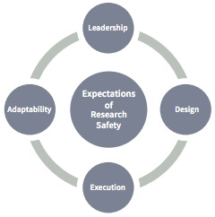
Figure 1. Four Elements of Research Safety
Leadership
Lead by example, adhere to the rules, and be willing to speak up if you see unsafe practices. Faculty and other supervisor are urged to include safety on the agenda and incorporate it into their group thinking and practices.
Lab members openly discuss safety concerns.
PI/laboratory manager and research group members maintain an environment in which personnel feel free to raise concerns.
Actions confirm safety as a priority that supports and is compatible with good research.
The feedback loop on safety issues (bottom-up and top down) is closed (addressed) at the PI/lab management level.
Design
Take the time to systematically assess risk and plan for the hazards identified. Incorporate safety into laboratory procedures.
PI/lab manager understands the risks of the research being conducted, are actively involved in the laboratory safety program, and integrate safety into the laboratory research culture.
Execution
Take action to control your risks. Make sure you have the right protective equipment, engineering controls are working correctly, and researchers are training to safety perform their work. Principal investigators must enforce the established controls in their lab.
PI/lab manager ensures that the personnel, equipment, tools, procedures, and other resources needed to ensure safety in the academic research laboratory are available.
Lab members identify and manage their own safety environment and are receptive and responsive to queries and suggestions about laboratory safety from their lab colleagues.
Lab members conduct their research using protocols and procedures consistent with best safety practices in the lab.
Adaptability
Research is not a static endeavor; managing safety requires ongoing reassessment, feedback and reinforcement. Encourage reporting by members when identifying and reviewing lessons learned after and using these as teaching opportunities. Involve all lab incidents and near-misses.
PI/lab manager evaluates the laboratory safety status themselves and knows what and how to manage changes to enhance safety in the laboratory.
The PI/lab manager and lab group supports a continuous learning environment in which opportunities to improve safety are sought, communicated and implemented.
Safety discussions become part of regular lab meetings; near misses within the lab are reported in a timely manner and safety information is requested by lab members to prevent future mishaps through understanding HOW and WHY.
2.4Elements to Actions: Research Laboratory Management
Delegation
A PI often delegates responsibilities to a Laboratory Manager or Senior Researcher. While this is an accepted and valuable model of research organization, there are often two potential issues associated with this arrangement: (1) the delegation involves responsibility but may have little or no authority or power to enforce practices, and (2) communication between the PI and Manager can be affected by numerous demands on PI time. Mindfulness of these issues assists in developing and maintaining a strong and healthy research environment. Some key aspects of effective delegation include matching the correct skill level to the task, having firm goals, and providing solid support.
“It’s one of the weirdest aspects of scientific training: You spend years learning how to do the science, hands-on. The natural progression, if you’re successful, is to become head of your own lab and stop spending time at the bench. There just isn’t time or bench space for it anymore: All your time is spent (between teaching gigs and committee meetings) obtaining and managing money and hiring and managing people. You’re no longer a scientist; you’re a manager of scientists and your own scientific enterprise. And what training did you get for that?”
-Jim Austin, Nov. 9, 2007, “Special Feature: Laboratory Management”, Science (https://www.sciencemag.org/careers/2007/11/special-feature-laboratory-management).
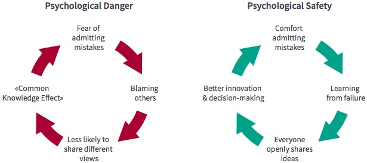
Figure 2. Psychological Danger vs Psychological Safety
2.5Risk Assessment for Research
Evaluation and assessment of risk is a key part of designing and conducting an experimental protocol. Not only does a thorough risk assessment allow researchers to systematically identify and control hazards, but it also improves the quality of science through more thorough planning, a better understanding of the variables, and by sparking creative and innovative thinking. It allows one to implement tighter controls which reduces uncertainty and increases the safety and quality of your results/product. Failure to consider risk and hazards from the beginning of experimental design can produce delays, roadblocks, and frustration later in the process.
The Risk Assessment process is broken down into four steps and helps to spark creative and innovative thinking.
1) Explore:
Determine the scope of your work, beginning with research objective. What question(s) are you trying to answer? Conduct a broad review of the literature. Speak with others who have done similar work. Are the risks different for different approaches?
2) Plan:
Outline your procedure/tasks. This may include a deeper dive into specific topics in the literature. Determine hazards associated with each step, and control measures for reducing risk. EH&S can help with more detailed guidance on how to handle certain hazards.
3) Challenge:
What assumptions did you use? Question the importance of each step. Seek advice from others. Ask yourself “what could go wrong?”. Have I missed anything? Consider all possible outcomes, how high is the risk?
4) Assess:
Implement a model, prototype, or trial run. Can you perform a dry run to familiarize yourself with equipment and procedures? Can you test your experimental design at a smaller scale or with a less hazardous material? Determine if any design changes are needed. Run your experiment and monitor how your controls perform. Assess as you go and make changes as needed.
Important Information
Risk Assessment
It is important to stop, think and plan before doing as well as assess and iterate as you go. Remember, EH&S is always here to assist.
2.6Safety Culture & Biosafety
What is special or unique about Safety Culture for researchers working with biological agents or rDNA? All of the above attributes form the basis for safe research but just like any science specialty, there are unique issues that must be considered when working with these materials, including:
They can be alive and as such, can grow, replicate and sometimes, move.
Their effect on the researcher can be influenced by the health of the researcher.
They can spread through numerous mechanisms (droplet, aerosol, mucosal, oral, fecal, blood borne).
They can insert themselves into a genome and have long term effects.
The diagram on the next page illustrates some of the many factors that must be taken into account when planning to work with biologicals and/or rDNA; many of these issues will be discussed in this manual.
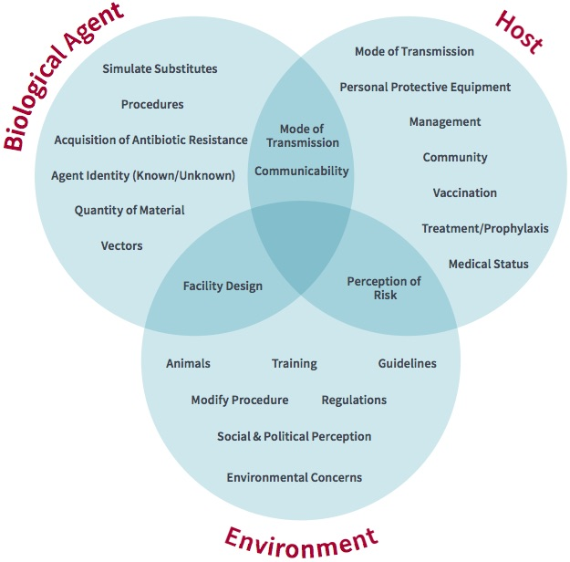
Figure 3. Factors to consider when working with biologicals and/or rDNA.
We wish to suggest a structure for the salt of deoxyribose nucleic acid (D.N.A.). This structure has novel features which are of considerable biological interest…It has not escaped our notice that the specific pairing we have postulated immediately suggests
a possible copying mechanism for the genetic material.
Watson and Crick (1953),Nature
3Recombinant DNA & Synthetic Nucleic Acids: Regulations & Guidelines
3.1NIH Guidelines
The use of recombinant DNA (rDNA) and synthetic nucleic acids (sNA) are regulated by the National Institutes of Health (NIH); the guidelines can be found in the publication NIH Guidelines for Research Involving Recombinant or Synthetic Nucleic Acid Molecules (NIH Guidelines) (https://osp.od.nih.gov/policies/biosafety-and-biosecurity-policy#tab2/). These guidelines are the official guide to all rDNA and sNA work done at Stanford. It is important to realize that following these guidelines is the responsibility of all investigators at Stanford University and not solely that of investigators that are funded by NIH.
3.2Exempt rDNA/sNA
The guidelines specify a number of different categories of rDNA/sNA molecules. One of the most important categories is the Exempt category. Experiments that qualify for this category do not need approval by the Stanford University Institutional Biosafety Committee (the Administrative Panel on Biosafety [APB], see Chapter 5). To determine if your experiments are exempt, you can check Section III, Category F in the NIH Guidelines (online); a short reference guide is presented in Table 1 and 2.
3.3Non-Exempt rDNA/sNA
If your experiment does not fall within the exempt categories (Table 2), you must obtain APB approval.
3.4Viral Vectors and Transgenes
All vectors are not the same. More importantly, the class of gene insert can change the Biosafety level of the construct. It is also important to realize that obtaining a cloning/expression vector from a commercial source does not mean it is automatically exempt or a BSL – 1. Table 3 lists many of the more common viral vectors in combination with different classes of inserts and their associated BSL level.
Important Information
Viral Vector Inserts and Envelopes
Some inserts such as oncogenes or toxins will raise the biosafety containment level of the viral vector (See Table 3); the same is true for certain envelopes.
3.5Human Gene Transfer
Protocols involving the use of rDNA/sNA for gene transfer into humans, whether done directly in the subject or in vitro and subsequently put into the subject, must be submitted to both the APB and the Stanford University Institutional Review Board (IRB) for Medical Human Subjects. Federal regulations require the local IBC (at Stanford, the APB), upon receiving submission of a Human Gene Transfer protocol, to review the following aspects to determine if NIH Recombinant Advisory Committee (RAC) review is required:
The protocol uses a new vector, genetic material, or delivery methodology that represents a first-in- human experience, thus presenting an unknown risk.
The protocol relies on preclinical safety data that were obtained using a new preclinical model system of unknown and unconfirmed value.
The proposed vector, gene construct, or method of delivery is associated with possible toxicities that are not widely known and that may render it difficult for oversight bodies to evaluate the protocol rigorously.
Dependent upon the above findings the protocol will be either be submitted for RAC review or the APB will state that RAC review is not required.
Table 1. Recombinant and Synthetic Nucleic Acid Molecules (NIH guidelines).
If your experiment is in an exempt category, APB approval is not necessary. If your experiment does not fall within the exempt categories, you must have current APB approval (also see Table 2).
Is your synthetic nucleic acid designed to: (1) neither replicate nor generate nucleic acids that can replicate in any living cell, and (2) not integrate into DNA, and (3) not produce a toxin that is lethal for vertebrates at an LD50 of less than 100 nanograms per kilogram body weight?
Yes
Exempt (III-F-1)
Is your recombinant or synthetic nucleic acid molecule not in an organism, cell or virus and not been modified or manipulated to render it capable of penetrating cellular membranes?
Yes
Exempt (III-F-2)
Is your recombinant or synthetic nucleic acid molecule solely from a single source that exists contemporaneously in nature?
Yes
Exempt (III-F-3)
Is your recombinant or synthetic nucleic acid molecule solely from a prokaryotic host and propagated in the same host or transferred to another host by naturally occurring means?
Yes
Exempt (III-F-4)
Is your recombinant or synthetic nucleic acid molecule from a eukaryotic host and propagated in the same host?
Yes
Exempt (III-F-5)
Is your recombinant or synthetic nucleic acid molecule from species that naturally exchange DNA?
Yes
Exempt (III-F-6)
Does your genomic DNA contains a transposable element that does not contain any recombinant and/or synthetic nucleic acids?
Yes
Exempt (III-F-7)
Recombinant or synthetic nucleic acid molecule which does not present a significant risk to health or the environment, as determined by the NIH*
Yes
Exempt (III-F-8)
*The NIH has determined that rDNA/sNA from infectious agents of BL-2 (see Appendix A) or above is not exempt and must receive Biosafety approval. Additionally, certain cloning vectors, i.e. Adeno- or Sindbis-based vectors, or amphotropic MMLV based vectors, are some examples of rDNA that are non-exempt.
Table 2. Experiments requiring APB approval.
Approval required for experiments involving:
(Specific NIH Guideline Section)
Further Information and Examples:
Deliberate transfer of a drug resistance trait to microorganisms that are not known to acquire the trait naturally if such acquisition could compromise the ability to control disease agents in humans, veterinary medicine or agriculture. (III-A-1-a)
Transferring a drug resistance trait that is used, had previously been used, may be used (including outside the U.S.), or that is related to other drugs that are used to treat or control disease agents.
Examples include transfer of: erythromycin resistance into Borrelia burgdorferi; pyrimethamine resistance into Toxoplasma gondii; chloramphenicol resistance into Rickettsia conorii; tetracycline resistance into Porphyromonas gingivalis.
Cloning of DNA, RNA or synthetic nucleic acid molecules encoding toxins lethal to vertebrates at an LD50 of <100 ng/kg body weight. (III-B-1)
Cloning toxins (or using plasmids that express toxins with low LD50s).
Transfer of recombinant or synthetic nucleic acid molecules, or DNA or RNA derived from recombinant or synthetic nucleic acid molecules into human research participants. (III-C-1)
Use of recombinant or synthetic nucleic acid molecules, or DNA or RNA derived from recombinant or synthetic nucleic acid molecules, that meet ANY of the following four criteria:
Contain >100nt, or
Possess biological properties that enable genome integration, or
Have the potential to replicate in a cell, or
Can be translated or transcribed.
Examples include: use of a defective adenoviral vector to deliver the CFTR gene intranasally to patients with Cystic Fibrosis; introduction of an HSV-TK transduced cell line into patients with epithelial ovarian carcinoma; introduction of a shRNA delivered in a plasmid, bacterial or viral vector.
Risk Group 2, Risk Group 3, Risk Group 4 or Restricted Agents used as Host-Vector Systems. (III-D-1)
The introduction of recombinant or synthetic nucleic acid molecules into Risk Group 2, 3, 4, or Restricted Agents that meet ANY of the following criteria:
Have the potential to replicate in a cell, or
Possess biological properties that enable genome integration, or
Produce a toxin lethal to vertebrates at an LD50 of <100ug/kg body weight
Examples include: Adenovirus, Herpes virus, Lentivirus, Amphotropic or VSV-g pseudotyped Murine Retrovirus, Human Retrovirus, Vaccinia virus Vesicular Stomatitis virus, and Adeno-Associated virus with helper virus.
DNA from Risk Group 2, Risk Group 3, Risk Group 4 or Restricted Agents cloned into nonpathogenic prokaryotic or lower eukaryotic host-vector systems. (III-D-2)
Transfer of DNA from Risk Group 2, 3, 4, or Restricted Agents into
nonpathogenic prokaryotes or lower eukaryotes.
Use of pathogens or defective pathogens as vectors.
Examples include: Adenovirus, Herpes virus, Lentivirus, Amphotropic or VSV-g pseudotyped Murine Retrovirus, Human Retrovirus, Vaccinia virus Vesicular Stomatitis virus, and Adeno-Associated virus with helper virus.
Infectious DNA or RNA viruses or defective DNA or RNA viruses in the presence of helper virus in tissue culture systems. (III-D-3)
rDNA experiments involving Risk Group 2, 3, or 4 pathogens.
rDNA experiments involving ≤ 2/3 of the genome from eukaryotic viruses in the presence of a helper virus.
Examples include: HIV, HTLV-I & II, West Nile Virus, and Lymphocytic
Choriomeningitis Virus.
Whole animals, including transgenic animals. (III-D-4)
Experiments utilizing any of the following that may lead to transmissible infection either directly or indirectly as a result of complementation or recombination in the animal:
> 2/3 of eukaryotic viral genome, or
Animals containing sequences from viral vectors, or
Stable integration of recombinant or synthetic nucleic acid molecules, or
nucleic acids derived therefrom, into the germline.
Use of viable recombinant or synthetic nucleic acid molecule-modified Risk
Group 2, 3, 4 or Restricted Agent microorganisms tested on whole animals.
Whole plants. (III-D-5)
Experiments involving exotic infectious agents when recombinant or synthetic nucleic acid molecule techniques are associated with whole plants.
Experiments with plants involving cloned genomes of readily transmissible exotic infectious agents.
Experiments with plants involving readily transmissible exotic infectious agents (i.e. soybean rust fungus Phakopsora pachyrhizi, maize streak or other viruses) in the presence of their specific arthropod vectors.
Experiments involving plants or their associated organisms and the introduction of sequences encoding potent vertebrate toxins.
Experiments involving microbial pathogens of insects, arthropods or small animals associated with plants if the recombinant or synthetic nucleic acid molecule-modified organism can detrimentally impact the ecosystem.
Large-scale DNA work. (III-D-6)
≥ 10 liters of culture combined.
Examples include: Use of ≥10 L fermentor; growing up to five 2 L flasks of rDNA culture (i.e. E. coli K-12).
Influenza virus. (III-D-7)
Experiments with Influenza virus shall be conducted at the BSL containment corresponding to the Risk Group of the virus that was the source of the majority of segments.
Experiments that alter antiviral susceptibility may increase containment level requirements.
Examples of BSL3 influenza work: 1957-1968 Human H2N2, Highly pathogenic avian influenza H5N1 strains within the Goose/Guangdong/06-like H5 lineage (HPAI H5N1), 1918 H1N1.
a Refers to the parental or wild-type virus and some of the common deletions used in viral vectors. MMLV, Moloney murine leukemia virus; SIV, simian immunodeficiency virus. b Refers to ability of vector to infect cells from a range of species. Ecotropic generally means able to infect only cells of the species originally isolated from or identified in. Please note that the ecotropic host for HIV and HSV would be human cells, but the ecotropic host for MMLV would be murine cells. Amphotropic and VSV-G-pseudotyped virus host range includes human cells. c Shown are general categories of cellular genes and functions. Please note that there are differences in the containment level for the same class depending on whether the viral vector integrates into the recipient genome at a high rate. The general categories are as follows: S, structural proteins (actin, myosin, etc.); E, enzymatic proteins (serum proteases, transferases, oxidases, phosphatases, etc.); M, metabolic enzymes (amino acid metabolism, nucleotide synthesis, etc.); G, cell growth, housekeeping; CC, cell cycle, cell division; DR, DNA replication, chromosome segregation, mitosis and meiosis; MP, membrane proteins, ion channels, G-coupled protein receptors, transporters, etc.; T, tracking genes such as those for green fluorescent proteins and luciferases and photoreactive genes; TX, active subunit genes for toxins such as ricin, botulinum toxin and Shiga and Shiga-like toxins; R, regulatory genes for transcription and cell activators such as cytokines, lymphokines and tumor suppressors; Ov and Oc, oncogenes identified via transforming potential of viral and cellular analogs, or mutations in tumor suppressor genes resulting in a protein that inhibits/moderates the normal cellular wild- type proteins. This does not include SV40 T antigen. SV40 T-antigen-containing cells should not be considered more hazardous than the intact virus. SV40 is considered a risk level 1 agent (the lowest level) according to the NIH Guidelines. The prevalence of SV40 infection in the U.S. population due to contaminated polio vaccine does not seem to have caused a statistically significant increase in the rate
of cancers. However, the data from the various studies on SV40 association with cancer are equivocal (Strickler et al. 1998; Butel and Lednicky, 1999; Dang-Tan et al., 2004). d This is a general assessment of containment levels for laboratory construction and use of these vectors for nonproduction quantities only based on the 4th edition of BMBL. This table cannot cover every potential use within a research or laboratory settings; as information is gained, risk assessments and containment levels may be changed. Local IBCs should use all available information and their best judgment to determine appropriate containment levels. BSL – 1* refers to the containment level based on parent virus risk group. However, most procedures involving the handling and manipulation of the viral vectors are done at BSL – 2 to protect cell cultures and viral stocks from contamination. e Certain specific strains of poxviruses, such as MVA, NYVAC, ALVAC and TROVAC, are considered low-risk agents and can be handled at BSL – 1 in certain cases.
From Biological Safety Principles and Practices, 4th ed., pg. 524, D.O. Fleming and D.L. Hunt, Ed, ASM Press, 2006.
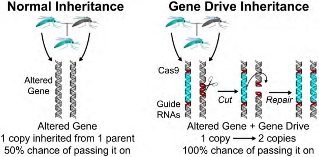
Figure 1. Genome Editing and Gene Drives
Image credit: Kevin Esvelt
Important Information
Human Gene Transfer
Conducting Gene Transfer experiments into human subjects requires both an IRB and an APB protocol.
3.6Genome Editing and Gene Drives
Multiple technologies exist to create permanent genomic modifications in in vitro cell culture and in vivo animal research models (Figure 2). Methodologies include, but are not limited to, Transcription Activator-Like Effector Nucleases (TALENS), Zinc Finger Nuclease mediated DNA repair (ZNF), Meganucleases, and CRISPR/Cas9 (clustered regularly interspaced short palindromic repeats) (Figure 1). These technologies can be used to create gene drives, a modification of an organism’s genome resulting in a more efficient spread of a trait through the population as compared to Mendelian inheritance. The Vice Provost and Dean of Research, on the recommendation of the Administrative Panel on Biosafety (APB), has established the following policy in order to protect the health of Stanford researchers and the environment.
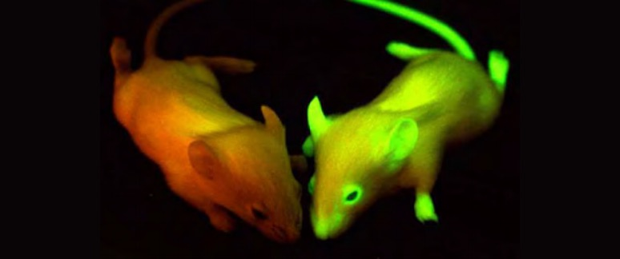
Figure 2. Glow in the Dark Animals
Example of Gene Editing
Per NIH regulation and as a requirement of Stanford policy, conducting genome-editing experiments on human embryos is prohibited.
Experiments that Require APB Approval
Human Clinical Studies
Study protocols that include either direct gene modification or the administration of donor cells that have been genetically modified must be filed with both the APB and the Administrative Panel on Human Subjects Research (IRB).
Basic Research Studies (In Vitro and In Vivo)
Delivery via viral vectors: Non-exempt viral vectors and Risk Group 1 viral vectors (e.g. AAV) with human target sequences. Genome target scans of the guide RNA (gRNA) sequence is highly recommended to identify the possibility of off- target effects on the human genome. www.rgenome.net/cas-offinder.
Usage of a gene drive (via viral or non-viral delivery methods) with invertebrate and vertebrate animals or on plants: In addition to the description of the planned experiments and safety of the delivery mechanism, the APB protocol must also address the following containment guidelines.
Molecular containment: Will the guide RNA and the nuclease be located in separate loci? Will a synthetic target sequence be used that is absent from the wild type target organism?
Ecological Containment: Will the experiments be performed outside the habitable range of the target organism?
Reproductive Containment: Will a laboratory isolate/organism be utilized that cannot reproduce with wild type organisms?
Barrier Containment: What physical and chemical barriers will be used to contain the target organisms and prevent their release into the environment?
Genome editing tools (delivered via viral or nonviral delivery methods) that:
Modify an infectious agent to increase host range, transmissibility, or pathogenicity of that particular agent.
Modify the host to increase its susceptibility to an infectious agent.
Express a toxin with a low LD50 (≤100 ng/kg) in the genome of both in vitro and in vivo research models.
Figure 3. Plant Research
Exempt Experiments
Genome editing experiments that fall under the exempt category involve the use of non- viral transfection methods (eg. electroporation, lipofection) to create genomic insertions, point mutations and deletions in somatic cells in vitro or in vivo. These insertions include rDNAs that express oncogenes or tumor suppressor genes. However, if the experiment involves the expression of a toxin with an LD50 toxin ≤100 ng/kg, the work becomes non-exempt and an APB protocol submission and approval is required.
Important Information
Using AAV?
Use of AAV with CRISPR or gene editing tools may require APB approval
3.7Transgenic Plants
Experiments to genetically engineer plants by rDNA/sNA methods may require registration with the APB (BL2-P or higher, see OBA – NIH Guidelines and Appendix C for additional information). To prevent release of transgenic plant materials to the environment, the guidelines provide specific plant biosafety containment recommendations for experiments involving the creation and/or use of genetically engineered plants. (Figure 3)
Plant Biosafety levels are categorized into BL1-P to BL4-P (Table 4).
Table 3. Viral vectors and transgene containment.
Gene transfer vectora
Host rangeb
Insert or gene functionc
Laboratory containment leveld
MMLV based – gag, pol, and env deleted
Ecotropic
Amphotropic, VSV-G
pseudotyped
S, E, M, G, CC, T, MP, DR, R, TX,
Ov, Oc
S, E, M, MP, DR, T, G
Ov, Oc, R, CC
TX
Adenovirus based – serotypes 2, 5 and 7; E1 and E3 or E4 deleted
Broad host range, infective for many cell types
S, E, M, T, MP, DR, R, G, CC
Ov, Oc
TX
BSL – 2
BSL2+
BSL – 3
Alphavirus based – SFV, SIN
Broad host range
S, E, M, T, MP, DR, R, G, CC
Ov, Oc
TX
BSL – 2
BSL2+
BSL – 3
Baculovirus based
Broad mammalian host cell range
S, E, M, T, MP, DR, R, G, CC
Ov, Oc
TX
BSL – 1*
BSL2
BSL – 2+/BSL – 3
AAV based – rep, capdefective
Broad host range; infective for many cell types, including neurons
S, E, M, T, MP, DR, G
Ov, Oc, R, CC
TX
BSL – 1*
BSL2
BSL – 2+/BSL – 3
Poxvirus based – canarypox, Vacciniae
Broad host range
S, E, M, T, DR, MP, CC, R, G
Ov, Oc
TX
BSL – 2
BSL2+
BSL – 3
*EIA—Exotic Infectious Agent
**BL4-P containment is recommended only for experiments with readily transmissible exotic infectious agents whether transgenic or not, such as air-borne fungi or viruses in the presence of their arthropod vectors that have the potential of being serious pathogens of major US crops.
Table 4. Plant biosafety levels.
From Practical Guide to Containment: Plant Biosafety in Research Greenhouses, Revised Edition, page 13, D. Adair and R. Irwin.
Criteria
Transgenic Plants
Transgenic Microbes: Exotic
Transgenic Microbes: Non-Exotic
Transgenic Insects/Animals/Assoc. Microbes
Not a noxious weed or cannot outcross with one
BL1-P
Not easily disseminated
BL1-P
No detriment to environment
BL2-P or BL1-P+
BL1-P
BL2-P or BL1-P+
Noxious weed or can interbreed with weeds
BL2-P or BL1-P+
Contains complete genome of non-EIA*
BL2-P or BL1-P+
Contains genome of EIA
BL3-P or BL2-P+
Treated with an EIA
BL3-P or BL2-P+
Detriment to environment
BL3-P-4**
BL2-P or BL1-P+
BL3-P or BL2-P+
Involves EIA with detriment to environment
BL3-P or BL2-P+
May reconstitute genome of infectious agent in plants
BL3-P or BL2-P+
Contains Vertebrate Toxin
BL3-P
BL3-P
BL3-P
*EIA—Exotic Infectious Agent **BL4-P containment is recommended only for experiments with readily transmissible exotic infectious agents whether transgenic or not, such as air-borne fungi or viruses in the presence of their arthropod vectors that have the potential of being serious pathogens of major US crops.
Important Information
Plant Research Permits
Additional permits might be required from state and federal agencies before research with plants can be done. Contact Biosafety for information.
4Infectious Agents: Regulations and Guidelines
4.1Tissue Culture, Human and Primate Tissue
The potential laboratory hazards associated with human cells and tissues include the bloodborne pathogens Hepatitis B virus (HBV), Hepatitis C virus (HCV), and Human Immunodeficiency Virus (HIV), as well as agents that may be present in human tissues (e.g. Mycobacterium tuberculosis, Streptococcus, Toxoplasma, etc.) Non-human primate cells and tissues also present risks to laboratory workers (Herpes B virus), as do cells transformed with viral agents such as SV-40, EBV, or HBV, cells carrying viral genomic material and tumorigenic human cells. All are potential hazards due to the possibility of exposure.
Cultured cells which are known to contain or be contaminated with a biohazardous agent (i.e. bacteria or virus) are classified in the same BSL as the agent. Cell lines which do not contain known human or animal pathogens are designated BSL – 1. The following list contains human or primate cells that are to be handled using BSL – 2 practices and containment:
Cells from blood, lymphoid cells, and neural tissue
All primary cell lines
Secondary (immortalized) cell lines
Cell lines exposed to or transformed by a human or primate oncogenic virus
Pathogen deliberately introduced or known endogenous contaminant
Fresh or frozen tissue explants
Note that this list is not conclusive and individual cases will be determined as they occur.
Universal Precautions is the concept of treating all human/primate blood and other body fluids, tissues and cells (including cell lines) as if they were known to be infectious for bloodborne pathogens.
All human blood, blood products, unfixed human tissue and certain body fluids shall be handled with Universal Precautions and BSL – 2 practices.
Table 1. Basis for the classification of biohazardous agents by biosafety level.
BSL 1
Agents that are not associated with disease in healthy adult humans
BSL 2
Agents that are associated with human disease which is rarely serious and for which preventive or therapeutic interventions are often available
BSL 3
Agents that are associated with serious or lethal human disease for which preventive or therapeutic interventions may be available (high individual risk but low community risk)
BSL 4
Agents that are likely to cause serious or lethal human disease for which preventive or therapeutic interventions are not usually available (high individual risk and high community risk)
Table 2. Summary of laboratory facilities for BSL 1 – 4.
BSL
Agents
Practices
Safety Equipment (Primary Barriers)
Facilities (Secondary Barriers)
1
Not associated with disease in healthy adults
Standard Microbiological Practices
As needed to allow for good microbiological practices
Open bench top
Sink required
2
Associated with human disease, hazard = percutaneous injury, ingestion, mucous membrane exposure
BSL – 1 practice plus: Limited access Biohazard warning signs
“Sharps” precautions Biosafety manual defining any needed waste decontamination or medical surveillance policies
Primary barriers: Class I
or II BSC or other physical containment devices used for all manipulations of agents that cause splashes or aerosols of infectious materials
PPE: laboratory coats; gloves; face protection as needed
BSL – 1 plus:
Autoclave available
3
Indigenous or exotic agents with potential for aerosol transmission; disease may have serious or lethal consequences
BSL – 2 practices plus:
Controlled access Decontamination of all waste Decontamination of lab clothing before laundering Baseline serum
Primary barriers: Class I
or II BSC or other physical containment devices used
for all open manipulations of agentsPPE: protective lab clothing, gloves, respiratory protection as needed
BSL – 2 plus:
Physical separation from access corridorsSelf-closing, double-door accessExhausted air not recirculated Negative airflow into laboratory
4
Dangerous/exotic agents which pose high risk of life-threatening disease, aerosol- transmitted lab infections, or related agents with unknown risk of transmission
BSL – 3 practices plus:
Clothing change before enteringShower on exitAll material decontaminated on exit from facility
Primary barriers: All procedures conducted in a Class III BSC, or Class I or II BSC in combination with full-body, air-supplied, positive pressure personnel suit
BSL – 3 plus:
Separate building or isolated zoneDedicated supply and exhaust, vacuum and decon systemsOther requirements outlined in the text of the BMBL
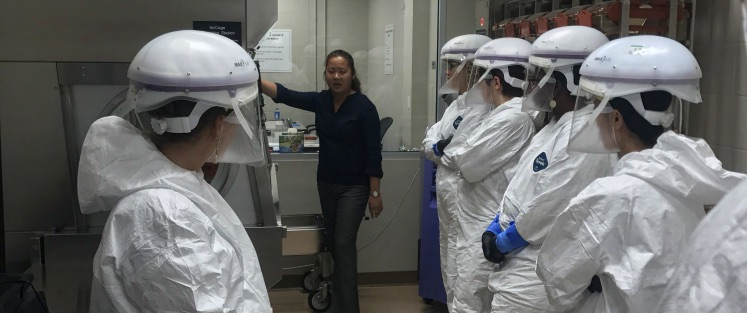
Figure 1. BSL – 3 Training
Universal Precautions include frequent hand washing, no mouth pipetting, no food or drink in the lab and proper disposal of biohazardous/ medical waste, as well as the use of engineering controls and personal protective equipment (PPE). Engineering controls include biosafety cabinets, ventilation systems, closed top centrifuge rotors, etc.; these are the primary methods to control exposure. PPE such as gloves, lab coats, and eye protection or face shields must be selected and used as appropriate. All material should be treated as medical waste (see Chapter 9).
Important Information
Wash Your Hands
At all Biosafety Levels your last line of protection is the SINK. After finishing all procedures and cleanup, wash your hands with soap and water.
Areas subject to Universal Precautions must have appropriate signs posted on doors and equipment; these signs can be obtained from EH&S (723.0448). Additional information on Universal Precautions is presented in Figure 2.
Biological agents are classified by Risk Group (RG); RG 1 being the least pathogenic to RG 4 being the most. The RG, together with the work to be done (experiments) is assessed to determine the Biosafety Level (BSL).
Important Information
Biosafety Levels
Risk Group (RG) 1 – 4 + Work (research) = Biosafety Level (BSL) 1 – 4
Historically agents are often referred to as BSL – 1-4 (vs RG1). Although this is not technically correct this manual stays with the norm and uses BSL regarding agents.
4.3Biosafety Level Classification
Stanford University follows the categorizing of infectious agents into levels as described in Biosafety in Microbiological and Biomedical Laboratories (BMBL), 6th edition (https://www.cdc.gov/labs/BMBL.html), written and published by the Centers for Disease Control (CDC) and NIH. The BMBL describes combinations of microbiological practices, laboratory facilities, and safety equipment in combination with four biosafety levels for various agents infectious to humans. The descriptions of biosafety levels (BSL) 1 – 4 parallel those in the NIH Guidelines for research involving recombinant DNA. Biosafety levels are also described for infectious disease activities that involve laboratory animals or plants. It is important to note that the guidelines presented in the BMBL are considered minimal for containment, and will be customized as needed.
The BSL categories are divided up by risk of disease combined with availability of preventive and therapeutic treatments. The four groups are shown in Table 1. For the list of agents and their categories, see Appendix A or go to https://my.absa.org/Riskgroups.
Table 3. Biosafety level work practice requirements.
Work Practices
BSL – 1
BSL – 2
BSL – 2+
BSL – 3
Public access
Not recommended
Limit access to lab while BSL – 2 work is being conducted
Restricted
Not permitted
Bench-top work
Permitted
Permitted only for low-risk procedures
Not permitted for biohazardous materials
Not permitted for biohazardous materials
Decontamination
Daily and following any spill
Daily and following any spill
Daily; immediately following work with biohazardous materials, and following any spill
Daily; immediately following work with biohazardous materials, and following any spill
Eating, drinking, applying lip balm, etc.
Permitted only in designated clean areas
Permitted only in approved and designated clean areas
Not permitted at any time; Food or drink may not be brought into or through lab
Not permitted at any time; Food or drink may not be brought into or through lab
Lab coats
Recommended
Required when work with BSL – 2 is being conducted
Required (wraparound disposable preferable)
Required (wraparound disposable required)
Personal Protective Equipment
Based on risk assessment
Required: Wear appropriate combinations of special protective clothing for all activities with biohazardous materials
Required: Wear appropriate combinations of special protective clothing for all activities with biohazardous materials
Required: Wear appropriate combinations of special protective clothing plus NIOSH N95 respirators or equivalent for all activities with biohazardous materials
Biological Safety Cabinet (BSC)
Not required
Required for all aerosol generated processes*
Required for all work with biohazardous agents
Required for all work with biohazardous agents
Storage Equipment
No Biohazard signs required
Biohazard signs required, all equipment must be labeled with contents
Biohazard signs required, all equipment must be labeled with contents
Biohazard signs required, all equipment must be labeled with contents
Physical containment
Decontaminate equipment immediately after use
Use physical containment devices during procedures that have a high potential to create aerosols* when using biohazardous material; Decontaminate immediately after use
Use physical containment devices (centrifuge safety cup, sealed centrifuge rotor) for all activities using biohazardous material; Open containers in a BSC; Decontaminate immediately after use
Use physical containment devices (centrifuge safety cup, sealed centrifuge rotor) for all activities using biohazardous material; Open containers in a BSC; Decontaminate immediately after use
Hand-washing facilities
Required
Required
Required (foot, elbow, or electronic activation preferable)
Required (foot, elbow, or electronic activation required)
Pipetting
Only mechanical device
Only mechanical device
Only mechanical device
Only mechanical device
HEPA-filtered vacuum lines
Recommended
Required
Required
Required
*Procedures include but not limited to: centrifuging, grinding, blending, vigorous shaking or mixing, sonic disruption, opening containers of biohazardous materials after above procedures.
4.4Laboratory facility requirements
Each BSL has its own corresponding requirements for the laboratory facilities.
The physical requirements described in Table 2 will be used in conjunction with additional protective mechanisms (see Chapter 7) to achieve personnel and environmental safety.
Important Information
Aerosols
Did you know aerosols can be generated by pipettes? Vortexing an infectious agent? Do it in a biosafety cabinet.
4.5Biosafety Level Work Practice Requirements
Each BSL is associated with work practices that address the potential risks. Along with practices for BSL1, 2 and 3, is a list of practices labeled as BSL – 2+. This category is used for BSL – 2 agents that are worked with using BSL – 3 practices. (Table 3)
4.6Biosafety Level 3 Laboratories
Biosafety Level 3 (BSL3) laboratories involve research using agents that are associated with serious or lethal human disease for which preventative or therapeutic treatments may be available. These laboratories are designed to protect individuals and the public through the containment of the agents used by both engineering and administrative controls. Any waste generated from these facilities must be sterilized before disposal outside of the facility. Access to these laboratories are tightly controlled and involve a rigorous mentored training process designed by the laboratory to ensure that individuals are both capable and highly knowledgeable in all procedures involving the agent and facility in use. (Figure 1)
The primary hazards to personnel working with BSL – 3 agents involve autoinoculation, exposure to aerosols and ingestion. In order to prevent infection through these modes of transmission, containment devices such as a biosafety cabinet should be used along with procedures and practices that are thoroughly vetted before work begins. In addition to primary engineering and administrative controls, the facility itself must meet strict design guidelines to insure the environment and public are protected from any accidental release inside the facility.
Due to the intrinsic risk associated with work at BSL – 3, each researcher’s knowledge and ability must be evaluated individually, with a gradient of experience and proficiency expected. All researchers must demonstrate competency with a minimum base skill set along with being secure in their potential to ask questions and express concerns. All labs should have an internal expert knowledge source to serve as a mentor to ensure specific skills are passed on.
To ensure the safety of all researchers and the environment, the APB requires BSL – 3 researchers to demonstrate appropriate theoretical knowledge and practical skillsets in the following areas:
Adhering to general lab safety procedures, including donning and doffing PPE.
Setting up, cleaning out, and properly using the biosafety cabinets.
Bringing materials into and out of the biosafety cabinet.
Growing and manipulating cultures safely, with emphasis on the importance of avoiding aerosol generation during all operations.
Performing the essential procedures required of most protocols, such as centrifugation, plating and incubating.
Using the autoclave, disposing of waste.
Emergency management and procedures.
Training should be thoroughly documented and consist of multiple sessions that culminate in a practical test to assess the skill of the researcher. These records should be kept in the lab and sent to the Biosafety group for evaluation. The results for these tests will also serve as the basis for access to the BSL3 facility.
Formal training is strongly encouraged. There are a number of intensive BSL – 3 training courses offered across the country; please contact the Stanford Biosafety group to discuss what is best suited for individual needs.
Contact Biosafety if you are considering doing research with a BSL3 agent.
Due to the success of worldwide efforts to contain and eliminate polio, the CDC and WHO are moving towards the eventual eradication of all poliovirus. Currently, wild poliovirus type 1 (WPV1) infectious materials , all poliovirus type 2 (PV2) and poliovirus type 3 (PV3) materials, including WPV2 and WPV3, vaccine-derived poliovirus type 2 (VDPV2) and vaccine-derived poliovirus type 3 (VDPV3), and Sabin type 2-related poliovirus, are subject to containment. This includes both laboratory strains and isolates and other potentially infectious materials, such as stool or respiratory specimens that originate from areas with a high prevalence of poliovirus. The CDC and WHO plans to move towards the containment of all poliovirus types.
Users of these materials will eventually be asked to register with the CDC as a designated poliovirus essential facility. The criteria for these facilities are similar to Biosafety Level 3 laboratories with additional biosecurity elements. Please refer to the CDC webpage (bit.ly/3RfyGgF) and the WHO GAPIII document (https://bit.ly/2yOzPBX) for more information on the upcoming requirements and conditions for poliovirus research.
Laboratories using poliovirus or other materials potentially containing poliovirus are encouraged to re-evaluate their use of these materials and destroy any unneeded samples.
If you are currently working with poliovirus or materials that may contain poliovirus contact the Biosafety group.
4.8Select Agents and Toxins
Select Agents and Toxins are a collection of designated infectious agents and toxins that, by their nature, have the potential to pose a severe threat to public health and safety; this threat has resulted in the creation of a number of legislative acts.
Initiated with the Antiterrorism and Effective Death Penalty Act of 1996 (https://bit.ly/2k9cMgJ), and bolstered by the USA Patriot Act of 2001 (https://bit.ly/2f7oyYP) and the Public Health Security and Bioterrorism Preparedness and Response Act of 2002 (https://bit.ly/2k8sGrD), the Select Agents and Toxins program oversees the transfer, possession, and use of biological agents (viruses, bacteria) and toxins that have the potential to be a severe threat to public or environmental health. Possession of the specified agents or toxins without registration carries severe civil and criminal penalties. Possession of Select Agents or Toxins over exempt amounts is not allowed at Stanford at this time and would require prior approval from the Vice Provost and Dean of Research and registration with the FSAR Program. The application and further information may be found on the Federal Select Agents Registry (FSAR) website: https://www.selectagents.gov/SelectAgentsandToxins.html
Stanford University is currently not registered for possession of viable select agents. For use of any biological select agent, contact the Biosafety Program.
4.9Stanford University Select Toxins Program
Possession of small quantities of select toxins may be exempt from registration with the NSAR program. The Stanford Select Toxins Program summarizes the University’s requirements for possession of NSAR Select Toxins under the exempt quantities. For additional information please go to the EH&S web site (https://bit.ly/2j7NAWW).
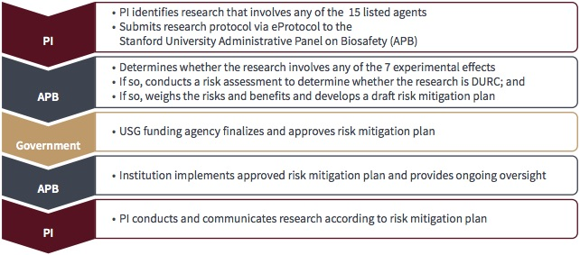
Figure 3. Overview of the Process for Institutional DURC Oversight
Important Information
Prions and Prion-like Proteins
Prions and prion-like proteins are defined as proteins (human or animal) that fall into one of the below categories:
Proteins that are highly associated with proteinpathies, including, but not limited to:
Proteins that confer a disease state that is transmissible from cell to cell.
Proteins that have a fibrillar or aggregated form that has been shown to “seed” a pathology associated with a disease.
4.10Requirements for Research with Prions and Prion-Like Proteins
Per NIH guidelines (https://osp.od.nih.gov/policies/biosafety-and-biosecurity-policy#tab2/) and the Stanford University Administrative Panel on Biosafety policy (see Chapter 5, Charge to the APB), the APB requires researchers to have an approved APB protocol and follow specific guidelines for working with prions and prion-like proteins.
Specific in vitro or in vivo work with such proteins is classified as BSL2 or ABSL2 and requires an APB- approved protocol. This includes, but is not limited to, the following types of work:
Synthesis, use or production of protein in high concentration
Generation or use of mutated proteins
Generation or use of fibrillar or misfolded forms of proteins
APB protocols must include established prion disinfection/decontamination and destruction/ disposal protocols, or specific Standard Operating Procedures (SOPs). These SOPs must be provided for review by the APB. If necessary, contact Biosafety for appropriate methods. Refer to the following references for established infection control guidelines for disinfection/decontamination:
Biosafety Manual (see Chapter 11, Waste and Decontamination)
4.11Dual Use Research of Concern (DURC)
A May 2025 Executive Order has directed government agencies to revise or replace the 2024 “United States Government Policy for Oversight of Dual Use Research of Concern and Pathogens with Enhanced Pandemic Potential” with legislation and oversight focused on preventing dangerous gain-of-function research. While we await further regulation, the following applies:
Within the 2025 Order, “dangerous gain-of-function research” is defined as scientific research on an infectious agent or toxin with the potential to cause disease by enhancing its pathogenicity or increasing its transmissibility.
The 2025 Order defines covered research activities as those that could result in significant societal consequences and that seek or achieve one or more of the following outcomes:
Enhancing the harmful consequences of the agent or toxin;
Disrupting beneficial immunological response or the effectiveness of an immunization against the agent or toxin;
Conferring to the agent or toxin resistance to clinically or agriculturally useful prophylactic or therapeutic interventions against that agent or toxin or facilitating their ability to evade detection methodologies;
Increasing the stability, transmissibility, or the ability to disseminate the agent or toxin;
Altering the host range or tropism of the agent or toxin;
Enhancing the susceptibility of a human host population to the agent or toxin; or
Generating or reconstituting an eradicated or extinct agent or toxin.
If you think your work qualifies as dangerous gain-of-function research, or if you receive any request for information regarding your research and dangerous gain-of-function oversight, contact the Stanford Biosafety Officer (biosafety-officer@lists.stanford.edu).
5Administrative Panel on Biosafety
5.1Administrative Panels on Research Compliance at Stanford
The Administrative Panels on Research Compliance assure the institution’s compliance with federal, state and local regulation of research and teaching activities by reviewing those activities which involve the use of human subjects, laboratory animals, biohazardous agents, recombinant DNA, or radiological hazards. In addition, the Administrative Panels are responsible for assessing current research policy and helping formulate new policy governing the conduct of research and training at Stanford with respect to the subjects or agents under the jurisdiction of each panel.
Important Information
APB Oversight
Biohazardous materials include any organism that can cause disease in humans, or cause significant environmental or agricultural impact, such as:
Bacteria
Viruses
Parasites
Prions and Prion-like proteins
Fungi
Human or primate tissues, fluids, cells, or cell cultures/lines that are known to or are likely to contain infectious organisms
Human or animal tissues, fluids, cells, or cell cultures/ lines that have been exposed to infectious organisms
Animals known to be reservoirs of zoonotic diseases
The Biosafety programs oversees the use of the recombinant and synthetic nucleic acid molecules. This includes:
Recombinant and synthetic nucleic acid molecules
Transgenic animals
Trangenic plants
Human gene transfer or studies using recombinant DNA
Administrative Panel on Biosafety (APB)
The NIH has mandated the presence of an Institutional Biosafety Committee for all organizations that come under NIH regulations.
At Stanford University, the Administrative Panel on Biosafety (APB) is an established Institutional Biosafety Committee (IBC) that reviews projects involving infectious agents, recombinant DNA (rDNA), and synthetic nucleic acid molecules (sNA). APB approval is required for all work that uses biological agents classified as BSL – 2 or above, or rDNA classified as non-exempt by the NIH. Per NIH guidelines (https://osp.od.nih.gov/policies/biosafety-and-biosecurity-policy#tab2/) and the Stanford University Administrative Panel on Biosafety Charge (see below) the APB also requires researchers to have an approved APB protocol and follow specific guidelines for working with prions and prion-like proteins; additional information can be found in Chapter 4.
All research personnel using BSL 2 or 3 biohazardous agents must be appropriately trained and familiar with the safety procedures in handling these materials. The PI/Laboratory Director is responsible for training and ensuring that all biohazardous agents are used at the appropriate level of biological containment.
APB approval is not required for experiments which involve the use of BSL 1 agents exclusively (without the use of recombinant DNA molecules). However, any investigator working with human blood, clinical specimens, human tissues/tissue culture, or other potentially infectious materials must still meet the compliance requirements of the OSHA Bloodborne Pathogen Standard.
5.2Compliance Panel Oversight
Human Clinical Research Protocols (IRB/APB)
Protocols involving the use of infectious agents and/or rDNA/sNA for gene transfer into humans, whether done directly in the subject or in vitro and subsequently put into the subject, must be submitted to both the APB and the Stanford University Institutional Review Board (IRB) for Medical Human Subjects prior to initiation of protocol. The APB usually reviews the human clinical research protocols prior to the IRB review. Like the APB, the IRB uses eProtocol for its reviews.
Stem Cell Research (SCRO/APB)
All research involving the use of Stem Cells come under the Institutional Review Board/Stem Cell Research Oversight Panel (IRB/SCRO Panel) within the Research Compliance Office (RCO). As mandated by State Law, all University research projects involving human stem cells must be reviewed and approved by the IRB/SCRO Panel. The IRB/SCRO Panel is responsible for providing scientific and ethical review of all proposed research projects involving all human stem cells. This review is in addition to other compliance panel reviews that may be required such as Animal Care and Use, or Biosafety. The IRB/SCRO uses eProtocol for its reviews.
Research involving infectious agents and/or rDNA/sNA and Animals (APLAC/APB)
Research involving the use of infectious agents and/ or non-exempt rDNA/sNA with animals (in vivo) requires both APB and Administrative Panel on Laboratory Animal Care (APLAC) approval. These approvals are not required to be obtained in any specific sequence but both must be approved prior to any research being done. APLAC uses eProtocol for its reviews.
Important Information
Research Compliance Panels
at Stanford
Panel
Oversight
APB
Biologicals BSL 2/3
rDNA/synthetic nucleic acids
Prion/Prion-like proteins
Use of biologicals/rDNA in humans
Use of biologicals/rDNA in animals
APLAC
Animals
IRB
Human Subjects
SCRO
Human Stem Cells
The APB Review Process
At Stanford University, research involving rDNA and/ or Biohazardous Agents is regulated by the NIH and comes under review of the Stanford University Administrative Panel on Biosafety (APB).
Research that involves the use of the above materials (excluding exempt rDNA (see Chapter 2) and clinical research that requires Institutional Biosafety Committee approval MUST be reviewed and approved by the APB prior to work being done. The APB, along with the Stanford IRBs, APLAC and SCRO, uses eProtocol, a web-based system that coordinates new protocols, updates, renewals, and reminders.
The flow chart in Figure 1 illustrates the eProtocol Biosafety workflow.
The APB meets the third Wednesday of each month; protocol applications that require APB review, if submitted by the first of the month, will normally be reviewed by the panel at that month’s meeting.
Protocol Actions
Renewal: an update is required on the anniversary of the protocol approval; this is an opportunity to ensure that all personnel, project information, locations, etc. are current. The eProtocol system will send the PI, research coordinator and administrator (if designated) automatic email reminders prior to the due date. If an annual update is not submitted the eProtocol system will close the protocol.
Revision: any approved protocol can be revised at any time during its approval cycle to update personnel, project information, locations, etc. Revisions will be reviewed on the same panel schedual as noted above.
Protocol Terminations
Duration of approval: BSL – 2 projects are normally approved for three years, with a requirement for renewals (annual updates); BSL – 3 and human clinical projects are approved for one year. Annual updates and revisions of projects are done through eProtocol Biosafety.
Violations and Termination of APB Approval: An approved user who willfully or negligently violates the University, federal, or state rules and regulations governing the use of biohazardous agents/rDNA may have his/her APB approval suspended or revoked by the Biosafety Officer pending review by the APB. The Biosafety Officer will prepare a report which will describe the violations in detail and will discuss the matter with the Chair of the APB who will then determine the final course of action.
5.3Charge to the Administrative Panel on Biosafety (Revised August 2024)
General Charge
The Administrative Panel on Biosafety reviews all University research and teaching activities involving the use of biohazardous agents, recombinant DNA molecules and synthetic nucleic acid molecules that require approval (“biosafety activities”), as defined below. Through these reviews, the Panel ensures that the activities described in the previous sentence and the related facilities are in compliance with applicable University policies and external regulations. The Panel is also responsible for review of biological agents as they relate to Biosecurity, identifying risks associated with the potential misuse of information, technologies, or products that may be generated.
The Panel advises the University and recommends policies to guide investigators and the Department of Environmental Health & Safety (EH&S) in carrying out the University’s Biosafety & Biosecurity Program in the acquisition, use, training, transfer, storage, disposal, and emergency response procedures for all biosafety activities. The Panel’s objective shall be to ensure that such activities meet standards of good practices consistent with safety of personnel, the environment, and the public in ways that best facilitate relevant research or teaching activities of the University.
The Panel is responsible for reviewing all University projects conducted by Stanford faculty, staff, students, and/or visiting scientists which involve biosafety activities at Stanford facilities. In addition, the Panel may be asked by the University administration to review research protocols on behalf of other institutions with which Stanford has formal affiliation agreements. Under Stanford’s current “Institutional Biosafety Committee” agreement with the Veterans Affairs Palo Alto Health Care System (VAPAHCS), the Panel shall review all biosafety protocols from Stanford researchers located at the VAPAHCS and from VAPAHCS researchers not otherwise affiliated with Stanford University. The Panel has a similar arrangement with the SLAC National Accelerator Laboratory.
The Panel shall function so as to discharge the University’s obligations placed upon the Panel by current governmental requirements, including, but not limited to, those described by the National Institutes of Health Guidelines for Research Involving Recombinant or Synthetic Nucleic Acid Molecules (NIH Guidelines), the Centers for Disease Control and Prevention (CDC), the U.S. Department of Health and Human Services (HHS), the Occupational Safety & Health Administration (OSHA) , and the California Division of Occupational Safety and Health. To this end, the Panel shall assist protocol directors in meeting their responsibilities.
All biosafety activities involving the use of Risk Group 2 or higher agents AND/OR non-exempt recombinant DNA AND/OR synthetic nucleic acid molecules, as defined by the National Institutes of Health (NIH), AND/OR agents identified as Dual Use Research of Concern shall be reviewed by the Panel regardless of the source of funding for the project. The Panel may approve research protocols with or without modifications or withhold approval of all or any portion of a protocol. The Panel may delegate review and approval of protocols that meet specific requirements to a voting member of the panel. This subset of protocols must be agreed upon by the full Panel and approved by the Dean of Research.
All animal research protocols involving work falling under the purview of the Panel shall be reviewed by the Panel in coordination with the Administrative Panel on Laboratory Animal Care.
All human subject protocols involving gene transfer or gene drives, as defined in the NIH Guidelines, shall be reviewed by the Panel in coordination with the Administrative Panel on Human Subjects in Medical Research.
The Panel shall assess suspected or alleged violations of protocols, external regulations, or University policies which involve biosafety or biosecurity activities. Activities in which serious or continuing violations occur may be suspended by the Panel or the Institutional Biosafety Officer. In such cases, the Panel will immediately notify the affected investigator(s), the relevant school dean, the Vice Provost and Dean of Research, appropriate University officers and others as required by University policies and external regulations.
Upon request, the Panel shall review and comment on proposed external regulations dealing with biosafety. When appropriate, the Panel will formulate draft policies and procedures for approval by the appropriate University bodies and promulgation by the Vice Provost and Dean of Research.
The rest of the charge document can be viewed here.
Important Information
DEFINITIONS
Biohazardous Agents
Infectious or pathogenic agents classified in the following categories:
Risk Group 2, 3, and 4, as classified by the NIH, or
Other agents that have the potential for causing disease in otherwise healthy individuals, animals, or plants.
Biosafety
Biosafety is the use of specific practices, safety equipment, and specially designed buildings to ensure that workers, the community, and the environment are protected from infectious agents and toxins and biological hazards.
A Biosafety Program will identify biological hazards, measure the level of health-related risks the biological hazards present, and identify ways to reduce the health-related risks associated with the biological hazards.
Biocontainment is the use of work practices, safety equipment, and engineering systems to prevent the accidental release of infectious agents and toxins into the environment.
Biocontainment controls may include the use of biosafety cabinets, personal protective equipment, air filtration, and other mechanisms.
Biocontainment prevents an infectious agent or toxin from reaching laboratory workers and from leaving the lab environment.
Biosafety Levels
Biosafety Levels (BSL) are used to identify the containment measures necessary for work with an infectious or pathogenic agent. Each level of containment describes the microbiological practices, safety equipment, and facility safeguards for the corresponding level of risk associated with handling an agent, and are meant to protect the worker, the environment, and the public from the risks of the agent and work.
Per the NIH, biological research is considered ‘dual-use’ in nature if the methodologies, materials, or results could be used to cause harm. Dual Use Research of Concern (DURC) is a small subset of life sciences research that, based on current understanding, can be reasonably anticipated to provide knowledge, information, products, or technologies that could be directly misapplied to pose a significant threat with broad potential consequences to public health and safety, agricultural crops and other plants, animals, the environment, material, or national security.
Gene Drives
In the context of the NIH Guidelines, defined as a technology whereby a particular heritable element biases inheritance in its favor, resulting in the heritable element becoming more prevalent than predicted by Mendelian laws of inheritance in a population over successive generations
Gene Transfer
Delivery of exogenous genetic material (DNA or RNA or synthetic nucleic acids) into a cell.
Human Gene Transfer
In the context of the NIH Guidelines, these are defined as:
Recombinant nucleic acid molecules, or DNA or RNA derived from recombinant nucleic acid molecules, or
Synthetic nucleic acid molecules, or DNA or RNA derived from synthetic nucleic acid molecules, that meet any one of the following criteria:
Contain more than 100 nucleotides; or
Possess biological properties that enable introduction of stable genetic modifications into the genome (e.g., cis elements involved in integration, gene editing); or
Have the potential to replicate in a cell; or
Can be translated or transcribed.
Initiation
In the context of the NIH Guidelines, this is defined as the introduction of recombinant or synthetic nucleic acid molecules into organisms, cells, or viruses.
The Panel applies this definition also to work with relevant biohazardous agents.
Recombinant and Synthetic Nucleic Acid Molecules
In the context of the NIH Guidelines, these are defined as:
(i) Molecules that (a) are constructed by joining nucleic acid molecules and (b) that can replicate in a living cell, i.e., recombinant nucleic acids;
(ii) Nucleic acid molecules that are chemically or by other means synthesized or amplified including those that are chemically or otherwise modified but can base pair with naturally occurring nucleic acid molecules, i.e., synthetic nucleic acids, or
(iii) Molecules that result from the replication of those described in (i) or (ii) above.
Risk Group
The Risk Group is a classification that describes the relative hazard posed by infectious or pathogenic agents in the laboratory.
Risk Group classification considers the principal hazardous characteristics of the agent, which include its capability to infect and cause disease in a susceptible host, severity of disease, and the availability of preventive measures and effective treatments. It also considers possible routes of transmission of infection in the laboratory, infectious dose, stability in the environment, host range, whether the agent is indigenous or exotic to the local environment, and the genetic characteristics of the agent.
Classifications by the NIH are accepted by the Panel as part of the biological risk assessment
Classifications by commercial companies are not accepted when they do not align with those determined by the NIH.
Classifications can be found on the American Biological Safety Association Risk Group database.
The Risk Group to which an agent is assigned is used as the primary, but not the only, consideration in a biological risk assessment to determine the appropriate Biosafety Level in which a worker can handle the agent or toxin. Risk Groups generally correlate with, but do not equate to, Biosafety Level.
Guidelines
All biosafety protocols shall be available for review by any member of the Panel. The Panel shall maintain records of research protocol reviews and minutes of meetings, including records of attendance and Panel deliberations. The activities of this Panel are subject to the Guidelines on Confidentiality of Administrative Panel Proceedings.
The following guidelines are established to aid the Panel in the exercise of its responsibilities:
Biohazardous Agents
Protocols involving Risk Group level 2 or higher biohazardous agents must be reviewed and approved by the Panel prior to the initiation. Approval of Biosafety Level 2 protocols may be granted for 3-year periods (provided annual renewal is completed), and approval of Biosafety level 3 protocols may be granted for no more than a one year period after review at a convened meeting of a quorum of the Panel (i.e., a majority of the voting members) with the affirmative vote of a majority of those present.
Protocols involving only Biosafety level 1 agents and/or exempt recombinant or synthetic nucleic acids are not reviewed by the Panel. However, any work with human blood, clinical specimens, human tissues/tissue culture, or other potentially infectious materials must still meet the compliance requirements of the OSHA Bloodborne Pathogen Standard.
Research using Risk Group level 4 agents are not currently being carried out at Stanford.
Toxins and Select Agents
Biohazardous agents that produce toxins fall under the purview of the Panel if the agents themselves meet Panel oversight requirements.
Purified toxins do not require Panel review and approval. However, the Panel will notify the Department of Environmental Health and Safety (EH&S) if any experiments involve the isolation and production of certain toxins (from live biological organisms) of concern. This includes, but is not limited to, toxins or uses included in the Federal Select Agent Program and Select Agent Regulations 7 CFR Part 331, 9 CFR Part 121, and 42 CFR Part 73, the USA Patriot Act of 2001, the Public Health Security and Bioterrorism Preparedness and Response Act of 2002, and the United States Government Policy for Oversight of Dual Use Research of Concern and Pathogens with Enhanced Pandemic Potential.
Recombinant DNA
Recombinant DNA experiments involving certain Risk Group 1 agents, and all Risk Group 2 and higher agents, require Panel approval before initiation. In addition, Panel approval is required prior to the initiation of any proposed recombinant DNA project which involves pathogenic agents, human subjects, live animals, plants, and/or planned release of recombinant DNA organisms into the environment. Biosafety Level 2 Protocols are approved for periods of 3 years; Biosafety Level 3 Protocols are approved for periods of 1 year.
Synthetic Nucleic Acid Molecules
Any work using synthetic nucleic acid molecules that are deemed by the NIH to be non-exempt from the NIH Guidelines must have APB approval prior to initiating work. Protocols are approved for 3-year periods.
Human Gene Transfer
Human Subjects protocols involving gene transfer or use of recombinant biohazardous agents must be reviewed and approved by the Panel prior to initiation. Protocols are approved for 1-year periods.
Experiments classified as “Exempt” in the NIH Guidelines do not require Panel review.
Dual Use Research of Concern
Potential DURC must be reviewed by the Panel prior to initiation of work. All Federal requirements must be met prior to and for the duration of work. Approval may be granted for no more than one year after review at a convened meeting. The appropriate Federal Agency must approve the work and risk mitigation plan prior to final Panel approval.
Conflict of Interest
In accordance with the NIH Guidelines, no member of an IBC may be involved (except to provide information requested by the IBC) in the review or approval of a project in which he/she has been or expects to be engaged or has a direct financial interest. All Panel members must agree to abide by the Guidelines for APB Members on Conflicting Interest.
Decisions of the Panel
If an investigator has concerns with respect to procedures or decisions of the Panel, the investigator may discuss his/her concerns with the Vice Provost and Dean of Research. Neither the Vice Provost and Dean of Research, nor the Provost, nor any other Stanford official or committee, may approve a protocol that has not been approved by the decision of the Panel, nor apply undue pressure on the Panel to reverse a decision.
Membership
The Panel is appointed by the Vice Provost and Dean of Research and shall be made up of at least five members with expertise in general issues of laboratory biosafety, use of infectious materials, and recombinant nucleic acid technology. Individuals on the Panel include faculty and staff, one student nominated by the ASSU Committee on Nominations who is either an upperclassman or preferably a graduate student with previous biosafety experience, two members from the local community not otherwise affiliated with the University, and any others who may be invited to serve when their expertise is required.
Voting ex officio members shall include representatives of the Department of Environmental Health & Safety (Biosafety Officer) and Department of Comparative Medicine (a veterinarian). Non-voting ex officio members shall include representatives of the Department of Environmental Health & Safety (Associate Vice Provost or their representative), Office of Vice Provost and Dean of Research and Office of General Counsel (consultation basis).
The term of membership on the Panel is a 12-month renewable period beginning October 1 through September 30.
Reporting on Obligations
The Panel reports to the Vice Provost and Dean of Research. The Biosafety Officer is the institutional official responsible for the day-to-day operation of the EH&S Biosafety and Biosecurity Program and reports to EH&S Director of Research Safety, who reports to the Associate Vice Provost for Environmental Health and Safety.
Panel Meetings
The Panel shall meet as necessary to conduct its business but no less than bi-monthly. The Chair shall submit an annual report of Panel activities and deliberations to the Vice Provost and Dean of Research.
Staff Support
EH&S and the Office of the Vice Provost and Dean of Research shall provide the necessary staffing and administrative assistance. EH&S shall provide technical expertise and advice as necessary for the Panel to fulfill its duties.
6Training
6.1Base-Level Tier I Training
Stanford University offers numerous training courses and materials for employees of all levels and backgrounds. A basic list of required trainings for laboratory workers is shown in Figure 1 (Note: a hard copy of this poster is available through EH&S).
The course entitled Biosafety (EHS—1500—WEB) available through Stanford University Axess) provides the basic, Tier I level training in Biosafety. Laboratory workers in the Stanford University School of Medicine are required to complete Biosafety (EHS—1500—WEB), Chemical Safety for Laboratories (EHS—1900—WEB), and Compressed Gas Safety (EHS—2200—WEB). Alternatively, the course entitled Life Sciences Research Laboratory Safety Training (EHS—4875—WEB), which covers Biosafety, Chemical Safety and Compressed Gas Safety, can be completed.
6.2Tier II Biosafety Training
Bloodborne Pathogens (BBP)
In 1993, CAL/OSHA published the Bloodborne Pathogens Rule (Title 8 CCR GISO 5193); the fundamental premise of this rule is an approach to infection control termed Universal Precautions.
Important Information
Universal Precautions
Universal Precautions assumes that all human cells, cell lines, human blood, blood products, and certain body fluids are contaminated with HIV, HBV, HCV, or other bloodborne pathogens and that these materials be handled accordingly.
The Bloodborne Pathogens Standard (29 CFR, Bloodborne Pathogens. – 1910.1030) applies to all occupational exposure to blood or other potentially infectious materials. Blood means human blood, human blood components, and products made from human blood. Bloodborne Pathogens means pathogenic microorganisms that are present in human blood and can cause disease in humans. These pathogens include, but are not limited to, hepatitis B virus (HBV), hepatitis C virus (HCV) and human immunodeficiency virus (HIV). Additionally, “Other Potentially Infectious Materials” (OPIM) are included under this standard. OPIM means (1) The following human body fluids: semen, vaginal secretions, cerebrospinal fluid, synovial fluid, pleural fluid, pericardial fluid, peritoneal fluid, amniotic fluid, saliva in dental procedures, any body fluid that is visibly contaminated with blood, and all body fluids in situations where it is difficult or impossible to differentiate between body fluids; (2) any unfixed tissue or organ, including cells and cell lines, (other than intact skin), from a human (living or dead); and (3) HIV-containing cell or tissue cultures, organ cultures, and HIV, HBC, or HCV (or other) containing culture medium or other solutions, and blood, organs, or other tissues from experimental animals infected with HIV, HBV or HCV. The above additionally applies to non-human primate materials.
In accordance with the above information, BBP training (considered a Tier II level training) is mandatory and is available under Bloodborne Pathogens (EHS—1600—PROG). This course is entirely web based and requires annual updates (EHS—1601—PROG), also available on the web. To help determine if a worker is at risk for contact with BBP, please use the questions listed below:
Important Information
Is Bloodborne Pathogen training required? If a single box can be checked as yes, BBP training is required.
Will the person:
Work with human blood, blood products or body fluids?
Work with unfixed human cells (including tissue culture cells and cell lines), human tissues or organs?
Work with non-human primates (NHP) or NHP blood, blood products or body fluids?
Work with unfixed NHP cells (including tissue culture cells and cell lines), NHP tissues or organs?
Work with bloodborne pathogens (e.g. HIV, HBV, HCV or other infectious agents able to be spread via blood)?
Work with animals or animal tissues that have been infected with a BBP?
Perform tasks which may potentially result in exposure to human or animal blood, body fluids, organs, or tissues which are infected with the hepatitis B virus or other bloodborne pathogens?
Handle sharp instruments such as knives, needles, scalpels, or scissors which have been used by others working with human blood or other potentially infectious materials to include human organs, tissue or body fluids or used by others working with similar body parts and fluids from animals infected with the hepatitis B virus or other bloodborne pathogens?
If the answer to any of the above questions is yes, then the worker is considered to be at occupational risk of contracting Hepatitis B or other bloodborne pathogens. All workers at risk must take the Bloodborne Pathogen Training. Registration and completion of the appropriate courses are required within the first month of work at Stanford University. Supervisors or PIs who oversee workers that are required to take Bloodborne Pathogens training are themselves required to take Bloodborne Pathogens training even if they will not be potentially exposed to bloodborne pathogens.
Important Information
BBP is…
BBP course + Annual Refresher = BBP Training
Aerosol Transmissible Diseases (ATD)
The Stanford University Aerosol Transmissible Disease Institutional Exposure Control Plan (ATD ECD) is designed to comply with the California OSHA Aerosol Transmissible Disease Standard (Title 8, Section 5199 and Section 5199.1). The ATD ECP addresses issues related to the elimination, minimization and protection of Stanford University personnel to airborne transmissible diseases from both humans and animals (zoonotic diseases). Principal Investigators (PIs) and supervisors should refer to the ATD ECP as a resource for exposure control background, issues and regulatory procedures.
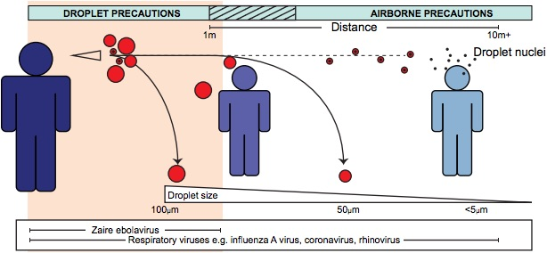
Figure 1. Simple Sketch of Droplet & Airborne Virus and Bacterial Transmission
Credit: Ian M. Mackay PHD
Important Information
Droplet vs. Airborne
Droplet spread and airborne transmission are different in a very important way:
Droplet spread organisms can only contaminate nearby air while airborne organisms can contaminate over a much wider area. (Figure 1)
Research Laboratories
The Stanford University ATD ECP, in conjunction with this Stanford University Biosafety Manual, serves as the basic ATD Biosafety Plan for Laboratories.
The ATD requires laboratories to adopt standard biosafety practices to protect laboratory workers when handling materials containing pathogens that may be spread through aerosols and which can cause serious disease. The Stanford University Institutional Biosafety Committee includes, as part of its charge and following the Biosafety in Microbiological and Biomedical Laboratories (BMBL) (https://www.dir.ca.gov/title8/5199.html), oversight of issues covered within the California OSHA Aerosol Transmissible Disease (ATD) standard. As such, approved IBC protocols may detail specific requirements that must be followed in addition to the ATD ECP.
PIs and researchers should review the ATD ECP and their IBC protocol annually or when changes are made (new personnel, agents, SOPs, etc.). New personnel should be trained by the PI or their designee on both documents. All personnel covered by the ATD ECP must take EHS-1090 Aerosol Transmissible Diseases training annual.
Stanford Referring Employers: Stanford University Occupational Health Center, Department of Public Safety, and Land, Buildings and Real Estate
The Stanford ATD ECP covers “referring employers”–the Stanford University Occupational Health Center (SUOHC), Department of Public Safety (DPS), and Land, Buildings and Real Estate (LBRE) and serves as the Biosafety Plan for these units. It addresses how to eliminate or minimize exposure to materials containing pathogens that may be spread through aerosols and which can cause serious disease and addresses health and safety issues specific to the jobs and procedures being used by personnel.
An ATD Administrator is designated by each of these units and is responsible for the establishment, implementation, and maintenance of written procedures to control ATDs. The Stanford ATD ECP includes the role designated as ATD Administrator and contact information for this role.
Note on Laboratory Operations: Laboratory operations that involve samples, cultures, or other materials potentially containing zoonotic ATPs only need to comply with the overall ATD ECP unless they meet any of the three conditions outlined below.
Note on Vertebrate Animal Research Facilities: Vertebrate animal research facilities only need to perform and document a risk assessment and adopt control measures consistent with the CDC’s Biosafety in Microbiological and Biomedical Laboratories and comply with the overall ATD ECP, including required recordkeeping for zoonotic operations, unless they meet any of the three conditions outlined below.
Work requiring additional oversight include:
Work operations that involve:
Capturing or sampling of wildlife for the purpose of determining whether they are infected with zoonotic ATPs, or
Collecting and disposing of wildlife for which an alert regarding the potential of zoonotic ATP infection has been issued by the CDC, CDFA, CDFG, CDPH, USDA, or USDOI, and the alert is applicable to the employer’s operations based on conditions specified in the alert, e.g., the geographic area and the species or type of animal.
Work operations that involve establishments or operations for which the USDA or CDFA have issued a quarantine order, movement restriction, or other infection control order due to an increased risk of zoonotic ATP infection.
Work operations that involve:
Handling, culling, transporting, killing, eradicating, or disposing of animals infected with zoonotic ATPs as defined in subsection (a)(4), or
Cleaning or disinfecting areas used, or previously used, to contain such animals or their wastes.
Important Information
If you perform work that you believe meets these work operations AND meets the definitions with the ATD ECP for the relevant terms (e.g., zoonotic ATPs, etc.), contact the Biosafety Officer at biosafety-officer@lists.stanford.edu prior to beginning any work.
A Biosafety Plan specific to the work will be needed, and additional oversight and approvals, such as from the IBC or other research compliance offices, may also be required.
Be adequately trained in good microbiological techniques
Provide laboratory research staff with protocols describing potential biohazards and necessary precautions
Instruct and train laboratory staff in: (i) the practices and techniques required to ensure safety, and (ii) the procedures for dealing with accidents
Inform the laboratory staff of the reasons and provisions for any precautionary medical practices advised or requested (e.g. vaccinations or serum collection)
Supervise laboratory staff to ensure that the required safety practices and techniques are employed
Correct work errors and conditions that may result in the release of recombinant DNA or synthetic nucleic acid (sNA) materials
Ensure integrity of physical and biological containment
Comply with permit and shipping requirements for recombinant or synthetic nucleic acid molecules
Adhere to APB-approved emergency plans for handling accidental spills and personnel contamination
Required Training for Laboratory Workers
These courses are designed to ensure compliance with applicable external regulatory requirements.
Course Title & STARS Number
Must Be Taken By All Who
Notes on Taking the Course
General Safety, Injury Prevention (IIPP) and Emergency Preparedness
EHS-4200-WEB
…work with human and/or non-human primate blood, blood products, cells (including tissue culture) or other potentially infectious material
BBP training must be taken annually. Register and launch through https://axess.stanford.edu
Everyone who must take BBP must also create and/or update an Exposure Control Plan annually.
Radiation Safety Training
EHS-5250-WEB
…have never worked with radioactive materials before (also take EHS-5251 Hands-on Training)
This is not a complete list of safety training courses that you may be required to take
Please reach out to EH&S Research Safety for help identifying the safety training that is required for your type of work.
Figure 2. Stanford training courses for laboratory workers.
6.3Tier III Training
Tier III trainingis conducted by the PI or laboratory supervisor. This includes review of the BBP and ATD ECP (if appropriate, see above) and training suitable for each individual. In a laboratory environment, the type of experiments being conducted, nature of the material used, and the equipment used would determine the required types of training. Written documentation of Tier III training must be recorded and retained by the PI.
If required, training and certification for shipping of dangerous biological materials and/or dry ice must be completed. Additional information on this is found in Chapter 10.
6.4Biosafety Information Sessions by Request
The Biosafety group offers a number of live and on demand Information Sessions to better suit your particular needs and that of your lab / facility (Figure 3); these can be done at a lab group meeting or any- get together, for one lab or a combination. We offer a number of sessions including but not limited to:
How to work in a Biosafety Cabinet
How to put on/take off PPE
Safety Sharps Demonstrations
Animal Biosafety issues
Incident Reporting
Decon/Disposal of Biowaste
Spill Response
…or we can be available to discuss safety topics at a lab group meeting.
6.5Emergency Lab Resources for Labs Working with Biological Materials
Emergency situations require prompt reaction and thoughtful use of available resources. While we can’t prepare for every possible emergency, it is beneficial to discuss what resources are available and what we should be thinking about before and after an emergency.
Medical Emergencies:
When working with biological material, consider what information would be helpful to those assisting the injured. Be sure to discuss possible exposure to human pathogens or other potentially infectious materials.
Call 911 or 9-911
If you can’t call, then delegate task to the nearest individual.
Where is the nearest AED?
Do you know how to use an AED?
Where are your labs first aid supplies?
Have the stocks recently been checked?
Power Failure
Consider where your biological materials are stored and what equipment contains such materials.
Are your freezers on backup power?
How long will the backup power last?
If not, where will you get enough dry ice to save your -80C freezers?
Post sign and remind everyone to not open the freezer doors.
Do you have trays available to catch the water leaking from the defrosting freezers?
It’s always good practice to keep your freezers free from ice buildup
Are your incubators on backup power?
Earthquake
Shaking may cause containment to be compromised. Flasks, culture plates, or other items containing biological material may break when dropped.
Could your research material create aerosols if dropped?
Wait at least 30 minutes before re-entering the lab.
Your research material may have spilled on the floor
Where are your spill clean-up materials?
Flood
You cannot “see” what biological material may be present in flood water. Do not step into water since hazards are unknown. Plan for the following situations:
Do not wade into water where there is electrical equipment.
Do you have research animals in the lab?
Have flood waters reached research material?
Is the power still on?
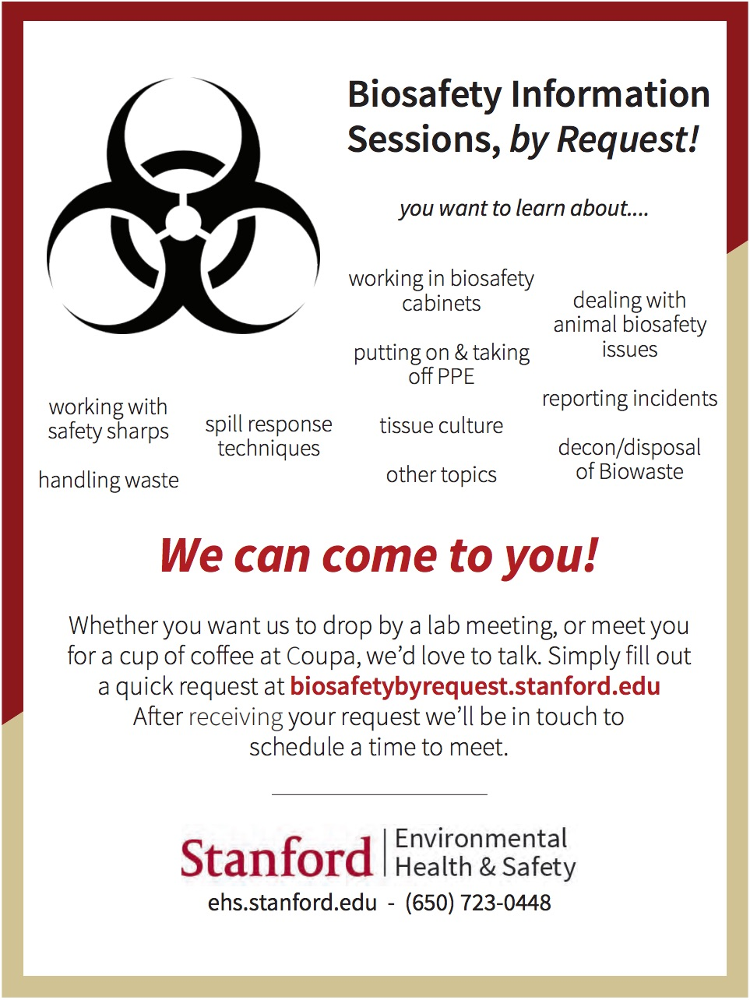
Figure 3. Biosafety Information Sessions by Request Flyer
7Medical Surveillance, Considerations and Advising
7.1Surveillance
Medical surveillance examinations may be required for researchers who work directly with biohazardous agents. Depending on the agent, the strain, and
the work being done, such surveillance testing may be required annually or biannually, with the optimal protocols determined in consultation between the APB, Biosafety, and Stanford University Occupational Health Center (SUOHC).
Animal handlers or Veterinary Service Center (VSC) staff who must tend to animals inoculated with etiologic or zoonotic agents may be recommended (or required) to participate in medical surveillance programs prior to performing these at-risk tasks. This includes those who work with purposefully- inoculated animals, as well as those that work with animals that may be infected with zoonotic agents not related to the research, such as sheep whose body fluid may contain Coxiella burnetii, the causative agent for Q-fever. The Department of Comparative Medicine will work with Biosafety and the SUOHC to identify animal handlers who may be at risk for occupational exposure to infectious microorganisms in the course of their duties.
Procedures for undergoing medical evaluation:
Each University School/Department shall administer the Medical Surveillance program for its employees and ensure programmatic compliance for those employees identified as potentially at risk for occupational exposure to biological agents. The SUOHC staff can assist the supervisor in determining if a medical examination is appropriate.
The Department/School will schedule a medical appointment with:
Stanford University Occupational Health Clinic
Environmental Safety Facility (ESF)
484 Oak Road, Second Floor
Stanford, CA 94305-8007
Phone: (650) 725-5308 https://suohc.stanford.edu
Upon completion of the medical examination, the participant will be notified by the SUOHC of pertinent test results, with appropriate referrals made in the event of abnormal findings. The Occupational Health clinic will provide medical clearance as indicated to the requesting department.
If there is a restriction indicated on the medical clearance that significantly limits an individual’s ability to complete their job, then the supervisor shall notify the Biosafety Officer to discuss a remedial course of action.
Medical records, including clearance paperwork, will be kept at the Occupational Health Clinic for the duration of the individual’s participation in the Medical Surveillance Program at Stanford University.
7.2Occupational Health Center
The occupational health center provides on-site services for Stanford University faculty and staff for work related:
injuries
illnesses
medical surveillance
immunizations
Environmental Safety Facility (ESF)
484 Oak Road, Second Floor
Stanford, CA 94305-8007
(650) 725-5308
Monday – Friday 8:00 am – 4:00 pm
On-Site Services Provided
Medical Surveillance & Immunizations
Medical surveillance is the process of evaluating workers’ health as it relates to their potential occupational exposures to hazardous agents.
Medical surveillance, including:
Tuberculosis screening
Vision exams for laser users
Respirator use clearances
Hearing tests
Focused physical exams
Urinalysis
Blood tests
Immunizations:
Hepatitis A
Hepatitis B
Varivax (chicken pox)
MMR (Measles, Mumps, Rubella)
Tetanus boosters
Others as required by potential work exposures
Employee Work-related Injury & Illness Care
Initial and on-going care is provided.
Services include:
First aid
Evaluation and management of work-related injuries/illnesses which may include:
For immediate life-threatening emergencies, call 9-911 from a campus phone (or 211 in Medical Center) and/or go to:
Stanford Hospital Emergency Department
1199 Welch Road
Stanford, CA 94304
(650) 723-5111
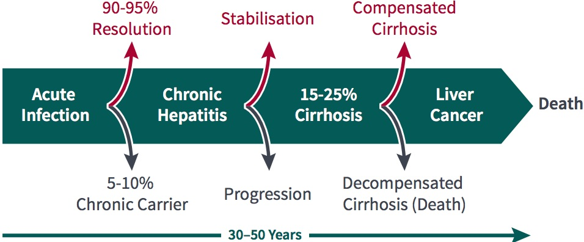
Figure 1. Natural History of Chronic HBV Infection
Potential Outcome of Untreated Hepatitis B Infection (Adapted from Feitelson, Lab Invest 1994)
7.3Hepatitis B Vaccination Program
Important Information
Hep B Vaccination
University employees with potential for any exposure to human or non-human primate blood, body fluids or any other substances covered by the Bloodborne Pathogens program (see Chapter 6) as a part of their work at Stanford University will be offered the Hepatitis B vaccine at no cost to the employee.
Hepatitis B is a serious disease that affects the liver and is caused by the hepatitis B virus. Hepatitis B can cause mild illness lasting a few weeks, or it can lead to a serious, lifelong illness. Hepatitis B virus infection be either acute or chronic. Acute hepatitis B virus infection is a short-term illness that occurs within the first 6 months after someone is exposed to the hepatitis B virus. This can lead to fever, fatigue, loss of appetite, nausea and/or vomiting, jaundice (yellow skin or eyes, dark urine, clay-colored bowel movements), or pain in muscles, joints and stomach. Chronic hepatitis B virus infection is a long-term illness that occurs when the hepatitis B virus remains in a person’s body. Most people who go on to develop chronic hepatitis B do not have symptoms, but it is still very serious and can lead to liver damage (cirrhosis), liver cancer, or death. Chronically-infected people can spread hepatitis B virus to others, even if they do not feel or look sick themselves. (Figure 1)
Hepatitis B is spread when blood, semen, or other body fluid infected with the Hepatitis B virus enters the body of a person who is not infected. People can become infected with the virus through: birth (a baby whose mother is infected can be infected at or after birth), sharing items such as razors or toothbrushes with an infected person, contact with the blood or open sores of an infected person, sex with an infected partner, sharing needles, syringes, or other drug-injection equipment, or exposure to blood from needle sticks or other sharp instruments. Occupational exposure can occur through a puncture or cut with a contaminated sharp object, blood or OPIM contact with broken skin, or blood or OPIM splash to the mucous membranes (eyes, nose, mouth).
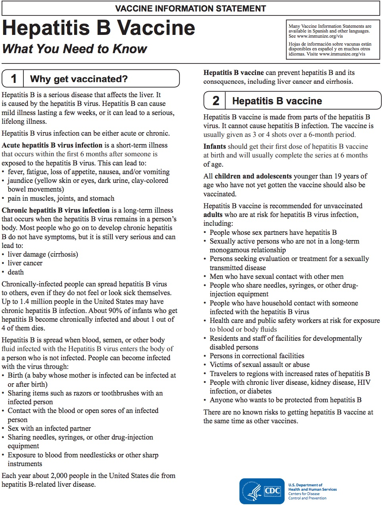
Figure 2. Hep B Vaccine Information
Hepatitis B vaccination can prevent hepatitis B and its consequences, including liver cancer and cirrhosis. Although Hepatitis B vaccine is made
from parts of the hepatitis B virus, it cannot cause hepatitis B infection. The vaccine is usually given as 3 or 4 shots over a 6-month period (Figure 2).
While Stanford University encourages employees to be vaccinated, accepting vaccination is not a condition of employment. Employees and students (including post-doctoral fellows, graduate students, and medical students) that are offered the vaccine are required to sign a declaration form indicating they have been given the opportunity to receive the vaccination. This vaccine declaration form is available by request from the SUOHC and should be returned to the SUOHC once completed.
Hepatitis B Declaration Form
All individuals with potential for exposure to bloodborne pathogens should submit a hepatitis B declaration form. To submit a form please go to the SUOHC website and follow these instructions:
Use the blue “Health Portal and Flu Consent” button in the top right corner.
From the left menu, select “Hepatitis B Vaccination”.
Fill out the declaration form and submit.
For additional information regarding the Hepatitis B vaccine and occupational exposure to the virus, please visit the EH&S Website page (https://stanford.io/2B24PEn) or contact the SUOHC by calling 650-725-5308.
7.4Vaccinations
Vaccinations are available for some etiologic agents used in the laboratory. The Stanford University Occupation Health Center medical staff, in conjunction with the Administrative Panel on Biosafety and the Biosafety Officer, will make the recommendation for the use of vaccinations on a case-by-case basis. Risk assessment and vaccine recommendations are done based on agent, strain, work performed, transmission routes, potential hazards of procedures, health of the individual and other concerns. For example, work with live wild- type rabies virus or work with bats is likely to result in a recommendation to receive the rabies vaccine; work with the viral vector mutant rabies virus does not lead to a recommendation to receive the vaccine. As with Hepatitis B, when a vaccine recommendation is made, researchers or employees are required to fill out and sign a vaccine declaration form but are not required to receive the vaccine as a condition of employment. Vaccine recommendation assessments are performed for those working directly with the agents; those working in proximity but not directly with agents may not be eligible for the vaccine through SUOHC and should contact their primary care physician.
Important Information
Common agents for which a vaccine may be recommended
Hepatitis A virus
Hepatitis B virus
Influenza virus
Vaccinia virus
Poliovirus
Rabies virus
Salmonella typhi
Clostridium tetani (tetanus)
Varicella-Zoster virus
Measles-Mumps-Rubella (MMR)
Yellow-fever virus
7.5Laboratory Animal Occupational Health Program (LAOHP)
Enrollment in the LAOHP is available to all faculty, staff, students and visiting scholars who work directly with vertebrate animals, unfixed animal tissues or body fluids, and those who work in animal housing areas. This program is authorized by federal regulations and Stanford’s external accrediting agency. The primary goals of the LAOHP are to:
Protect individuals from work-related risks associated with exposure to animals through a program of species-specific health information, education, and risk-based medical evaluation,
Protect the health of research animals from certain transmissible diseases,
Be pertinent to the species with which individuals are exposed and the work they perform,
Be minimally intrusive, and
Be cost-effective
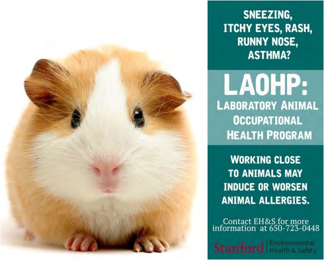
Figure 3. LAOHP: Labratory Animal Occupational Health Program
Working close to animals may induce or worsen animal allergies.
University policy requires that all faculty, staff, students, and visiting scholars who work directly with vertebrate animals, unfixed animal tissues
or body fluids, and those who work in animal housing areas be informed of the risks and the LAOHP, but the level of participation is based on risk categorization. APLAC determines the risk category for research and teaching individuals during protocol review process; this sometimes is done in conjunction with recommendations from SUOHC or Biosafety. Continuing authorization to use animals is contingent upon the potential requirements to participate in the program. For information on how to enroll, please see the LAOHP page (https://bit.ly/2CNFrj4) on the Environmental Health & Safety (EH&S) web site.
Risk Category 1
The Stanford Risk Category 1 (RC1) group classification consists of personnel whose procedural, protocol, or job function risk analysis has indicated the need for enhanced medical review or in-person evaluation in the Occupational Health Center. This group is considered higher risk and includes, but is not limited to, Veterinary Service Center (VSC) personnel, Animal Care staff, and researchers requiring serological testing for non- human primate (tuberculosis/rubeola) or ungulate (coxiella) surveillance (Table 1). Researchers working with other hoofed mammals (e.g., swine, goats, cows), wild rodents, and field studies may also be required to enroll. The specific risk factors are variable and dependent upon specific uses and handling identified in the animal care and use protocol application. All individuals in RC1 groups are required to complete and submit the LAOHP Health Questionnaire prior to the APLAC approval of an individual to work on a related protocol or assignment. Each questionnaire will be evaluated by a SUOHC clinician to determine the level of potential exposure and whether further steps are necessary. Specific medical surveillance can also be requested by EH&S and/or the SUOHC for any individual, based upon identified risk factors.
Table 1. Animals in Risk Category 1 v Risk Category 2
Risk Category 1
Risk Category 2
Non-Human Primates
Dogs
Sheep (Female/Neonatal)
Rabbits
Pigs
Rodents (Domestic/Captive)
Goats
Sheep (Male)
Bats
Marine Mammals
Birds
Fish/Amphibians/Reptiles
Wild Animals Or Animal Field Studies
Risk Category 2
Risk Category 2 (RC2) is for all individuals involved in animal care and use protocols that do not fall within the RC1 participation group. All individuals in the RC2 group are provided with information, educational materials and periodic updates on potential health and safety issues associated with the particular animal species or research material with which they work, including animal allergies. These individuals are strongly encouraged to complete and submit the LAOHP Health Questionnaire, but this questionnaire is optional for members of the RC2 participation group.
Allergies to Laboratory Animals (ALA)
In the United States, an estimated 40 to 50 million people currently suffer from allergies. Hypersensitivity to household pets is a common problem in the population as a whole, and in the research setting, allergies to laboratory animals (ALA) can become a serious concern. Among those whose education or occupation requires significant exposure to lab animals, ALA affects approximately one in five people. Rats and rabbits are the most frequently implicated species, but mouse allergies are becoming more apparent, especially as the numbers of mice utilized increases and the research projects using them require
more direct handling. Cat and dog allergies may also be occupational if a research project includes those species, and it is possible to develop allergic reactions to most other species, including hamsters and ferrets, after chronic exposure.
Although it is true that people with very limited contact develop fewer problems, studies have shown that the problem of ALA can be just as severe in those handling animals for scientific purposes (research staff) as it is in those responsible for their primary care (caretaking staff). A history of previous allergies (i.e. atopy) is not a guarantee that animal- related problems will develop, but some studies have found a correlation between pre-existing atopy and ALA. The symptoms are generally evident six to 24 months after exposure but sometimes may take years to develop, and often worsen over time. Mild symptoms of ALA involve the eyes and nose (e.g. sneezing, runny nose, watery eyes) and/or the skin (itchy welts or rashes) (Figure 3). Non-ALA allergies such as hay fever or an associated occupational allergy like latex hypersensitivity may cause ALA symptoms to worsen. These minor problems typically will not go away if the exposure to animal allergens does not change, and can ultimately progress to the most serious manifestation of ALA, which is animal-related asthma. Asthma is a serious, potentially debilitating problem, and it will predictably affect a percentage of workers who ignore the earlier symptoms of rhinitis or conjunctivitis (runny eyes and nose). Asthma is estimated to affect two percent of all people using animals during their first year of exposure, and an additional two percent per year thereafter.
ALA can have serious consequences for affected personnel, not just in terms of personal health, but in determining future career options as well. Studies have shown that about 50% of those with symptoms will eventually stop working with animals because of the discomfort involved with ALA. Many of those people can change career tracks or be reassigned to non-animal duties within the same institution, but as many as 15% of affected workers will eventually quit their jobs because of ALA. Manifestations of asthma may not completely subside until six or more months after ending contact with animals. It was previously thought that dog and cat allergies were provoked by dander or fur, but it is now known that the actual allergens are proteins in the saliva, which are present on the animals’ skin and hair. In the case of ALA involving rodents, the major allergens are low-molecular weight proteins excreted in the urine, which adhere to skin and hair. They can also be found in soiled bedding, and may be distributed as airborne contamination in rooms where animals are housed or manipulated.
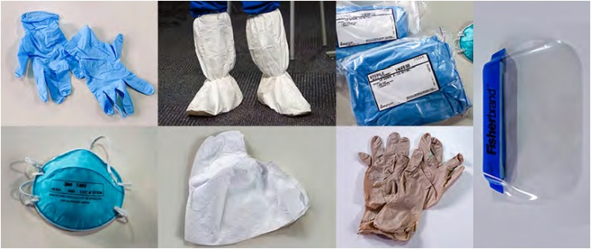
Figure 4. Various PPE may be needed for working with animals
There are three general approaches to allergy treatment:
avoiding the allergen through environmental control
medication to relieve symptoms
immunologic desensitization (allergy shots)
Medications can provide relief, but the following should be kept in mind:
Although there are over-the-counter drugs which can give temporary symptomatic relief, it is best to seek the advice of a physician before self-prescribing. Drugs can mask the warning signs of developing asthma and may also cause drowsiness.
If you use an antihistamine, take the drug prior to exposure for best results.
Other types of anti-allergy drugs that do not induce drowsiness are now available by prescription, if necessary. Standard allergy shots (immuno-therapy) to reduce allergic sensitivity to cats and dogs have improved in recent years, and may be a good choice for some people.
Allergen avoidance is the only complete solution to ALA. If avoidance is impossible, it’s critical that exposure is minimized as much as possible. Many people with ALA are able to continue working with animals by taking some simple precautions, such as the following:
Wear personal protective equipment, including a tight-fitting mask, gloves, and a long-sleeved lab coat (or other dedicated uniform) at all times when working with animals. In some cases, a respirator or a filtered air-supplied face mask may be warranted (Figure 4).
Take advantage of filter-topped caging (if available in the facility) to contain allergens when animals are transported or held. An understanding of the proper use of ventilated workstations will help minimize aerosol exposure when cages are opened.
Avoid unnecessary exposure to irritants such as dust, tobacco smoke, and air pollution, since irritant chemicals can worsen airborne allergy symptoms.
If you are experiencing symptoms of ALA, specialized medical professionals are available to help evaluate and treat your problems.
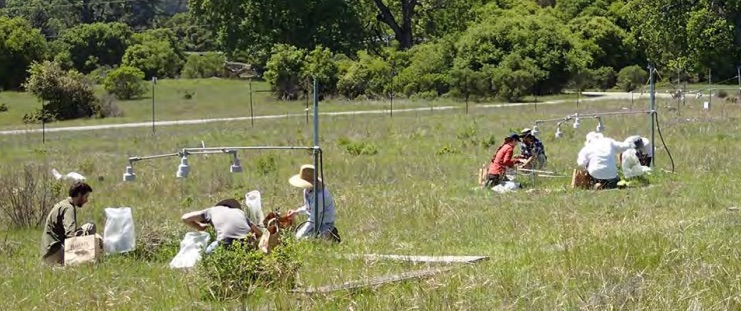
Figure 5. Field Work
Procedures to minimize allergen contact (such as those listed above) should be followed by all exposed persons, even if ALA symptoms are not present, as these may prevent the development of clinical signs. At the very least, following these procedures may greatly slow the progression of ALA. Current federal guidelines require that all personnel beginning to work with animals be given information regarding ALA and the precautions that should be taken. ALA should be treated like any other occupational health hazard and personnel should notify their supervisors or SUOHC of known or potential work-related allergies. Clear procedures should be established in each facility for reporting all allergic reactions in the same way that accidents, bites, and scratches are reported.
Enrollment in LAOHP allows SUOHC physicians to help workers track allergy status and provide advice for minimizing or treating allergies. Although enrollment for RC2 is not required, it is highly recommended for all personnel who work with or in proximity to animals on an intermittent or regular basis.
7.6Field Work and Travel
Travel medicine related to field work or work-related travel, within the United States and abroad, is covered by the SUOHC. Biosafety is often consulted for help with risk assessments. Any student or staff doing work off Stanford campus or farther afield should make an appointment with the SUOHC to discuss their work, any travel risks, and travel-related medicine, as well as how personnel health history might affect travel recommendations. This also includes any incidents, accidents or exposures that happen during travel. Personnel should seek appropriate medical attention as necessary during travel, and consult with SUOHC upon their return to campus. Travel registration with the Office of International Affairs (https://international.stanford.edu/) is also highly recommended to aid with any medical or travel issues.
Risk considerations for travel and field work include what work is done and where (e.g., location and duration of stay or work), physical setting (e.g., terrain and proximity to water), the work being done (e.g., involvement of animals, chemicals, potential for dermal or respiratory hazards, etc.), access to engineering controls, and risks not specific to the work but specific to the location. These risks can include animals in the area, endemic infectious agents, political or local concerns, natural disaster potential, etc. Personnel engaging in travel and field work are advised to be aware of their surroundings, availability of local health care, and any specific issues or hazards associated with the work or area.
Field work also presents some unique considerations for work in general, including exotic zoonotic concerns and importation of samples or animals into the United States or California. Specific quarantine measures may need to be implemented for any wild animals brought to vivarium or other housing locations on campus (contact the VSC for specifics well in advance of bringing animals to campus), and permits may be required if animals are from outside the state or country. Additionally, samples may also need permits for importation, even if live animals are not present. Contact Biosafety for further information regarding the specific requirements for your particular work.
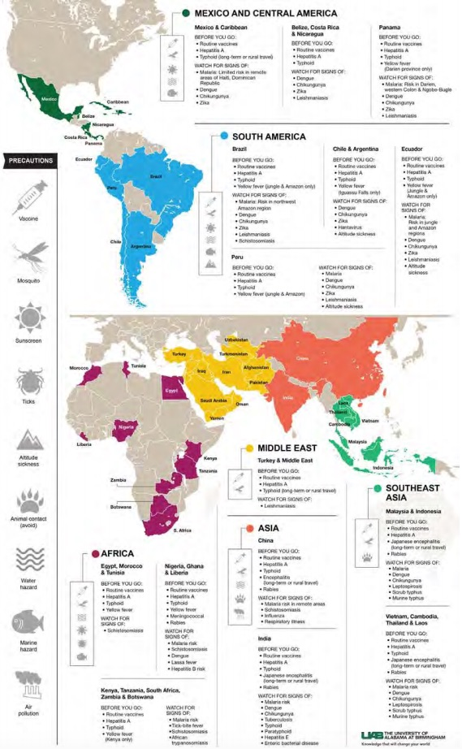
Figure 6. Examples of Potential Travel Related Medical Considerations
Specific medical recommendations to be determined post consultation.
7.7Special Cases
Special work circumstances may dictate the need for extra surveillance or medical clearance by the SUOHC. Circumstances can include the species
of animal being worked with (e.g., RC1, non-human primates, sheep, birds, wild animals), the agent being worked with (e.g., Mycobacterium tuberculosis), or the level at which the work is conducted (e.g., BSL3). Certain health circumstances may also result in the need for consultation with the OHC prior to work. If you have questions or concerns about the nature of your work, please consult Biosafety by calling 725-1473. For health concerns, please call the Occupational Health Center at 725- 5308.
PPE
A risk assessment of work or agents planned may dictate the need for specific PPE. One typical example of this is the need to wear an N95 respirator. In order to wear an N95 respirator, personnel must complete annual medical clearance and fit testing for enrollment in the N95 program. Examples of work requiring an N95 respirator or other PPE for respiratory protection may include work wih BSL3 aerosol-transmissible agents, work with BSL2 aerosol-transmissible agents that cannot be done within a Biosafety Cabinet, field work that generates dust or debris potentially containing dried feces or urine, or a need for increased protection from allergens during animal work. Other examples of specific PPE may include sleeve covers, Tyvek suits, disposable gowns, disposable hair nets or shoe coverings (figure 4). See Chapter 9 for additional information on PPE.
Pregnancy Planning
Some infectious agents pose a particular reproductive risk around or during pregnancy. Any lab working with an agent that poses a reproductive risk must post signage indicating the agent is present and who can be contacted with questions or concerns. Some agents pose a risk if contracted during pregnancy; others, like Zika Virus, pose a risk if contracted during pregnancy but can also pose a risk if a partner was exposed prior to pregnancy and transmits the agent during the course of pregnancy.
The APB protocol approval process involves a discussion of the potential hazards and risks associated with the agents listed, including any reproductive concerns. It is also the responsibility of the supervisor to provide Tier III training that includes a list of potentially harmful items used, how to control exposure through, work practices and use of PPE, and ensuring compliance with a physician’s instructions regarding workplace restrictions.
Important Information
Reproductive Health
EH&S offers the Reproductive and Developmental Health Protection Program to help advise employees and students.
The goals of this program are to protect the reproductive health of male and female employees and students from occupational exposures to substances (chemical, biological, radiological or physical) known or suspected of being capable of posing a hazard to human reproduction, and to identify potential reproductive hazards and implement appropriate control measures. Participation in this program is confidential, and can be initiated by completing the reproductive health hazard questionnaire, found online in the Stanford Reproductive and Developmental Health Protection Program website (https://bit.ly/2CNZtKj).
Incident or Exposures and Baseline Testing
Important Information
3 Basic Steps To Incident/Exposure
15 minutes soap and water wash or eye wash
Visit the SUOHC
Fill out SU17
Following an incident or exposure involving a biological (infectious agent, rDNA, potential BBP material), personnel should go to the Stanford University Occupational Health Center for advising and medical consultation, unless the nature of the incident dictates that a visit to the Stanford Emergency Department is more appropriate.
Outside SUOHC working hours (M-F, 8am-4pm), personnel can also visit the Stanford ED if they deem medical attention necessary; an alternative is also to visit the SUOHC during the next open hours. SUOHC will consult with Biosafety for risk assessments based on any potential exposure involving biologicals.
While SUOHC does not bank serum for testing purposes, they may recommend baseline testing immediate following a potential exposure, followed by review at a later appropriate time.
Visiting the SUOHC soon after a potential incident or exposure can be critical to the timeliness of medical recommendations and implementation of testing. SUOHC can be contacted by calling (650) 725-5308.
Work with animals and biohazards presents unique hazards, such as generation of aerosols, bites and scratches, and shedding of agents, all of which is considered during the risk assessment for animal work involving biohazards or rDNA. The safety precautions necessary to work with infectious agents or rDNA in animals is classified as Animal Biosafety. There are four Animal Biosafety levels (ABSL) that are available to categorize the use of experimentally infected animals housed in research facilities, animals administered rDNA, or maintenance of laboratory animals that may naturally harbor zoonotic infectious agents. In general, the biosafety level recommended for working with infectious agents in vivo is the same as that for working with the agents in vitro. Animal biosafety level is determined by the APB based on risk assessment; if the work has an Animal Biosecurity component (see below), the Veterinary Service Center (VSC) may determine that the ABSL is equal to or greater than that designated by the APB.
Animal Biosecurity
Animal Biosecurity is a set of preventative measures designed to reduce the risk of transmission of infectious agents among animals or between animals and humans. It is a designation determined by the Veterinary Service Center and supported by Biosafety. This designation includes agents that may not be an infectious risk to humans but are animal pathogens, as well as zoonotic agents that have the potential to spread among both animals and humans. Evaluation includes work practices, PPE, safety equipment, risk assessments and a housing requirement designed to reduce the risk of transmission within an animal colony.
8.2Levels
Animal biosafety levels, similar to biosafety levels, provide increasing protection to personnel and the environment. These levels are the general minimum requirement for work with exposed laboratory animals.
Important Information
ABSL Examples
ABSL1/1+: AAV
ABSL2: Hepatitis C, Salmonella
ABSL3: Yellow Fever virus, MTb
ABSL4: Ebola
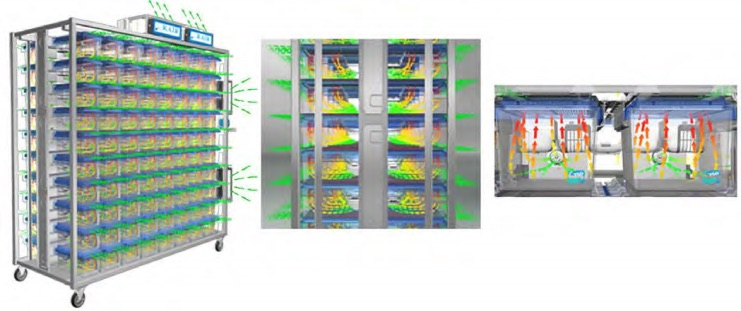
Figure 1. Microfiltration Cages and Rack
ABSL1 and ABSL1+
ABSL1 is appropriate for work with animals involving well-characterized agents that are not known to cause disease in immunocompetent adult humans and which present a minimum hazard to personnel and the environment. At Stanford, an additional ABSL1 designation exists: ABSL1+ is used to indicate animals that have been administered certain viral vectors or rDNA but are not considered biohazardous. For some viral vector work, animals must be housed at ABSL2 for a minimum shedding period and undergo a cage change performed by the responsible research staff prior to moving to ABSL1+. For other viral vector work, animals can be housed at ABSL1+ immediately following inoculation or administration of rDNA. See the Animal Housing section below for specifics on viral vectors and housing. Upon approval by the APB and VSC, ABSL1+ animals can be housed in standard ABSL1 animal housing facilities, but cages must remain marked with special cards as designated by the VSC. VSC staff can perform husbandry of these animals after the first cage change.
ABSL2
ABSL2 is suitable for work involving laboratory animals infected with agents associated with human disease and which pose moderate hazards to personnel and the environment. ABSL2 also includes work involving some viral vectors and rDNA use, as well as the maintenance of laboratory animals that may naturally harbor zoonotic infectious agents. It builds upon the practices, procedures, containment equipment and facility requirements of ABSL1. Work at ABSL2 requires a protocol that has been approved by both the APB and APLAC prior to the initiation of any work.
ABSL3
ABSL3 is appropriate for work with laboratory animals infected with indigenous or exotic agents, agents that present a potential for aerosol transmission, and agents causing serious or potentially lethal disease. ABSL3 requirements build upon the foundation of lower-level practices, procedures, containment equipment and facility requirements of ABSL2. Work at ABSL3 requires a protocol that has been approved by both the APB and APLAC prior to the initiation of any work. Additional procedural and housing ABSL3 facilities are being added to the VSC, with projected facility opening set for 2024.
ABSL4
ABSL4 is required for work with animals infected with dangerous and exotic agents that pose a high individual risk of aerosol-transmitted laboratory infections and life-threatening disease that is frequently fatal and for which there are no vaccines or treatments, or a related agent with unknown risk of transmission. Currently, ABSL4 work is not allowed at Stanford University.
8.3Animal Housing
Animal housing is done at the appropriate animal biosafety level. The VSC has designated spaces for ABSL1/ABSL1+, ABSL2 and ABSL3 housing, many of which use filtered racks (Figure 1). All animals inoculated with infectious agents or administered rDNA must be housed at the appropriate level. This level is determined by the risk assessment, as well as input from Biosafety, the VSC and APLAC. At Stanford, the majority of animals inoculated with agents that are infectious to humans or to other animals are housed at ABSL2. Animals administered viral vectors or rDNA may be housed at ABSL1+ or ABSL2, depending on risk assessment. Factors considered in the risk assessment of viral vector work include the type of rDNA or viral vector, if human cells are present, and the length of time since cells were transduced, as well as the transgene/ insert or envelope present. See Table 1 for specific scenarios involve viral vectors and when housing at ABSL1+ or ABSL2 is allowed. All other animals inoculated with viral vectors or infectious agents must remain housed at ABSL2 (or appropriate level) for the duration of their life, unless approved by the APB.
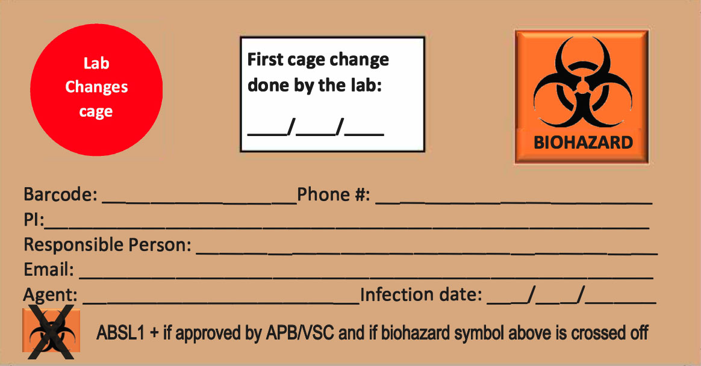
Figure 2. ABSL-2 or 3 Cage Label Card
Table 1. Animal housing requirements for Biosafety and Biosecurity
ABSL work practices build on BSL work practices (see Table 2 in Chapter 3) but incorporate specific animal-related items. All BSL1, 2 or 3 work practices, including but not limited to those addressing decontamination, BSC use, physical containment, handwashing and pipetting, must be followed for the equivalent ABSL. Table 2 summarizes additional animal biosafety work practices, based on the BMBL.
Designated ABSL2 housing and procedure spaces exist within the VSC facilities. VSC-designated PPE must be worn in all ABSL2 facilities. PPE is provided by the VSC for animal housing locations within the VSC (Figure 3), and signs indicating the required PPE are posted in all ABSL2 spaces. If different PPE practices are employed from those posted, the PPE must be discussed and outlined in the associated APB protocol and with the VSC. For animal work that is done in laboratory spaces, BSL2 and ABSL2 work practices must be followed, and the PPE designated in the associated APB must be worn. If animal work is done outside the VSC, transport of ABSL2 animals must be done using appropriate containment measures, and carcasses and caging/bedding must be returned to the VSC for appropriate disposal. Training sessions (see below) regarding working with biohazards in animals address these PPE and transportation requirements.
Cages containing animals inoculated with infectious agents or administered viral vectors or rDNA must be labeled appropriately and labels remain with the animals for the duration of their life (Figure 2). Labeling cards are designed and approved by the VSC, and should indicate at a minimum the agent, date of inoculation, and date of cage change by lab personnel (thereby allowing VSC staff to resume cage changes if appropriate). The VSC labeling scheme allows for cages to be marked as no longer biohazardous and moved to ABSL1+, but the labeling remains to indicate that animals were once treated with viral vectors or rDNA. This labeling serves to inform any personnel working with the animals, including VSC caretakers, of the appropriate pathway for carcass disposal.
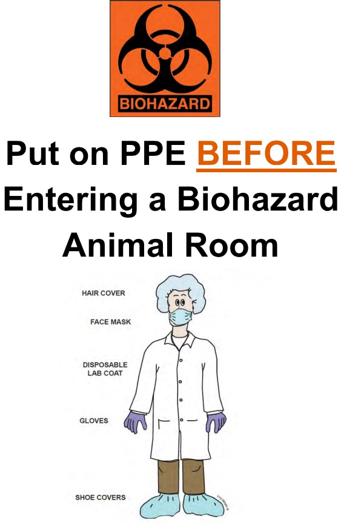
Figure 3. Example of PPE Signage Posted for Animal Husbandry Rooms
8.4Training
Personnel planning to work at ABSL2 must have specific training in animal facility procedures, the handling of infected animals and the manipulation of pathogenic agents, or be supervised by individuals with adequate knowledge of potential hazards, microbiological agents, animal manipulations and husbandry procedures. Personnel unfamiliar with animal work are discouraged from learning new techniques while working with biohazards in animals. The VSC offers rodent handling workshops to train personnel on basic technique, as well as workshops for specific techniques or consultations on various equipment or practices.
Work with biohazards in animals requires approval from both the APB and APLAC prior to the initiation of any work. In addition to any training requirements outlined in Chapter 6, work with rDNA or infectious agents requires that all personnel complete the course VSC-0004, Working Safely with Biohazardous Agents in Laboratory Animals. Registration for this course is found in STARS, and is required for anyone using biohazardous agents in laboratory animals at Stanford University. The course consists of two segments: a 20-minute web-based video, followed by a classroom session with personnel from the VSC and Biosafety. The classroom sessions are held every other week and can be scheduled by contacting the VSC. Additionally, personnel are required to complete a tour and orientation of the facility to which their animals are assigned. These are conducted by the managers of the facilities and scheduling is done through the VSC.
Use of some animal tissues requires an APLAC protocol due to occupational health concerns, even if the tissues are a by-product of another APLAC-approved studies, are obtained from a slaughterhouse, or are commercially available as standard “off-the-shelf” products. In general, this includes cells or tissues from non-human primates or other RC1 category animals, such as sheep. To determine if your use of tissue requires a protocol, please contact APLAC. If it is confirmed you will need a protocol, you can file a tissue-only protocol. Contact APLAC for protocol determination and requirements.
8.6Zoonoses
Zoonotic agents are those that can be transmitted between species; zoonoses that can be transmitted between humans and animals fall under the auspices of Animal Biosafety. Human exposure can occur through multiple routes, including bites, scratches, aerosol droplets, mucosal secretions, feces or urine. For animals inoculated with agents that are infectious but not necessarily to humans, there is the concern of transmission among a susceptible animal colony, and these agents fall under the auspices of Animal Biosecurity. While many laboratory animal species are bred to be free of zoonoses, there are zoonotic agents associated with laboratory animals, some of which can pose a risk to humans or other animals in the colonies (See Appendix D). Additionally, humanized animals (those administered or implanted with human tissues or cells) capable of supporting replication of human agents, animals with altered genotypes resulting in new or increased susceptibility to infectious agents, and animals with altered immune systems (such as severe combined immunodeficient, or SCID, mice) require specific risk assessments for zoonotic issues.
Table 2. Animal-specific work practices that are incorporated into research in addition to the basic BSL work practices outlined in Chapter 3.
Work Practices
ABSL1+
ABSL2
ABSL3
Access
Limited
Limited
Limited
Animal housing and equipment
Handled in a manner that minimizes contamination of other areas;
Cage changes occur in a BSC;
Method for decontamination is available
Handled in a manner that minimizes contamination of other areas;
Cage changes occur in a BSC; Method for decontamination is available inside the facility
Animal Support Staf
Receive training and annual updates; can perform cage changes for animals after the lab performs the first cage change
Receive training and annual updates; can perform cage changes for animals after the lab performs the first cage change for agents approved by Biosafety and the VSC
Receive training and annual updates; perform only welfare checks on animals unless otherwise approved by Biosafety and the VSC
BSC
Recommended for procedures with potential to create aerosols
Required for most procedures, particularly those with potential to create aerosols or for any utilizing aerosol transmissible pathogens
BSC or other containment devices required for all work where practical
Housing
Standard caging
Filter-top cages or actively ventilated-cages
Cages or housing system must incorporate aerosol protection
Medical Surveillance Program
LAOHP enrollment recommended/required based on animal species
LAOHP enrollment recommended/required based on animal species and agent used
LAOHP enrollment required based on animal species and agent used
PPE
Lab coat, gloves or other PPE as required by laboratory completion of the PPE Assessment Tool; Long pants and closed-toe shoes required
VSC-required PPE includes: disposable lab coat, disposable shoe covers, disposable head cover, gloves, surgical mask;
Additional PPE required at direction of VSC or Biosafety
Full-body disposable PPE (no exposure of street clothes); Respirator protection as determined by risk assessment
Sharps
Use of needles or syringes or other sharp instruments in the animal facility is limited to situations where there
is no alternative for such procedures
Use of needles or syringes or other sharp instruments in the animal facility is limited to situations where there
is no alternative for such procedures;
Animals should be manually or chemically restrained (anesthetized) during inoculation procedure, particularly those utilizing sharps
Use of needles or syringes or other sharp instruments in the animal facility is limited to situations where there
is no alternative for such procedures;
Animal restraint (manual or chemical) required during inoculations
Signage
Cages labeled with VSC- designated tag indicating responsible person, agent, inoculation date and first cage change; Labels are updated to reflect when animals are no longer considered biohazardous but have been exposed to rDNA
Cages labeled with VSC- designated tag indicating responsible person, agent, inoculation date and first cage change;
Lab must provide agent information to VSC so that door signs are updated appropriately
Cages labeled with VSC- designated tag indicating responsible person, agent, inoculation date and first cage change;
Lab must provide agent information to VSC so that door signs are updated appropriately
Waste
Transported in appropriate containers
Transported in appropriate containers;
Excess inoculum is returned to laboratory for proper disposal;
Decontamination by appropriate method is necessary for movement outside the designated housing area
Transported in appropriate containers;
Excess inoculum is returned to laboratory for proper disposal;
Decontamination by appropriate method is necessary for movement outside the designated housing area
Wild animals pose additional zoonotic risks, as their health history is unknown. Infectious agents or animals that pose a zoonotic threat are classified at the appropriate ABSL or Animal Biosecurity Level and are housed as such.
Most animals housed at ABSL1 are routinely tested for zoonotic agents of concern prior to arriving at Stanford and during any required quarantine period by the VSC. Sentinel animals in regular animal housing rooms are also routinely tested by the VSC, and if any zoonotic agents are identified, the VSC alerts EH&S to any potential associated risks. These tests are done to detect specific agents, and may not identify all possible zoonotic risks. It is therefore important that appropriate work practices and PPE as required by the VSC and Biosafety are followed. Sentinels and routine testing are not done in ABSL2 facilities, in PI-managed spaces, or with wild animals.
8.7Field Work
Figure 4. Field Work
Field work with or around animals often requires review by Biosafety. In addition to items outlined
in Chapter 7, field work with animals raises issues relating to PPE, zoonoses, procedures and practices are discussed during individual risk assessments conducted for each work scenario (Figure 4, field work). Discussion and considerations take into account what is being done and where, the physical setting, the use or proximity to animals and potential zoonotic or other hazards, access to engineering controls both in the field and in the lab, safety procedures in the field, awareness of surroundings, and issues specific to the region or work being conducted. Use and housing of any animals that are brought back to campus must adhere to VSC standards for quarantine, be reviewed for zoonotic risks, and may require permits depending on the species and import status.
9Safety: Practices and Equipment
9.1Universal Precautions
The concept of Universal Precautions is to treat all human/primate blood and other body fluids, tissues and cells as if they were known to be infectious for BBPs. Universal Precautions includes frequent handwashing, no mouth pipetting, no food or drink in the lab and proper disposal of biohazardous/medical waste, as well as the use of engineering controls and Personal Protective Equipment (PPE). Engineering controls include items such as biosafety cabinets, ventilation systems, closed top centrifuge rotors, etc.; these are the primary methods to control exposure. PPE such as gloves, lab coats, eye protection, face shields or others must be selected and used as appropriate. See Chapter 4 for additional information.
9.2Personal Protective Equipment
Personal protective equipment (PPE) is a necessary part of laboratory safety in addition to engineering controls (i.e., laboratory ventilation and Biosafety Cabinets) and good work practices. When properly selected and used, personal protective equipment can be effective in minimizing individual exposure (Figure 1).
Supervisors have the primary responsibility for implementing the PPE Program in their work area by ensuring that workplace hazards have been evaluated, that the appropriate PPE is available, and that employees have received the necessary training. Stanford University provides the Laboratory PPE Assessment Tool (https://ehs.stanford.edu/forms-tools/laboratory-ppe-assessment-tool) to complete this assessment. The PPE user is responsible for following the requirements of the PPE program.
Long hair is restrained so that it cannot contact hands, specimens, containers, or equipment.
Gloves are worn to protect hands from exposure to hazardous materials.
Protective laboratory coats, gowns, or uniforms designated for laboratory use are worn while working with hazardous materials and removed before leaving for non-laboratory area.
Eye protection and face protection (e.g., safety glasses, goggles, mask, face shield or other splatter guard) are used for manipulations or activities that may result in splashes or sprays of infectious or other hazardous materials.
In May 2024, the APB expanded this guidance from the BMBL, formally creating a requirement for the use of protective eyewear for all personnel working within BSL-2 lab spaces or conducting BSL-2 research. This policy ensures consistent protection against infectious agents and recombinant DNA (rDNA) hazards and reduces the risk of eye injuries at Stanford University.
Figure 1. Even the Tree Wears PPE
Posters available by request from EH&SFigure 2. Needle Holder
This involves:
Wearing PPE as required per the PPE Assessment Tool
Attending site-specific PPE training sessions
Cleaning and maintaining PPE as trained
Informing the supervisor of the need to repair or replace PPE
Due to intrinsic hazards such as performing injections with biological agents or necropsies on infected animals, special attention is given to puncture and cut resistant gloves.
Important Information
Speciality Gloves Recommended
Biosafety offers assorted specialty gloves for research personnel to try while being hands on with their experiments.
9.3Lab Coat Program
Lab coats should never be taken home to be laundered. To assist with safety, compliance and reduce risk, Stanford University arranges with a vender to supply clean, safe and properly fit lab coats. Additional information and contact numbers can be found on the Stanford University EH&S website under Laboratory Safety (https://stanford.io/2jaToi8).
9.4Safety Engineered and Needleless Sharps
Manufacturers have developed “engineered sharps” for commonly used items (e.g. scalpels, syringes, needles) that have various mechanical devises to vastly decrease the occurrence of injuries due to sharps. CAL-OSHA requires any laboratory using human or primate blood, blood products, cell lines, tissues or other potentially infectious materials to use needleless systems/and or engineered sharps (Figure 3).
9.5Biological Safety/Biosafety Cabinets
Biological safety cabinets (BSC) are designed to provide three types of protection:
Protection for personnel from material inside the cabinet
Protection for the material inside of the cabinet from personnel and the environment
Protection for the environment from the material inside of the cabinet
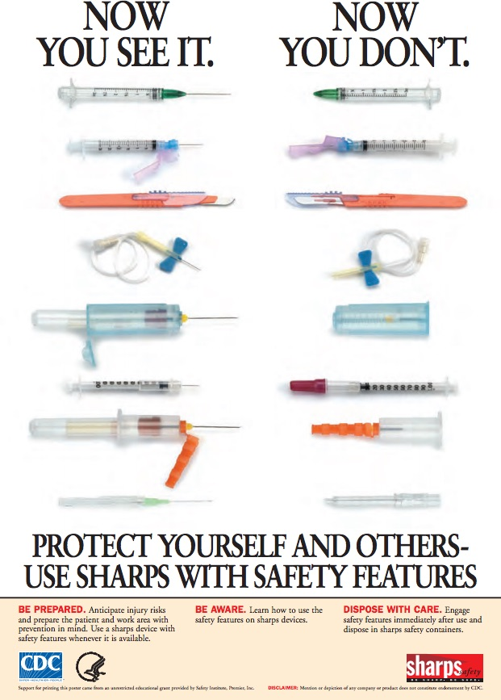
Figure 3. Protect yourself and others, use sharps with safety features
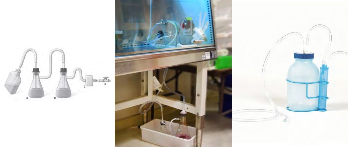
Figure 4. Liquid Waste
The left suction flask (above left, A) is used to collect the contaminated fluids into a suitable decontamination solution; an example setup of this is photographed in (middle), an alternate setup shown in (right).
There are three types of BSCs: Class I, II, and III.
Class I
Class I are designed to provide personnel and environmental protection only. The material (research experiment) inside the cabinet is not protected and thus subject to contamination. The use of Class I BSC is not advised at Stanford; talk to Biosafety if you feel you need to purchase one.
Class II
Class II cabinets meet requirements for the protection of personnel, product and the environment. There are four types of Class II cabinets (A, B1, B2, and B3), each differentiated according to the method by which air volumes are recirculated or exhausted.
Class II, type A: The Class II, type A biosafety cabinet does not have to be vented, which makes it suitable for use in laboratory rooms which cannot be ducted. This cabinet is acceptable for use of low to moderate risk agents in the absence of volatile toxic chemicals and volatile radionuclides.
Class II, type B1: The Class II, type B1 biosafety cabinet must be vented. 30% of the air is exhausted from the cabinet while 70% is recirculated back
into the room. This cabinet may be used with etiologic agents treated with minute quantities of toxic chemicals and trace amounts of radionuclides required as an adjunct to microbiological studies if work is done in the directly exhausted portion of the cabinet, or if the chemicals or radionuclides will not interfere with the work when recirculated in the downflow air.
Class II, type B2: The Class II, type B2 biosafety cabinet must be totally exhausted. 100% of the air from the cabinet is exhausted through a dedicated duct. This cabinet may be used with etiologic agents treated with toxic chemicals and radionuclides required as an adjunct to microbiological studies.
Class II, type B3: The Class II, type B3 biosafety cabinet must be vented. 70% of the air is exhausted from the cabinet while 30% is recirculated. This cabinet may be used with etiologic agents treated with minute quantities of toxic chemicals and trace quantities of radionuclides that will not interfere with work if recirculated in the downflow air.
Class III
Class III cabinets are gas-tight, designed for use with high-risk (BSL – 4) agents. There are no Class III cabinets at Stanford University.
Important Information
BSCs: Common Errors to Avoid
Do not block the perforated grills at the front and rear of the biosafety cabinet. The biosafety cabinet’s air intake is disrupted by blocking the grills. Blocking the grills at the opening of the biosafety cabinet may also allow contaminated room air from entering the cabinet without filtration.
Do not store unnecessary equipment or supplies in the cabinet. The more cluttered the cabinet, the greater the disruption to it’s air flow.
Do not use the top of the cabinet for storage. The HEPA filter could be damaged and the airflow disrupted.
Never disengage the alarm, as it indicates improper airflow, thereby effecting performance and endangering the researcher or the experiment.
Never completely close the window sash with the motor running as it may cause the motor to burn out.
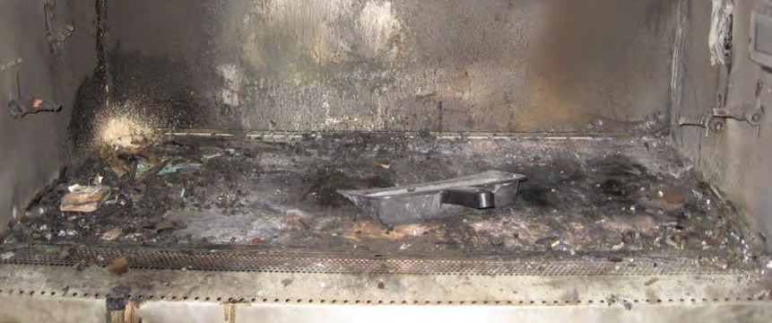
Figure 5. Do not let this be Your Biosafety Cabinet!
Result of use of open flame in a BSC.
9.6Aspiration of Liquid Waste
A vacuum flask system is required to provide protection to the central building vacuum system or vacuum pump and to personnel who service the equipment. Figure 4 illustrates a proper set-up for handling liquid waste. Additionally, Flasks A and B must be placed in secondary containment.
Please consult with Biosafety if you have any questions.
9.7Use of Open Flames in Biosafety Cabinets/Tissue Culture Hoods
Background
Early microbiologists had to rely on open flames to ensure sterility while engaging in certain techniques. With the advancement of modern technology, including the introduction of the Biosafety cabinet, the use of an open flame is almost always no longer necessary. In fact, the use of open flames in a Biosafety cabinet
disrupts the air flow, compromising protection of both the worker and the work
causes excessive heat buildup, may damage HEPA filters and/or melt the adhesive holding the filter together, thus compromising the cabinet’s integrity
presents a potential fire or explosion hazard. Electrical components such as the fan motor, lights and electrical outlets are not designed to operate in flammable atmospheres, where a flash fire could be ignited by a spark (Figure 5).
inactivates manufacturers warranties on the cabinet: cabinet manufacturers will assume no liability in the event of fire, explosion or worker exposure due to the use of a flammable gas in the cabinet. Additionally, the UL approval will automatically be void.
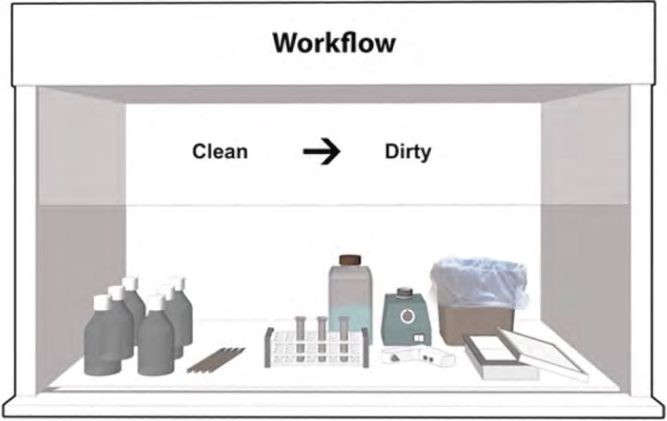
Figure 6. How to Setup Work Area Within a Biosafety Cabinet
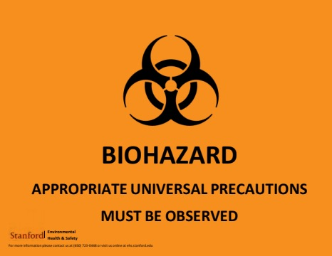
Figure 7. Universal Precautions Biohazard Signage
For information regarding Universal Precaution signs, see Chapter 4.
Recommendations
Stanford University has taken a strong stance against the use of gas burners or alcohol flames in Biosafety cabinets. The decision has been made in accordance with recommendations from numerous agencies. The Centers for Disease Control and Prevention (CDC) reports that “open-flames are not required in the near microbe-free environment of a biological safety cabinet” and create “turbulence which disrupts the pattern of air supplied to the work surface,” jeopardizing the sterility of the work area. This is also the recommendation of the World Health Organization (WHO) as well as the major Biosafety cabinet manufacturers.
The use of such devices is not only extremely dangerous, but can also inactivate manufacturer’s warranties. There are many alternatives to the use of burners: microincinerators, disposable tissue culture supplies, etc.
Solutions
Follow good BSC work practices (Figure 6)
Remove Bunsen burners and/or replace with alternative technology such as electric incinerators
Use disposable loops, spreaders, and other instruments
Autoclave instruments such as tweezers, scissors and scalpels
Reduce the amount of flammable chemicals in the cabinet. Use only enough alcohol for one day’s work
Use alcohol to sterilize any glass, etc. that is being used. Allow to evaporate before opening or dry with a Kimwipe
If it is deemed absolutely necessary for the work being done, use a pilotless burner or touch-plate microburner to provide a flame on demand
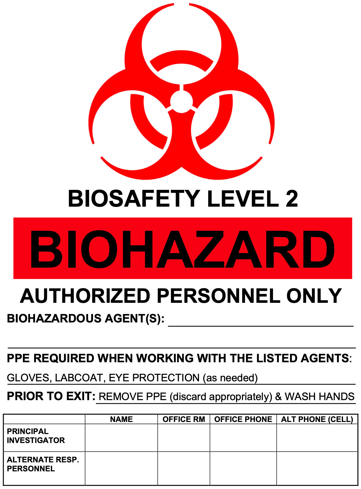
Figure 8. Biohazard Signage for BSL-2 and 3 work areas.
Important Information
BSC Usage: Best Practices
Turn on BSC and let run for 5 – 10 minutes before using
Wipe down cabinet surfaces with appropriate disinfectant
Arrange work surface from “Clean” to Dirty”, keeping air grilles clear of materials
Disinfect and remove all materials from cabinet after use
Leave BSC running for 5–10 minutes after use
Wipe down cabinet surfaces with appropriate disinfectant
9.8Installation and Maintenance of BSCs
Installation of cabinets must be done by certified professionals. Stanford University has a contract with a certified company for installation, cabinet certification (must be done annually), decontamination and any other needs that may arise. Arrangements and payment for any of the above work must be schedualed by the PI or the Department. For more information go to the Equipment tab, Biosafety Cabinets on the Biosafety web site (https://stanford.io/2zjZHsC).
9.9Signs and Hazard Communication
All laboratories that are approved by the Stanford APB must have a sign on the outside of the door indicating that biohazardous material is used within the room. Investigators who are using BSL2 or 3 agents or rDNA/sNA are required by the NIH to post a sign that incorporates the universal biohazard symbol on the outer laboratory door (Figure 7). The sign must include the agent name, Biosafety level, and specific requirements for entry, the PI’s name and spaces for two phone numbers of laboratory staff in case contact must be made. Biohazard signs are available through EH&S (Figure 8).
Red-orange coded biohazard labels must be placed on storage freezers, refrigerators, any laboratory equipment used with BSL2 or 3 agents, shipping containers, medical waste containers or any surface which may be reasonably anticipated to encounter surface contamination from biohazardous materials. These labels are available through EH&S.
9.10Exposures
For Exposure or Injury During
Work Hours (Monday–Friday 8am–4pm)
If an exposure or injury occurs during work hours and it is not a medical emergency, personnel should go to the Stanford University Occupational Health Center (SUOHC).
Environmental Safety Facility (ESF)
484 Oak Road, 2nd floor, Room 200, Stanford, CA 94305-8007
Phone: (650) 725-5308 Fax: (650) 725-9218
For Exposure or Injury
After Hours
After hours and on weekends, personnel should go to the Stanford Hospital Emergency Department. Detailed information is available on the SUOHC web page (https://suohc.stanford.edu/).
For any Exposure or Incident, the following steps shall be taken:
Step 1: Care for Personnel
If there has been a needlestick/puncture, wash the affected area with antiseptic soap and warm water for 15 minutes.
For a mucous membrane exposure, flush the affected area for 15 minutes using an eyewash.
Step 2: Medical Attention
If medical attention is needed, go to the Stanford University Occupational Health Clinic (non-life threatening incidents) or to the Stanford Hospital Emergency Department for medical emergencies or after hours. If a spill has occurred, contain and initiate clean up (see below).
Step 3: Notification
Notify PI, manager or supervisor to initiate an accident or exposure incident report. Initial report must be done at the earliest time possible, and within 24 hours of the incident.
Step 4: Reporting
SU-17 Incident Investigation Report
Use for any incident involving a Stanford University employee, student, visitor, and/or contractor (use an SU-17B for non-University employees).
Sharps Injury Report
In addition to the SU-17, use if a sharps (needle, scalpel, blade, animal bite, etc) was involved.
Recombinant and Synthetic Nucleic Acid Molecule Incident Reporting Template
Use for any potential exposures or unauthorized research using biohazardous agents and/or recombinant and synthetic nucleic acid material.
Important Information
Reporting
It is the responsibility of all Stanford personnel to report any exposures or unauthorized research using biohazardous agents and/or recombinant and synthetic nucleic acid material to the Biosafety Manager (sevleck@stanford.edu, (650) 724-7818).
Initial reporting must be done at the earliest time possible, and within 24 hours of the incident
A more detailed report is to be submitted within 10 days.
The following procedures are provided as a guideline to biohazardous/rDNA/sNA spill cleanup. If the spill is considered too large or too dangerous for laboratory personnel to safely clean up, secure the entire laboratory and call EH&S (723.0448) immediately for assistance.
Bleach is recommended as a standard disinfectant; however, other disinfectants may be used, provided they are effective against the particular agents. Disinfectants must be used at the appropriate dilution for the required minimum contact time.
Inside the Biosafety Cabinet
Wait at least five minutes to allow the BSC to contain aerosols.
Wear laboratory coat, safety glasses and gloves during cleanup.
Allow BSC to run during cleanup.
Apply disinfectant and allow appropriate contact time for disinfectant being used.
Wipe up spillage with disposable disinfectant-soaked paper towels. Do not place your head in the cabinet to clean the spill; keep your face behind the viewscreen.
Wipe the walls, work surfaces, and any equipment in the cabinet with disinfectant-soaked paper towels.
Discard contaminated disposable materials using appropriate biohazardous waste disposal procedures.
Place contaminated reusable items in biohazard bags or autoclavable pans with lids before autoclaving.
Expose non-autoclavable materials to disinfectant (appropriate contact time) before removal from the BSC.
Remove protective clothing and segregate for disposal or cleaning.
Run BSC 10 minutes after cleanup before resuming work or turning BSC off.
Wash hands with soap prior to leaving area.
Important Information
Spill in BSC
If the spill overflows the drain pan/catch basin under the work surface into the interior of the BSC, notify EH&S. A more extensive decontamination of the BSC may be required.
In the laboratory, outside the Biosafety Cabinet
Evacuate Room: insure all personnel are accounted for and that doors are closed. Put notice on door informing personnel of spill and not to enter. Allow spill to settle (30 min.).
Assemble clean-up materials (disinfectant, paper towels, biohazard bags and forceps).
Put on appropriate PPE, including lab coat, shoe covers, gloves and eye/face protection.
Initiate cleanup with disinfectant as follows:
Place paper towels or other absorbent material over spill area
Carefully pour disinfectant around the edges of the spill and then onto the paper towels. Avoid splashing or generating aerosol droplets.
Allow disinfectant to remain in contact with spill for at least 20 minutes
Apply more paper towels to wipe up spill
Clean spill area with fresh towels soaked in disinfectant.
Dispose of all towels or absorbent materials using appropriate biohazardous waste disposal procedures. If any sharp objects are present, use forceps and discard in a sharps container.
Remove protective clothing and segregate for disposal or cleaning.
Wash hands with soap prior to leaving area.
Inside a centrifuge
Clear area of all personnel.
Wait 30 minutes for aerosol to settle before attempting to cleanup spill.
If a spill is identified after the centrifuge lid is opened, carefully close the lid, evacuate the laboratory and close the laboratory door. Remain out of laboratory for at least 30 minutes. Put notice on door informing personnel of spill and not to enter.
Wear a laboratory coat, safety glasses and gloves during cleanup.
Remove rotors and buckets to nearest BSC for cleanup.
Thoroughly disinfect inside of centrifuge.
Discard contaminated disposable materials using appropriate biohazardous waste disposal procedures.
Wash hands with soap prior to leaving area.
Outside the laboratory
To prevent a spill, transport labeled biohazardous material in an unbreakable, well-sealed primary container placed inside of a second unbreakable, lidded container (cooler, plastic pan or pail) labeled with the biohazard symbol, biosafety level and contact information.
Should a spill occur in a public area, do not attempt to clean it up without appropriate PPE.
Secure the area, keeping all people well clear of the spill.
If help is needed, call EHS at 724.0448 to assist in cleanup.
Stand by during spill response and cleanup activity and provide assistance only as requested or as necessary.
If you participated in cleanup, wash hands with soap upon leaving area.
9.12Location of BSCs in Labs
A BSC air curtain is very delicate and provides the only barrier between the inside (potentially infectious aerosols) and the outside (where personnel are) air. Air-flow turbulence from both inside and outside of the BSC risks breach of containment; as such, cabinets should be located away from doors, high traffic areas and building HVAC systems (vents). The Biosafety program can assist in evaluating the best placement for a BSC to protect both the material and the researchers.
10Transportation
10.1Transportation of Biohazardous Goods Within Stanford University
Transport of biohazardous goods within Stanford University requires the use of proper secondary containment. Secondary containers can be a variety of items but must be leak-proof and have tight fitting covers. All containers must be labeled with a Biohazard sticker or label, biosafety level and contact information. Use terciary containment for transport from off-campus locations.
10.2Shipping of Biohazardous Goods Off Stanford University
Transport of biohazardous goods off Stanford University requires training and certification prior to shipping. Federal (FAA, 49 CFR) and international agencies (ICAO, the branch of the United Nations that governs all international civil aviation matters, IATA, the International Air Transport Association) have in place numerous regulations for shipping of dangerous goods by surface or air. Training is mandatory for shippers (the person sending out the package) and handlers (the people who transport the package) and is based on these regulations. Non- conformance of these regulations can result in a fine and/or imprisonment. Stanford personnel located at Stanford facilities can take training by completing the Biological Shipping Training Course-EHS-2700, DOT: Shipping Biological Goods or Dry Ice, available through the STARS system via https://axess.sahr.stanford.edu/group/guest/stars-training.
There are two categories of infectious agent classification that relates to packaging and shipping (Figures 1 & 2):
Category A Capable of causing permanent disability or life threatening or fatal disease in otherwise healthy humans or animals when exposure to it occurs.
Category B
An infectious substance not in a form generally capable of causing permanent disability or life-threatening or fatal disease in otherwise healthy humans or animals when exposure to it occurs. This includes Category B infectious substances transported for diagnostic or investigational purposes.
Note that training certification is only valid for two years or until regulatory changes are implemented and must be re-taken at that time if needed.
Please utilize the Dean of Research Export Controls Decision Tree (https://stanford.io/2opYe0y) to determine next steps and needed certifications for your shipment.
According to the regulations, Dangerous Goods “are articles or substances which are capable of posing a significant risk to health, safety or to property when transported”. For biological material, the flow chart in Figure 3 indicates which materials are regulated and which are not.
Important Information
Dry Ice is considered a Dangerous Good
Training and certification is required, and the package must be labeled and shipped.
10.3Export Controls Related to Biologicals and Toxins
The Commerce Department (https://www.commerce.gov/), along with other federal agencies, regulates shipping of biologicals and toxins outside the U.S. All select agents and many biological agents and toxins are controlled for export, and require US government authorization in the form of an export license before they may be shipped internationally. Stanford University’s Export Controls Website (https://stanford.io/2Bq33cY) identifies those agents and toxins requiring a license for export ().
Stanford’s Export Control Officer must be contacted before any export-controlled biological material or toxin is shipped abroad so that an export license can be obtained. Note: the export licensing process can take up to two months so plan well in advance. All other exports of biologicals need to be documented with the appropriate export certification signed by the responsible PI or researcher. An Export Controls Decision Tree (https://stanford.io/2opYe0y) is available to assist PIs and researchers with selecting the appropriate certification, as is Stanford’s Export Control Officer.
10.4Importation of Biohazardous Goods onto Stanford University
The Federal Government, in its shipping and transportation standards, defines etiologic agents as microorganisms that cause disease in humans including the following: bacteria, bacterial toxins, viruses, fungi, rickettsia, protozoans, parasites and prions. These disease-causing microorganisms may also be referred to as infectious agents or infectious substances, and the materials, such as body fluids and tissues that contain them, are referred to as infectious materials. When a package of infectious material is being imported into the United States, it must have an importation permit approved by the CDC. Organisms such as mosquitoes that might transmit infectious diseases to other humans are called vectors. Vectors may require permits from agencies such as the CDC, USDA or the California Department of Public Health.
It is important to obtain a CDC permit PRIOR to requesting an etiologic specimen from a source outside the United States. The Stanford University Administrative Panel on Biosafety will request that the Principal Investigator indicate the source of any agents used in experiments at Stanford during the application process. If the investigator intends to obtain the agent from outside the United States, a copy of the CDC or other permit will be requested by the APB as part of the APB review of the application.
Items Requiring Permits
Etiologic agents
It is impractical to list all of the several hundred species of etiologic agents. In general, an import permit is needed for any infectious agent known to cause disease in man. This includes, but is not limited to, bacteria, viruses, rickettsia, parasites, yeasts, molds, and prions. In some instances, agents which are suspected of causing human disease also require a permit.
Biological materials
Unsterilized specimens of human and animal tissue (including blood), body discharges, fluids, excretions or similar material, when known or suspected of being infected with disease transmissible to humans require a permit under these provisions in order to be imported.
Animals
Any animal known or suspected of being infected with any disease transmissible to humans. Importation of turtles of less than 4 inches in shell length and all non-human primates requires an importation permit issued by the Division of Quarantine. Telephone 404-718-2077 for further information.
Insects
Any living insect, or other living arthropod, known or suspected of being infected with any disease transmissible to humans. Also, if alive, any fleas, flies, lice, mites, mosquitoes, or ticks, even if uninfected. This includes eggs, larvae, pupae, and nymphs as well as adult forms.
Snails
Any snails capable of transmitting schistosomiasis. No mollusks are to be admitted without a permit from either Centers for Disease Control or the Department of Agriculture. Any shipment of mollusks with a permit from either agency will be cleared immediately.
Bats
All live bats. Bats may also require a permit from the U.S. Department of Interior, Fish and Wildlife Services.
If you are not certain if the agents you intend to use require a CDC importation permit, please call the Biosafety Officer at 725.1473 for assistance in making the determination.
Additional information regarding CDC permitting:
Centers for Disease Control and Prevention
Import Permit Program
1600 Clifton Road NE, Mailstop A-46
Atlanta, GA 30333
Telephone: 404-718-2077
FAX: 404-471-8333
Email: importpermit@cdc.gov
United States Department of Agriculture (USDA) Animal and Plant Health Inspection Service (APHIS) permits are required for infectious agents of livestock and biological materials containing animal products, particularly livestock material.
Tissue (cell) culture techniques customarily use bovine material as a stimulant for cell growth. Tissue culture materials and suspensions of cell culture used to grow viruses or other etiologic agents and which contain growth stimulants of bovine or other livestock origin are, therefore, controlled by the USDA due to the potential risk of introduction of exotic animal diseases into the U.S. Further information may be obtained at https://www.aphis.usda.gov/aphis/resources/permits or by calling the USDA/APHIS at 1-888-272-3181.
United States Department of Interior (USDI) permits are required for certain live animals and all live bats. Go to https://www.fws.gov/service/permits?$skip=10 or call 800-358-2104 for further information.
Letters of Authorization
After a review of an “Application to Import an Etiological Agent”, the issuing officer may issue a “Letter of Authorization” rather than an importation permit. The Letter of Authorization is issued for materials that are judged to be non-infectious, but which might be construed to be infectious by U.S. Customs inspection personnel.
Letters of Authorization may be issued for items such as formalin fixed tissues, sterile cell cultures, clinical materials such as human blood, serum, plasma, urine, or cerebrospinal fluid, or other tissues or materials of human origin when there is no evidence or indication that such materials contain an infectious agent.
A copy of a Letter of Authorization should be attached to the package, and also should be furnished to the courier or importation broker. Letters of Authorization are in effect for two years.
To speak with an Department of Commerce export counsellor, you may call one of the following numbers:
(202) 482-4811 – Outreach and Educational Services Division (located in Washington, DC)
(949) 660–0144 – Western Regional Office (located in Newport Beach, CA)
(408) 998-8806 – Northern California branch (located in San Jose, CA)
or e-mail your inquiry to the Export Counseling Division of the Office of Exporter Services at: ECDOEXS@bis.doc.gov
10.6Additional Resources:
Centers for Disease Control and Prevention
Public Inquiries/OHS
Mailstop F05
1600 Clifton Road Atlanta, GA 30333
U.S.A
CustomerServiceCallCenter@usda.gov
1-844-820-2234
Monday-Friday – 9:00 a.m. to 5:00 p.m. ET
11Waste & Decontamination
11.1Waste
Biohazardous waste includes all laboratory waste that may contain any biohazardous material or were in contact with said material. Additionally, any blood or components of blood or body fluids are to be disposed of as biohazardous waste, as are human or non-human primate cell lines. All biohazardous waste must be disposed of in red bags marked with the biohazard symbol; these bags must be secondarily contained in a puncture resistant outer container and covered with a tight fitting lid. Biohazard stickers must be present on all four sides of the container and the top of the lid.
In accordance with the California Medical Waste Management Act, Health and Safety Code, Chapter 6.1, medical waste is defined as including, but not limited to the following:
Human or animal specimens or cultures from medical and pathological laboratories.
Cultures and stocks of infectious agents from research and industrial laboratories.
Wastes from the production of bacteria, viruses, or the use of spores, discarded live and attenuated vaccines, and culture dishes and devices used to transfer, inoculate, and mix cultures.
Additionally, medical waste can include:
Waste containing any biological specimens sent to the laboratory for analysis.
Human specimens or tissues removed at surgery or autopsy, which are suspected by the attending physician and surgeon or dentist of being contaminated with infectious agents known to be contagious to humans.
Animal parts, tissues, fluids, or carcasses suspected by the attending veterinarian of being contaminated with infectious agents contagious to humans.
Waste, which at the point of transport from the generator’s site, at the point of disposal, or thereafter, contains recognizable blood, fluid blood products, containers, or equipment containing blood that is fluid, or blood from animals known to be infected with diseases which are communicable to humans.
Waste containing discarded materials contaminated with excretion, exudate, or secretions from humans who are required to
be isolated by the infection control staff, the attending physician and surgeon, the attending veterinarian, or local health officer, to protect others from highly communicable diseases or isolated animals known to be infected with diseases which are highly communicable to humans.
Please note, however, that the California Medical Waste Management Act has as exceptions to the definition of medical waste:
Waste generated in food processing or biotechnology that does not contain an infectious agent (defined as BL-3 or above).
Waste generated in biotechnology that does not contain human blood or blood products or animal blood or blood products suspected of being contaminated with infectious agents known to be communicable to humans
Urine, feces, saliva, sputum, nasal secretions, sweat, tears or vomitus, unless it contains fluid blood.
Figure 2. Biohazard Waste Bag in a Hard-Sided Leak Proof Container
These exemptions would include tissue culture materials that are not known or suspected of being infected. The biotechnology exemption permits the above items to be disposed of as non-red bag (non-biohazardous) waste. Note that these materials should be inactivated with an appropriate disinfectant to avoid contamination elsewhere in the laboratory.
An overview of Medical Waste Disposal for Stanford University is illustrated in Figure 1. A proper biohazardous waste container is shown in Figure 2. This chart is available in hard copy from EH&S.
Sharps Waste
Sharps waste means any device having rigid corners, edges or protuberances capable of cutting or piercing, including, but not limited to, all of the following:
Hypodermic needles, attachments (syringes or tubing), and blades
Broken glass/plastic items, such as Pasteur pipettes and blood vials contaminated with medical waste
Teeth, both intact and fragmented
Important Information
Do not clip, bend, shear or separate needles from syringes and do not recap needles
These are the times that you are most likely to get injured.
All sharps waste must be placed in an approved sharps container that is constructed of rigid, hard plastic and labeled with the universal biohazard symbol. Do not overfill the container. The lid of the sharps container must be shut and the container labeled with the room number prior to disposal. Glass pipettes that have come into contact with biohazardous waste must be discarded as sharps waste and not in broken glass containers (Figure 2).
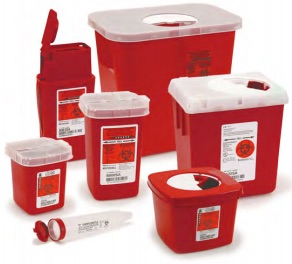
Figure 3. Sharps Containers
Mixed Waste
Waste can often involve a mixture of medical and non-medical waste. Mixed waste is categorized as medical waste except for the following:
A mixture of medical waste and hazardous chemical waste is categorized as hazardous chemical waste and is subject to the statutes and regulations applicable to hazardous chemical waste.
A mixture of medical waste and radioactive waste is categorized as radioactive waste and is subject to the statutes and regulations applicable to radioactive waste.
A mixture of medical waste, hazardous chemical waste, and radioactive waste is categorized as radioactive waste and is subject to the statutes and regulations applicable to radioactive waste.
Mixed chemical and biohazardous sharps waste will be placed into a sharps container that is labeled as chemical sharps waste. Any mixed chemical and biohazardous waste must be properly identified and labeled with a Hazardous Waste Tag. Information on the Stanford University Chemical Waste programs can be found at: https://ehs.stanford.edu/services/ wastetag or call EH&S, 723.5069.
All mixed radioactive-biohazardous waste must be properly segregated prior to disposal. Mixed radioactive and biohazardous non-sharps waste will be packed in a yellow bag labeled with the universal radiation symbol and/or radiation symbol. Mixed radioactive and medical sharps waste will be placed in a sharps container labeled with the universal radiation label. Mixed radioactive waste is picked up by Radiation Safety waste technicians and transported to the EH&S radioactive waste accumulation area for packaging and disposal. Call 725-1408 for pick up and information regarding mixed radioactive-biohazardous waste.
Animal Carcasses
After proper euthanasia of laboratory animals (Department of Laboratory Animal Medicine Euthanasia Procedures), uncontaminated/non-infectious animal carcasses shall be placed in black bags and brought to the appropriate Research Animal Facility (RAF) refrigerators. Contaminated/ infected carcasses, including those administered rDNA/SNA, shall be placed in a red biohazard bag, the bag shall be labeled with the APLAC number and biohazardous agent, put in a hard-sided leakproof container that is labeled with the biohazard symbol and brought to the RAF biohazard refrigerators (Figure 3).
Autoclave Waste
Important Information
Autoclave Use
Stanford University contracts with a licensed medical waste vendor to properly handle and dispose of all medical waste. Unless otherwise stated, at Stanford University autoclaving materials prior to medical waste disposal is not necessary. Exceptions to this are users of BSL – 3 biohazardous agents.
Any laboratory medical waste which is being autoclaved shall be placed in an autoclavable red bag. This bag shall have the Universal Biohazard Symbol on the outside. The top of the bag shall be secured with indicator tape that will change color after the attainment of sterilization. Be sure that the autoclavable red bag can withstand the autoclave cycle without melting. See autoclave
procedures below.
11.2Decontamination
General Decontamination Procedure (Figure 4)
Put on proper PPE
Place an absorbent material (paper towel, bench diaper) over the contaminated surface, then add liquid disinfectant; this will prevent spread of contamination.
Allow sufficient contact time after applying the disinfectant. If the contact time is too brief, the surface will not be thoroughly disinfected.
When cleaning a spill of concentrated material or if the disinfectant must act on an uneven surface, allow extra time for the disinfectant to act.
Avoid using concentrated or undiluted solutions of your disinfectant to “speed up” the inactivation process. The surface that is being disinfected may be adversely affected by strong chemicals. This is especially significant when working with bleach, which is a very strong corrosive. Some disinfectants will leave a residue of chemicals behind.
Rinse the cleaned area with distilled water to avoid adverse effects on your experiment. This is especially important in tissue culture rooms where a cell line can be wiped out by disinfectant residue left on equipment.
Disinfectant Selection
Disinfectant selection is based on several factors (Figure 5):
What is the target organism that you wish to inactivate?
What are the physical characteristics of the surface which will be disinfected? (porous surfaces may absorb disinfectants; some disinfectants may corrode metal surfaces).
How long will the contact time be between the disinfectant and the target organism? (high concentrations of biological organisms may require longer contact times).
Note that the disinfection of prions and prion-like proteins must follow specific guidelines.
It is important to note that ‘bleach’, a very common and effective disinfectant, is not stable at dilute concentrations; working dilutions of sodium hypochlorite should be made weekly from a stock solution. Working solutions of 10% bleach (1:10 dilution of household bleach in water) is effective in most situations. Note that undiluted bleach must not go down the drain.
Alcohol based disinfectants will also evaporate over time and should be made up at appropriate intervals.
The following list of disinfectants, their efficiencies, contact times and recommended dilutions are general guidelines—please follow specific manufacturer’s recommendations if available.
Quaternary Ammonium Compounds are commonly used in floor cleaning solutions. Quaternary ammonium compounds are effective in inactivating most vegetative bacteria, fungi, and lipid containing viruses. Quaternary ammonium compounds are NOT effective when used to disinfect Mycobacterium tuberculosis (TB), bacterial spores, and many viruses such as HBV.
Recommended contact time: 10 minutes
Recommended Working Dilution: 0.1-2.0%
Recommended for: cleaning optical instruments and administrative areas in the vicinity of a laboratory
Ethanol is commonly used on equipment whose surfaces are susceptible for corrosion if other disinfectants are applied. Ethyl alcohol is effective in inactivating most vegetative bacteria, fungi, and lipid containing viruses. Ethanol is NOT effective when used to disinfect HBV, Mycobacterium tuberculosis (TB) and bacterial spores.
Recommended contact time: 10 minutes
Recommended Working Dilution: 70-85%
Recommended for: Stainless steel surfaces. CAUTION: Do not use 70% ethanol to clean a Class II, type A recirculating biosafety cabinet. The vapors from ethanol are flammable and the lower explosive limit (LEL) for ethanol is easily attained
Phenolics are commonly used to decontaminate surfaces such as lab bench tops. Phenolics are effective in inactivating vegetative bacteria, fungi, TB, lipid containing viruses and have some effect on HBV. However, phenolics will not inactivate bacterial spores.
Recommended contact time: 10 minutes
Recommended Working Dilution: 1.0-5.0%
Recommended for: an alternative to bleach as a broad-spectrum disinfectant for bench tops, floors, and metal surfaces. Phenolics will not corrode metal surfaces as readily as bleach
Iodine-containing compounds or iodophors are commonly used to decontaminate metal surfaces or equipment. Iodophors are effective in inactivating vegetative bacteria, fungi, TB and lipid containing viruses and have some effect on HBV. However, iodophors will not inactivate bacterial spores.
Recommended contact time: 10 minutes
Recommended Working Dilution: 25-1600 ppm, 0.47%
Recommended for: biosafety cabinets, dental equipment, bench tops, floors and lab equipment in general
Chlorine compounds such as bleach are commonly used in the lab because of the relative ease in accessibility and low cost. Chlorine (hypochlorite) compounds are effective in inactivating vegetative bacteria, fungi, lipid and non-lipid viruses, Coxiella burnetii and TB. Chlorine compounds have some effect in inactivating bacterial spores.
Recommended contact time: 30 minutes
Recommended Working Dilution: 500 ppm (1:10 dilution of household bleach, 5% hypochlorite ion)
Recommended for: floors, spills (inactivating liquid specimens), bench tops and contaminated clothing. Do not use bleach on electronic equipment, optical equipment or unpainted stainless steel. Undiluted bleach and other disinfectants must not go down the drain
Paraformaldehyde and formaldehyde are often used to decontaminate large pieces of laboratory equipment, such as biosafety cabinets (but only by professionals!). Paraformaldehyde/formaldehyde will inactivate vegetative bacteria, fungi, lipid and non-lipid viruses, HBV, TB, Coxiella burnetii, and bacterial spores. However, paraformaldehyde and formaldehyde are registered carcinogens in the State of California and are very toxic to use without the accessibility of a vented fume hood and/or personal protective equipment. Do not use paraformaldehyde or formaldehyde in the lab to decontaminate equipment. The approved biosafety cabinet contractor will use paraformaldehyde to decontaminate your biosafety cabinet prior to changing the HEPA filters. Be sure to avoid using the biosafety cabinet while this operation is in effect!
Glutaraldehyde is often used to disinfect hospital instruments. Glutaraldehyde will inactivate vegetative bacteria, fungi, lipid and non-lipid viruses, HBV, TB, Coxiella burnetii, and bacterial spores. However, glutaraldehyde is very toxic to use without the accessibility of a vented fume hood and/or personal protective equipment. Do not use glutaraldehyde in the lab to decontaminate equipment.
Ethylene Oxide is often used to disinfect hospital instruments. Ethylene oxide will inactivate vegetative bacteria, fungi, lipid and non-lipid viruses, HBV, TB, Coxiella burnetii, and bacterial spores. However, Ethylene oxide is a registered carcinogen in the State of California and is very toxic to use without mechanically generated ventilation exhaust and personal protective equipment. Do not use ethylene oxide in the lab to decontaminate equipment.
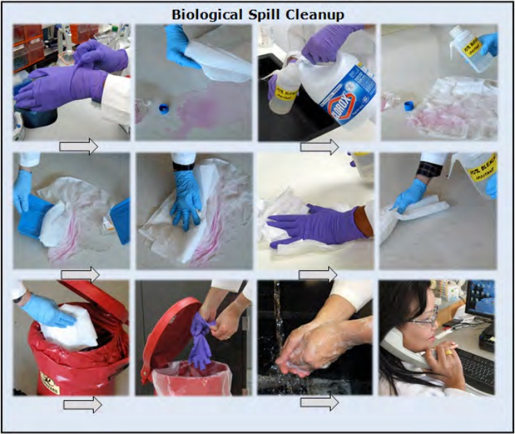
Figure 4. How to Clean a Contaminated Surface
Choose disinfectant based on biological present in spill.
Length of time required for contact depends upon biological and disinfectant.
Dispose of materials as medical waste.
Report incident as required
Hypochlorite solutions are classified as irritants and corrosives. Undiluted bleach solution is corrosive to stainless steel, and thorough rinsing must follow its use in the BSC and stainless steel sinks to remove the residue. Do not autoclave bleach solutions.
Never mix different chlorine solutions or store them with cleaning products containing ammonia, ammonium chloride, or phosphoric acid. Combining these chemicals could result in release of chlorine gas, which can cause nausea, eye irritation, tearing, headache, and shortness of breath. These symptoms may last for several hours. A worker exposed to an unpleasantly strong odor after mixing of a chlorine solution with a cleaning product should leave the room or area immediately and remain out of the area until the fumes have cleared completely.
To be an effective disinfectant, working bleach solutions must contain >0.5% but <2% sodium hypochlorite. Hypochlorite concentration in household bleach varies by manufacturer. Many household bleach solutions contain 5.25% sodium
hypochlorite, and a 1:10 dilution (5,000 ppm Cl) will produce a 0.53% hypochlorite solution. Use of bleach solutions with lower hypochlorite concentrations might not provide the proper level of disinfection. Prepare a fresh 1:10 household bleach solution regularly.
11.4Autoclaves
A steam autoclave is a device designed to sterilize cultures, media, surgical instruments and medical waste. Autoclaves will sterilize on the basis of:
Length of time in the cycle
Temperature
Contact
Pressure
Steam
Important Information
Need to Autoclave?
Unless otherwise stated, at Stanford University autoclaving materials prior to medical waste disposal is NOT necessary. Exceptions to this are users of BSL – 3 biohazardous agents.
An autoclave is suitable for the treatment of certain types of medical waste but not all types. The following items of medical waste must not be autoclaved:
Items of medical waste which are mixed with volatile chemical solvents or radioactive materials (this waste must be handled as either chemical waste or radioactive waste)
Pathological waste (pathological waste is handled as follows: animal carcasses are placed in a red bag and taken to the pathological waste freezers in the Research Animal Facility; human body parts are placed in a red bag and disposed of as medical waste without autoclaving.)
The following items of medical waste can be autoclaved:
Microbiological waste such as cultures of human or animal specimens from medical or pathological laboratories
Cultures and stocks of microbiological specimens
Waste contaminated with biohazardous materials such as contaminated paper towels or contaminated surgical gloves
Considerations for effective autoclaving:
Do not overload the autoclave bag. The autoclave steam and heat cannot penetrate to the interior of an overloaded bag. The outer contents of the bag will be sterilized but the inner part of the bag will essentially be unaffected by the autoclave cycle
Do not put sharp objects, such as broken glass that can puncture the bag
Do not overload the autoclave
Do not mix autoclave bags and other items to be autoclaved in the same autoclave cycle. Liquid media requires a shorter cycle, often 15- 20 minutes while autoclavable medical waste requires a minimum of 30 minutes in order to be effectively sterilized
To help ensure non-variability of sterilization, try to use a consistent loading pattern of materials within the autoclave (amount of material and location within autoclave)
Record autoclave conditions achieved for each cycle that is used to decontaminate medical waste. Validate autoclave effectiveness once every month (test strips are a recommended method and easily available). Retain records in an accessible location
Safety considerations for autoclave users:
Only operate an autoclave if you have been trained in the use of that specific autoclave.
Wear personal protective equipment including heat-resistant gloves, goggles or safety glasses and a lab coat. When autoclaving liquids, wear a face shield and goggles, lab coat, rubber apron, and heat-resistant gloves.
Use caution when opening the autoclave door. Allow superheated steam to exit.
Use caution when handling a bag in case sharp objects have been inadvertently placed in the bag. Never lift a bag from the bottom of the bag to load into the chamber. Handle the bag from the top.
Watch out for pressurized containers. Superheated liquids may spurt from sealed containers. Never seal a container of liquid with a cork that may cause a pressurized explosion inside the autoclave.
Place any containers with liquids in them in a heat-resistant secondary container while autoclaving. Do not handle after autoclaving until the liquid has cooled.
Agar plates will melt and the agar will become liquefied. Avoid coming in contact with this molten liquid. Use a secondary autoclavable tray to catch any potential leakage from the bag that would otherwise leak into the autoclave.
Glassware may crack or shatter if cold liquid comes in contact with this superheated glassware. If glass breaks in the autoclave, use tongs, forceps, or other mechanical means to recover the fragments; make certain that the autoclave has been cooled down to avoid surface burns.
Use an absorbent liner for glass vessels containing liquid. Never put autoclave bags or glassware directly in contact with the bottom of the autoclave.
Perform preventative maintenance on lab-owned autoclaves per the manufacturer’s recommendations. Do not use damaged or malfunctioning autoclaves. Defective autoclaves should be repaired by a suitable professional.
Place waste as generated in an autoclavable red bag
Put autoclave tape loosely around the top of the bag and place the bag in a secondary container such as an autoclave pan
Set the cycle for 30 minutes, 121 degrees F at 20 PSI (or alternate required conditions depending on waste)
Document the conditions achieved during the cycle
After autoclaving, the autoclaved red bag must be disposed of as red bag waste
A variety of factors must be taken into consideration prior to purchasing an autoclave; consult with EH&S if you have questions before purchasing a new autoclave.
11.5Agent Specific Treatment
Prions and Prion-like Proteins
Anyone working with prions, prion-like proteins or other Spongiform encephalopathies that may be present in brain tissue must call the Biosafety Manager, 725.1473. Slow viruses such as Kuru are included in this group. Prions and prion-like proteins (see Chapter 4 for a definition of prion-like proteins) are highly resistant to conventional decontamination, and laboratories are strongly encouraged to use only disposable equipment. Specific procedures for decontamination and disposal must be followed when working with prions and prion-like proteins. Contact Biosafety for further information, or visit the following sites for information on protocols:
Laboratories which utilize biological materials must notify the Biosafety program prior to terminating work to ensure that the laboratory has been decontaminated and that the biological material has been secured or properly disposed. If the Principal Investigator intends to cease work, he or she must notify Biosafety at least 60 days prior to the set departure/closing date. This will allow Biosafety to consult with the Principal Investigator and perform a walkthrough of the lab to provide recommendations on the most expeditious way to prepare for the move and the final termination of the biohazardous work in the lab (Figure 1). A final Lab Deactivation Inspection will be scheduled accordingly.
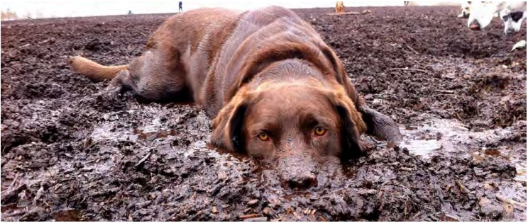
Figure 1. In Need of Lab Cleanup
12.2Lab Close Out Procedures
Biosafety cabinets must be decontaminated and the outer surfaces cleaned with a suitable disinfectant; decontamination must be done by a certified professional. Currently, Stanford University contracts with an outside vendor for this; call the vendor (number is found at https://ehs.stanford.edu/topic/biosafety-biosecurity) to schedule an appointment. The Principal Investigator should present a receipt verifying that the paraformaldehyde decontamination procedure has been completed by the contracted biosafety cabinet certifier.
Storage freezers should be emptied and the surfaces should be decontaminated with a suitable disinfectant. The former contents must be decontaminated by autoclaving or disposed of in a biohazard bag. Cryostats and liquid nitrogen storage equipment must also be emptied and contents properly disposed of. If the Principal Investigator intends to stay at Stanford but not continue the APB approved project, then only the biological agents that were approved for use on the application need to be disposed.
Account for all specimens stored outside the lab room. Specimens stored in a cold room or an incubator in an adjacent tissue culture room should be autoclaved or disposed of in a biohazard bag.
Medical waste such as used sharps containers or biohazard bags must be disposed of and the storage areas for the medical waste cleaned with a suitable disinfectant.
Any biohazard labels must be removed from surfaces. The outer surface of all equipment and any work surface must be decontaminated with a suitable disinfectant.
The Biohazard/Universal Precautions signs must be removed from door.
An autoclave is suitable for the treatment of certain types of medical waste but not all types. The following items of medical waste must not be autoclaved:
Items of medical waste which are mixed with volatile chemical solvents or radioactive materials (this waste must be handled as either chemical waste or radioactive waste).
Pathological waste (pathological waste is handled as follows: animal carcasses are placed in a biohazard bag and taken to the pathological waste freezers in the Research Animal Facility; human body parts are placed in a biohazard bag and disposed of as medical waste without autoclaving).
12.3Disposal of Used Lab Equipment
Used laboratory equipment, such as incubators, refrigerators and freezers, must be thoroughly decontaminated prior to disposal or release to surplus property (Figure 2). Laboratory equipment that was used in conjunction with biological research may have residual contamination resulting from chemicals and/or radioactive materials.
Wear appropriate personal protective equipment. At a minimum wear gloves, lab coat, safety glasses with side shields or goggles and a respirator if chemical vapors/odors are anticipated (contact EH&S for respirator information).
Remove all specimens and/or laboratory materials.
Remove all biohazard labels or stickers from the surface of the equipment.
Clean the surface of the equipment for any radioactive contamination (if applicable). Schedule a wipe test with Health Physics to ensure that the equipment is free from residual radioactive contamination. Call Health Physics, 723.3201 for more information.
Be sure that the equipment surface can be safely cleaned with a chemical disinfectant. Make sure that the equipment was not used to store water reactive chemicals, corrosives or strong oxidizers that may incompatibly react during the decontamination process.
Apply a chemical disinfectant to the surface of the equipment and allow the disinfectant time to inactivate potential contamination.
Ensure that the surface is rinsed to remove the disinfectant.
Put the cleaning waste (paper towel, sponge) in a biohazard bag and treat as biohazardous waste.
Dispose of PPE properly and wash hands thoroughly.
Do not open internal compartments of equipment for decontamination. If the internal compartments of a piece of equipment are grossly contaminated with biohazardous material, label or tag the equipment as potentially biohazardous. Notify the Biosafety Manager and a decision will be made whether the equipment is safe for disposal.
When the equipment is ready for pick up, prepare a certificate with your department’s letterhead addressed to the Director of Surplus Property, Material Management, stating that you have decontaminated the equipment designated for removal in accordance with guidelines from Biosafety. You need not send a copy to the Biosafety Manager or EH&S.
Additional guidance related to the proper deactivation and move-out of Stanford University laboratories is available at: https://stanford.io/2CsW6HG
A Laboratory Deactivation Matrix and Laboratory Deactivation Inspection Checklist can be found at: https://stanford.io/2AL2KbK
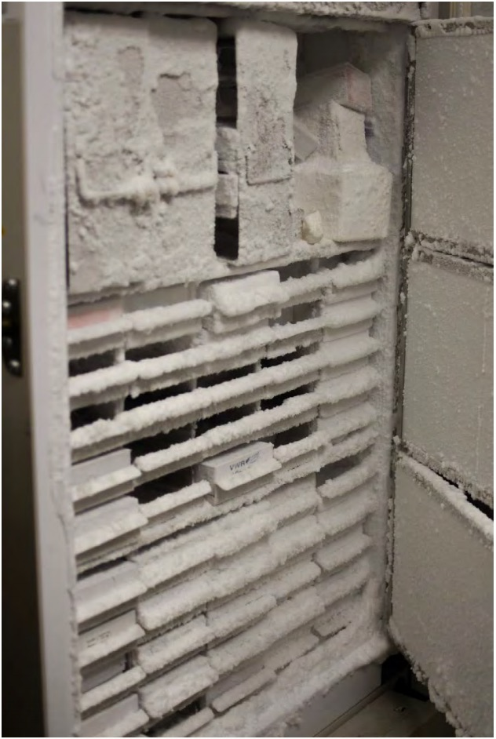
Figure 2. Freezer in Need of Clean-Out
13Appendices
13.1Appendix A: Biosafety Levels for Biological Agents
Botulinum neurotoxin producing species of Clostridium*
Conotoxins (Short, paralytic alpha conotoxins containing the following amino acid sequence X1CCX2PACGX3X4X5X6CX7)1
Coxiella burnetii
Crimean-Congo haemorrhagic fever virus
Diacetoxyscirpenol
Eastern Equine Encephalitis virus3
Ebola virus*
Francisella tularensis*
Lassa fever virus
Lujo virus
Marburg virus*
Monkeypox virus3
Reconstructed replication competent forms of the 1918 pandemic influenza virus containing any portion of the coding regions of all eight gene segments (Reconstructed 1918 Influenza virus)
Ricin
Rickettsia prowazekii
SARS-associated coronavirus (SARS-CoV)
Saxitoxin
South American Haemorrhagic Fever viruses:
Chapare
Guanarito
Junin
Machupo
Sabia
Staphylococcal enterotoxins A,B,C,D,E subtypes
T-2 toxin
Tetrodotoxin
Tick-borne encephalitis complex (flavi) viruses:
Far Eastern subtype
Siberian subtype
Kyasanur Forest disease virus
Omsk hemorrhagic fever virus
Variola major virus (Smallpox virus)*
Variola minor virus (Alastrim)*
Yersinia pestis*
Overlap Select Agents and Toxins
Bacillus anthracis*
Bacillus anthracis Pasteur strain
Brucella abortus
Brucella melitensis
Brucella suis
Burkholderia mallei*
Burkholderia pseudomallei*
Hendra virus
Nipah virus
Rift Valley fever virus
Venezuelan equine encephalitis virus3
USDA Select Agents and Toxins
African horse sickness virus
African swine fever virus
Avian influenza virus3
Classical swine fever virus
Foot-and-mouth disease virus*
Goat pox virus
Lumpy skin disease virus
Mycoplasma capricolum3
Mycoplasma mycoides3
Newcastle disease virus2,3
Peste des petits ruminants virus
Rinderpest virus*
Sheep pox virus
Swine vesicular disease virus
USDA Plant Protection and Quarantine (PPQ) Select Agents and Toxins
*Denotes Tier 1 Agent 1 C = Cysteine residues are all present as disulfides, with the 1st and 3rd Cysteine, and the 2nd and 4th Cysteine forming specific disulfide bridges; The consensus sequence includes known toxins α-MI and α-GI (shown above) as well as α-GIA, Ac1.1a, α-CnIA, α-CnIB; X1 = any amino acid(s) or Des-X; X2 = Asparagine or Histidine; P = Proline; A = Alanine; G = Glycine; X3 = Arginine or Lysine; X4 = Asparagine, Histidine, Lysine, Arginine, Tyrosine, Phenylalanine or Tryptophan; X5 = Tyrosine, Phenylalanine, or Tryptophan; X6 = Serine, Threonine, Glutamate, Aspartate, Glutamine, or Asparagine; X7 = Any amino acid(s) or Des X and; “Des X” = “an amino acid does not have to be present at this position.” For example if a peptide sequence were XCCHPA then the related peptide CCHPA would be designated as Des-X. 2 A virulent Newcastle disease virus (avian paramyxovirus serotype 1) has an intracerebral pathogenicity index in day-old chicks (Gallus gallus) of 0.7 or greater or has an amino acid sequence at the fusion (F) protein cleavage site that is consistent with virulent strains of Newcastle disease virus. A failure to detect a cleavage site that is consistent with virulent strains does not confirm the absence of a virulent virus. 3 Select agents that meet any of the following criteria are excluded from the requirements of this part: Any low pathogenic strains of avian influenza virus, South American genotype of eastern equine encephalitis virus , west African clade of Monkeypox viruses, any strain of Newcastle disease virus which does not meet the criteria for virulent Newcastle disease virus, all subspecies Mycoplasma capricolum except subspecies capripneumoniae (contagious caprine pleuropneumonia), all subspecies Mycoplasma mycoides except subspecies mycoides small colony (Mmm SC) (contagious bovine pleuropneumonia), and any subtypes of Venezuelan equine encephalitis virus except for Subtypes IAB or IC, provided that the individual or entity can verify that the agent is within the exclusion category. 9/10/13
13.3Appendix C: Plant Biosafety
Biosafety Levels for Experiments involving Plants with rDNA/sNAs and microorganisms
Note: the following definition is used for the term “exotic plant pathogen” per NIH Guidelines:
In accordance with accepted scientific and regulatory practices of the discipline of plant pathology, an exotic plant pathogen (e.g., virus, bacteria, or fungus) is one that is unknown to occur within the U.S. (see Section V-G, Footnotes and References of Sections I-IV). Determination of whether a pathogen has a potential for serious detrimental impact on managed (agricultural, forest, grassland) or natural ecosystems should be made by the Principal Investigator and the Institutional Biosafety Committee, in consultation with scientists knowledgeable of plant diseases, crops, and ecosystems in the geographic area of the research (Section V-M).
Biosafety Level 1- Plants (BL1-P)
BL1-P includes all experiments with recombinant or synthetic nucleic acid molecule-containing plants and plant-associated microorganisms not covered in Section III-E-2-b or other sections of the NIH Guidelines. Examples of such experiments include:
those involving recombinant or synthetic nucleic acid molecule-modified plants that are not noxious weeds or
plants that cannot interbreed with noxious weeds in the immediate geographic area, or
experiments involving whole plants and recombinant or synthetic nucleic acid molecule-modified non-exotic or microorganisms that have no recognized potential for rapid and widespread dissemination or for serious detrimental impact on managed or natural ecosystems (e.g., Rhizobium spp. and Agrobacterium spp.) Section III-E-2-a.
Biosafety Level 2- Plants (BL2-P)
BL-2P includes:
Experiments involving modification of plants by recombinant or synthetic nucleic acid molecules that are noxious weeds or can interbreed with noxious weeds in the immediate geographic area. Section III-E-2-b-(1).
Experiments in which the introduced DNA represents the complete genome of a non-exotic infectious agent into plants. Section III-E-2-b-(2).
Plants associated with recombinant or synthetic nucleic acid molecule-modified non-exotic microorganisms that have a recognized potential for serious detrimental impact on managed or natural ecosystems. Section III-E-2-b-(3).
Plants associated with recombinant or synthetic nucleic acid molecule-modified exotic microorganisms that have no recognized potential for serious detrimental impact on managed or natural ecosystems. Section III-E-2-b-(4).
Experiments with recombinant or synthetic nucleic acid molecule-modified arthropods or small animals associated with plants, or with arthropods or small animals with recombinant or synthetic nucleic acid molecule-modified microorganisms associated with them if the recombinant or synthetic nucleic acid molecule-modified microorganisms have no recognized potential for serious detrimental impact on managed or natural ecosystems. Section III-E-2-b-(5).
Biosafety Level 3- Plants (BL3-P)
BL3-P includes:
Experiments involving most exotic (see Section V-M, Footnotes and References of Sections I-IV) infectious agents with recognized potential for serious detrimental impact on managed or natural ecosystems when recombinant or synthetic nucleic acid molecule techniques are associated with whole plants. Section III-D- 5-a.
Experiments involving plants containing cloned genomes of readily transmissible exotic (see Section V-M, Footnotes and References of Sections I-IV) infectious agents with recognized potential for serious detrimental effects on managed or natural ecosystems in which there exists the possibility of reconstituting the complete and functional genome of the infectious agent by genomic complementation in planta. Section III-D-5-b.
Experiments involving sequences encoding potent vertebrate toxins introduced into plants or associated organisms. Recombinant or synthetic nucleic acid molecules containing genes for the biosynthesis of toxin molecules lethal for vertebrates at an LD50 of <100 nanograms per kilogram body weight fall under Section III-B-1, Experiments Involving the Cloning of Toxin Molecules with LD50 of Less than 100 Nanograms Per Kilogram Body Weight, and require NIH/OBA and Institutional Biosafety Committee approval before initiation. Section III-D-5-d.
Experiments with microbial pathogens of insects or small animals associated with plants if the recombinant or synthetic nucleic acid molecule-modified organism has a recognized potential for serious detrimental impact on managed or natural ecosystems. Section III-D-5-e
Biosafety Level 4- Plants (BL4-P)
BL-4P includes:
Experiments with a small number of readily transmissible exotic (see Section V-M, Footnotes and References of Sections I-IVa) infectious agents, such as the soybean rust fungus (Phakospora pachyrhizi) and maize streak or other viruses in the presence of their specific arthropod vectors, that have the potential of being serious pathogens of major U.S. crops
Biosafety Level 1-Plants (BL 1 – P)
Containment Practices for Biosafety Level 1- 3 Plants
Greenhouse Access
Access to the greenhouse shall be limited or restricted, at the discretion of the Greenhouse Director, when experiments are in progress.
Prior to entering the greenhouse, personnel shall be required to read and follow instructions on BL1-P greenhouse practices and procedures.
All procedures shall be performed in accordance with accepted greenhouse practices that are appropriate to the experimental organism.
Records
A record shall be kept of experiments currently in progress in the greenhouse facility.
Decontamination and Inactivation
Experimental organisms shall be rendered biologically inactive by appropriate methods before disposal outside of the greenhouse facility.
Control of Undesired Species and Motile Macroorganisms
A program shall be implemented to control undesired species (e.g., weed, rodent, or arthropod pests and pathogens), by methods appropriate to the organisms and in accordance with applicable state and Federal laws.
Arthropods and other motile macroorganisms shall be housed in appropriate cages. If macroorganisms (e.g., flying arthropods or nematodes) are released within the greenhouse, precautions shall be taken to minimize escape from the greenhouse facility.
Concurrent Experiments Conducted in the Greenhouse
Experiments involving other organisms that require containment level lower than BL1-P may be conducted in the greenhouse concurrently with experiments that require BL1-P containment, provided that all work is conducted in accordance with BL1-P greenhouse practices.
Biosafety Level 2-Plants (BL 2 – P)
Greenhouse Access
Access to the greenhouse shall be limited or restricted, at the discretion of the Greenhouse Director, to individuals directly involved with the experiments when they are in progress. Personnel shall be required to read and follow instructions on BL2-P practices and procedures. All procedures shall be conducted in accordance with accepted greenhouse practices that are appropriate to the experimental organisms.
Records
A record shall be kept of experimental plants, microorganisms, or small animals that are brought into or removed from the greenhouse facility and shall be kept of experiments currently in progress in the greenhouse facility.
Principal Investigator shall report any greenhouse accident involving the inadvertent release
or spill of microorganisms to the Greenhouse Director, Institutional Biosafety Committee, NIH/ OBA and other appropriate authorities immediately (if applicable). Reports to the NIH OSP shall be sent to the Office of Science Policy, National Institutes of Health, preferably by e-mail to: NIHGuidelines@od.nih.gov; and on the OSP website (https://osp.od.nih.gov/about-us/). Documentation of any such accident shall be prepared and maintained.
Decontamination and Inactivation
Experimental organisms shall be rendered biologically inactive by appropriate methods before disposal outside of the greenhouse facility.
Control of Undesired Species and Motile Macroorganisms
A program shall be implemented to control undesired species (e.g., weed, rodent, or arthropod pests and pathogens) by methods appropriate to the organisms and in accordance with applicable state and Federal laws.
Arthropods and other motile macroorganisms shall be housed in appropriate cages. If macroorganisms (e.g., flying arthropods or nematodes) are released within the greenhouse, precautions shall be taken to minimize escape from the greenhouse facility.
Concurrent Experiments Conducted in the Greenhouse
Experiments involving other organisms that require a containment level lower than BL2-P may be conducted in the greenhouse concurrently with experiments that require BL2-P containment provided that all work is conducted in accordance with BL2-P greenhouse practices.
Other Practices
A sign shall be posted indicating that a restricted experiment is in progress. The sign shall indicate the following: (i) the name of the responsible individual, (ii) the plants in use, and (iii) any special requirements for using the area.
Materials containing experimental microorganisms, which are brought into or removed from
the greenhouse facility in a viable or intact state, shall be transferred in a closed non-breakable container.
A greenhouse practices manual shall be prepared or adopted. This manual shall: (i) advise personnel of the potential consequences if such practices are not followed, and (ii) outline contingency plans to be implemented in the event of the unintentional release of organisms. An autoclave shall be available for the treatment of contaminated greenhouse materials.
If intake fans are used, measures shall be taken to minimize the ingress of arthropods. Louvers or fans shall be constructed such that they can only be opened when the fan is in operation.
Biosafety Level 3-Plants (BL 3 – P)
Greenhouse Access
Authorized entry into the greenhouse shall be restricted to individuals who are required for program or support purposes. The Greenhouse Director shall be responsible for assessing each circumstance and determining those individuals who are authorized to enter the greenhouse facility.
Prior to entering the greenhouse, personnel shall be required to read and follow instructions on BL3-P practices and procedures. All procedures shall be conducted in accordance with accepted greenhouse practices that are appropriate to the experimental organisms.
Records
A record shall be kept of experimental plants, microorganisms, or small animals that are brought into or removed from the greenhouse facility and shall be kept of experiments currently in progress in the greenhouse facility.
The Principal Investigator shall report any greenhouse accident involving the inadvertent release or spill of microorganisms to the Biological Safety Officer, Greenhouse Director, Institutional Biosafety Committee, NIH/OBA, and other appropriate authorities immediately (if applicable).
Decontamination and Inactivation
All experimental materials shall be sterilized in an autoclave or rendered biologically inactive by appropriate methods before disposal, except those that are to remain in a viable or intact state for experimental purposes; including water that comes in contact with experimental microorganisms or with material exposed to such microorganisms, and contaminated equipment and supplies.
Control of Undesired Species and Motile Macroorganisms
A program shall be implemented to control undesired species (e.g., weed, rodent, or arthropod pests and pathogens) by methods appropriate to the organisms and in accordance with applicable state and Federal laws.
Arthropods and other motile macroorganisms shall be housed in appropriate cages. When appropriate to the organism, experiments shall be conducted within cages designed to contain the motile organisms.
Concurrent Experiments Conducted in the Greenhouse
Experiments involving organisms that require a containment level lower than BL3-P may be conducted in the greenhouse concurrently with experiments that require BL3-P containment provided that all work is conducted in accordance with BL3-P greenhouse practices.
Other Practices
A sign shall be posted indicating that a restricted experiment is in progress. The sign shall indicate the following: (i) the name of the responsible individual, (ii) the plants in use, and (iii) any special requirements for using the area.
If organisms are used that have a recognized potential for causing serious detrimental impacts
on managed or natural ecosystems, their presence should be indicated on a sign posted on the greenhouse access doors.
Experimental materials that are brought into or removed from the greenhouse facility in a viable or intact state shall be transferred to a non-breakable sealed secondary container. At the time of transfer, if the same plant species, host, or vector are present within the effective dissemination distance of propagules of the experimental organism, the surface of the secondary container shall be decontaminated. Decontamination may be accomplished by passage through a chemical disinfectant or fumigation chamber or by an alternative procedure that has demonstrated effective inactivation of the experimental organism.
A greenhouse practices manual shall be prepared or adopted. This manual shall: (i) advise personnel of the potential consequences if such practices are not followed, and (ii) outline contingency plans to be implemented in the event of the unintentional release of organisms with recognized potential for serious detrimental impact.
Disposable clothing (e.g., solid front or wrap-around gowns, scrub suits, or other appropriate clothing) shall be worn in the greenhouse if deemed necessary by the Greenhouse Director because of potential dissemination of the experimental microorganisms.
Protective clothing shall be removed before exiting the greenhouse and decontaminated prior to laundering or disposal.
Personnel are required to thoroughly wash their hands upon exiting the greenhouse.
All procedures shall be performed carefully to minimize the creation of aerosols and excessive splashing of potting material/soil during watering, transplanting, and all experimental manipulations.
An autoclave shall be available for decontaminating materials within the greenhouse facility.
A double-door autoclave is recommended (not required) for the decontamination of materials passing out of the greenhouse facility.
An individual supply and exhaust air ventilation system shall be provided. The system maintains pressure differentials and directional airflow, as required, to assure inward (or zero) airflow from areas outside of the greenhouse.
The exhaust air from the greenhouse facility shall be filtered through high efficiency particulate air-HEPA filters and discharged to the outside.
01. NIH Guidelines Section V-G.
A U.S. Department of Agriculture permit, required for import and interstate transport of plant and animal pathogens, may be obtained from the U.S. Department of Agriculture, ATTN: Animal and Plant Health Inspection Service (APHIS), Veterinary Services, National Center for Import-Export, Products Program, 4700 River Road, Unit 40, Riverdale, Maryland 20737. Phone: (301) 734-8499; Fax: (301) 734-8226.
02. NIH Guidelines Section V-M.
In accordance with accepted scientific and regulatory practices of the discipline of plant pathology, an exotic plant pathogen (e.g., virus, bacteria, or fungus) is one that is unknown to occur within the U.S. (see Section V-G, Footnotes and References of Sections I-IV). Determination of whether a pathogen has a potential for serious detrimental impact on managed (agricultural, forest, grassland) or natural ecosystems should be made by the Principal Investigator and the Institutional Biosafety Committee, in consultation with scientists knowledgeable of plant diseases, crops, and ecosystems in the geographic area of the research.
13.4Appendix D: Zoonotic Fact Sheet
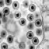
Brucellosis* Bacteria
Genus Species
Brucella (B. melitensis, B. abortus, B. suis, B. canis )
Skin or mucous membrane contact with infected animals, their blood, tissue, and other body fluids
Symptoms
High and protracted (extended) fever. Infection affects bone, heart, gallbladder, kidney, spleen, and causes highly disseminated lesions and abscess
Incubation
1-15 weeks
Fact
Most commonly reported U.S. laboratory-associated bacterial infection in man
Treatment
Antibiotic combination: streptomycina, tetracycline, and sulfonamides
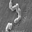
Salmonellosis Bacteria
Genus Species
Salmonella (S. cholera-suis, S. enteriditis, S. typhymurium, S. typhi)
Host Range
Domestic (dogs, cats, monkeys, rodents, laboratory rodents, rep-tiles [especially “turtles], chickens and fish) and herd animals” (cattle, chickens, pigs)
Transmission
Direct contact as well as indirect consumption (eggs, food vehicles using eggs, etc.). Human to “human transmission also possible”
Symptoms
Mild gastroenteritiis (diarrhea) to high fever, severe headache, and spleen enlargement. May lead to focal infection in any organ or tissue of the body)
Ranges from asymptomatic carrier to severe bacillary dysentery with high fevers, weakness, severe abdominal cramps, prostration, edema of the “face and neck, and diarrhea with blood, mucous and inflammatory” cells
Incubation
Varies by species. 16 hours to 7 days.
Fact
Highly infective. Low number of organisms capable of causing infection. Rate of “infection in imported monkeys can be high”
Treatment
Intravenous fluids and electrolytes, Antibiotics: amoxicillin, “trimethoprin- sulfamethoxazole”
Leptospirosis Bacteria
Genus Species
Leptospira interrogans
Host Range
Animal, human urine
Transmission
Direct contact with urine of infected dogs, mice or rats. Indirect contact with urine “contaminated materials. Droplet transmission via” aerosols of urine
Symptoms
Phase 1: headache, muscle ache, eye pain with bright lights, chills and fever. Phase 2: fever with stiffness of the neck and inflammation of the nerves to the eyes, brain, spinal column
Incubation
7-12 Days
Fact
Leptospirosis associated with liver and kidney disease is “called Weil’s syndrome,” characterized by jaundice
Treatment
Doxycycline and penicillin. Severely ill patients may need IV “fluids, antibiotics and dialysis”
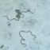
Relapsing fever Bacteria
Genus Species
Borreliae spp. [B. recurrentis (louse- borne), B. hemsii (tick-borne)]
Host Range
Animals
Transmission
Tick-borne, blood transfusions
Symptoms
Fever, headache and muscle pain that lasts 4-10 days and subsides. Afebrile period lasting 5-6 days followed by a recurrence of acute symptoms
Incubation
5-15 days
Fact
Epidemic relapsing fever (transmitted by lice) is more severe than endemic relapsing fever (transmitted by ticks)
Treatment
Tetracyclines, chloramphenicol
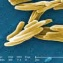
Tuberculosis Bacteria
Genus Species
Mycobacterium tuberculosis
Host Range
Primarily humans, cattle, non-human primates, other animals (rodents)
Transmission
Inhalation of aerosol droplets, contaminated equipment, bites
Symptoms
Ranges from fever and fatigue to chronic pulmonary disease (fatal). Lungs, kidney, vasculature (affects all parts of body)
Incubation
2-5 weeks
Fact
Multidrug-resistant TB (MDR TB) is an infection resistant to at least two first-line anti- TB drugs, isoniazid and rifampicin
Relatively uncommon disease for humans, but when left untreated, has 95% fatality rate
Treatment
Chloramphenicol, doxycycline, sulfisoxazole, or cotrimoxazole. IV chloramphenicol for bacteremia
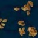
Tularemia* Bacteria
Genus Species
Francisella tularensis
Host Range
Isolated from 100 species of wild animals (e.g., rabbits, skunk), 9 domestic mammals, 25 species of birds, frogs, and reptiles
Transmission
Arthropods, direct or indirect contact, ingestion of contaminated meats, inhalation of dust, materials contaminated with urine, feces or tissues, bites and scratches
Symptoms
High fever, chills, headache, focal ulcers, swollen lymph nodes
Incubation
1-10 days
Fact
Bacterium formerly known as Pasteurella tularensis
Treatment
Streptomycin, tetracycline
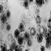
Herpesvirus Virus
Genus Species
Herpesvirus Type 1 (fever blister, cold sore) and Type 2 (genital herpes), Herpesvirus hominis, Herpes simiae (Herpes B)
Host Range
Human, non-human primates
Transmission
Produce latent infections in host and frequently shed without overt lesions
Symptoms
Frequently asymptomatic. May have vesicular lesions, neurological or flu- like symptoms
Incubation
5 days to 1 month
Fact
Herpes simiae is 100% fatal if untreated; Herpes Types 1 and 2 are not fatal but cause chronic infection from recurrences
Treatment
Acyclovir or valcyclovir will arrest the virus but will not eliminate virus from the host
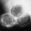
Poxvirus* Virus
Genus Species
Monkeypox, vaccinia, cowpox, buffalopox, cantagalo, and aracatuba viruses
Host Range
Non-human primates, swine, cattle, horses, birds
Transmission
Direct skin contact with lesions on infected animals
Animal bite, contact with infected saliva or tissue
Symptoms
Headache, fever, malaise, nervousness, dilation of pupils, salivation, excessive perspiration, insomnia, paralysis of throat “muscles, inability to swallow, convulsions, seizures, generalized” paralysis and death
Incubation
3-8 weeks
Fact
Untreated, the fatality rate is 100%; Post- exposure treatment is effective until day 6 post- infection
Treatment
Antirabies vaccine before clinical onset of symptoms; post-exposure treatment “with rabies immune globulin & vaccine”
Fever, anorexia, vague abdominal discomfort, nausea and vomiting, sometimes arthralgias and rash, “often progressing to jaundice; fever may be absent or mild”
Incubation
3-6 weeks
Fact
Hepatitis A has no carrier state; Hepatitis B 20% chronic; “Hepatitis C 85% chronic”
Treatment
Vaccines for Hepatitis A and B only. Treatment with alpha “inter-feron and intra-venous immuno-” globulins (HBIG)
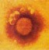
Lymphocytic Choriomeningitis (LCM) Virus
Genus Species
Multiple arenaviruses
Host Range
Rodents (hamsters, mice, guinea pigs), monkeys and humans
Transmission
Infected mice excrete virus in saliva, urine and feces; man infected through inhalation of aerosolized particles of (urine, feces or saliva) contaminated with virus
Symptoms
Biphasic febrile illness, mild influenza like illness or occasionally meningeal or meningoencephalomyelitic symptoms, transverse myelitis
Incubation
15-21 days
Fact
46 documented laboratory-acquired cases with 5 deaths; cases also reported arising from contaminated cell lines
Treatment
No specific treatment; anti-inflammatory drugs may be useful; No known vaccines
Vesicular Stomatitis* Virus
Genus Species
Multiple strains of Vesicular Stomatitis Virus (VSV) Rhabdoviridiae
Host Range
Bovine, equine, porcine animals.
Transmission
Probably arthropod-borne via the bite of an infected sandfly, mosquito or blackfly; by direct contact with infected animals (vesicular fluid, saliva)
Symptoms
Infuenza-like illness, malaise, fever, headache, nausea and vomiting
Incubation
24-48 hours
Fact
Documented hazard to personnel (45 laboratory-acquired infections before 1980) handling infected livestock, tissues and virulent isolates
Treatment
Virus is self-limiting and illness is short in duration. (3-6 days)
Sub-viral Agents and Related Diseases (i.e., Scrapie)* non-RNA/DNA Infectious Protein Virus- like particle
Genus Species
Transmissable Spongiform Encephalopathies (TSE): BSE and vCJD (vCreutzfeld- Jacob Disease)
Host Range
Adult sheep goats, and cows can infect humans
Transmission
Ingestion or handling of brain tissue or unfixed brain cells from infected animals
Symptoms
Degeneration of the nervous system, severe variable alteration of the grey matter of the brain
Incubation
2-5 years
Fact
The agent responsible for TSE’s is smaller than the smallest known virus and has not been completely characterized
Treatment
There are no known treatments or vaccines for these TSE’s
Amoebic Dysentery Parasite (protozoa)
Genus Species
Entamoeba histolytica
Host Range
Monkeys can readily transmit the agent to humans
Transmission
Food, water, fomites, insects. Fecal-oral route. Cyst is resistant to drying
Symptoms
Frequent passage of feces/stool, loose stools and vomiting. Variations depending on parasites. Can be frequent urge with high or low volume of stool, with or without some associated mucus and even blood
Incubation
2 days to several months to even years
Fact
Harmless amoebas can live in the intestines for years without causing symptoms. Attacks can last from a few days to weeks
Treatment
Antiamebic drugs (Iodoquinol, metronidazole) and antibiotics to treat associated bacterial infections
Giardiasis Giardiasis
Genus Species
Giardia lamblia
Host Range
Dogs, monkeys
Transmission
Drinking contaminated water, person-to-person “contact, eating contaminated food, and” direct contact with infected animals
Symptoms
Ranges from asymptomatic to nausea, fatigue, anorexia, severe diarrhea and high fever
Incubation
3-25 days
Fact
Most common waterborne diarrheal disease in humans
Treatment
Quinacrine hydrochloride, “metronidazole, tinidazole,” albendazole and furazolidone
Balantadidiasis Parasite (protozoa)
Genus Species
Balantidium coli
Host Range
Monkeys, pigs, and other nonhuman primates readily transmitted to humans
Transmission
Direct contact with feces, person-to-person transmission
Symptoms
Ranges from asymptomatic to severe diarrhea
Incubation
4-5 days
Fact
Cysts survive for long periods in the environment
Treatment
Tetracycline, Iodoquinol, metronidazole
Malaria Parasite (protozoa)
Genus Species
Plasmodium species: P. falciparum “P. vivax P. ovale P. malariae”
Multiple Ascaris species (A. lumbricoides, A. suum )
Host Range
Pigs; Humans are the definitive host
Transmission
Ingestion of contaminated food or water
Symptoms
Lung damage, intestinal symptoms
Incubation
4 to 8 weeks
Fact
Ascaris lumbricoidesis the “largest and, globally, the most widespread of all human intestinal” roundworms
Treatment
Pyrantel pamoate, mebendazole, surgery for removal in lung tissue
Visceral Larval Migrans (VLM) Nematode
Genus Species
Nematodes of the Toxocara genus (T. canis, T. felis )
Host Range
Dogs, cats
Transmission
Ingestion of eggs through direct contact with feces or contaminated materials
Symptoms
Fever, cough, wheezing, itching/irritation associated with migration of nematodes into tissues. Ocular migration may cause blindness
Incubation
4 to 7 weeks
Fact
More than 80% of all puppies in the U.S. are infected with this nematode
Treatment
Usually a self-limiting disease–treatment only given in severe cases (glucocorticoids and bronchodilators for pulmonary disease)
Strongyloidiasis Nematode
Genus Species
Strongyloides stercoralis
Host Range
Dogs, cats, monkeys
Transmission
Careless handling of contaminated fecal materials
Symptoms
Abdominal pain, diarrhea, and rash. Less commonly, nausea, vomiting, weight loss and cough. Severe infection can cause severe tissue damage, systemic damage of various tissues in the body and potential death
Incubation
skin 7 hours; lung 1 week; intestines 2 wks; average 4-21 days
Fact
The parasite penetrates the skin and migrates to the lungs. Then it travels up to the mouth and is swallowed into the intestinal tract
Treatment
Ivermectin with Albendazole as the alternative
Trichinosis Nematode
Genus Species
Trichinella spiralis
Host Range
Generally pigs or cattle
Transmission
Eating undercooked flesh of animals infected with the larvae
Symptoms
Nausea, vomiting, diarrhea, fever, neurological disorders, possible cardiac involvement
*Images were obtained from the U.S. Centers for Disease Control & Prevention Public Health Image Library (PHIL). 08/2008
13.5Appendix E: Glossary
Aerosol Transmissible Disease (ATD)
A disease or pathogen for which droplet or airborne precautions are required.
Aerosol Transmissible Disease Plan (ATD plan)
The California OSHA ATD standard requires that laboratories adopt standard biosafety practices to protect lab workers handling materials containing pathogens that may spread through aerosols and cause serious disease. The employer must develop, implement, and annually review a written ATD Biosafety Plan (Plan). https://ehs.stanford.edu/forms-tools/local-aerosol-transmissible-diseases-biosafety-plan-laboratories.
Administrative Panel on Biosafety (APB)
Also know at other institutions as the Institutional Biosafety Committee (IBC). This committee reviews all Stanford activities related the use of recombinant DNA, risk group 2 or higher infectious agents, and human subjects research involving gene transfer.
Biosafety The application of knowledge, techniques and equipment to prevent personal, laboratory and environmental exposure to potentially infectious agents or biohazards. Biosafety defines the containment conditions under which infectious agents can be safely manipulated.
Biosafety Cabinet (BSC) An enclosed, ventilated laboratory workspace for safely working with materials contaminated with (or potentially contaminated with) pathogens requiring a defined biosafety level. The biosafety cabinets are designed to provide three types of protection:
Personal protection for the staff from material inside the cabinet
Protection for the material inside of the cabinet from outside contamination
Protection for the environment from the material inside of the cabinet
There are three types of BSCs: Class I, II, and III. The use of Class I BSCs is not advised at Stanford. Contact Biosafety if you feel you need to purchase one. Please refer to the table online https://ehs.stanford.edu/topic/biosafety-biosecurity/equipment or in the biosafety manual.
Biosafety Level (BSL)
A set of biocontainment precautions required to isolate dangerous biological agents in an enclosed laboratory facility. The levels of containment range from BSL – 1 to BSL – 4.
Biohazardous Agents
A bacterium, virus, or other microorganism that can cause disease in healthy individuals, animals or plants.
Bloodborne Pathogens (BBP)
Pathogenic microorganisms that are present in human blood and other potentially infectious material (OPIM) and can cause disease.
Bloodborne Pathogens Exposure Control Plan (Local ECP)
The Local Bloodborne Pathogen Exposure Control Plan (Local ECP) helps the Principal Investigator (PI)/ supervisor complete requirements for the Bloodborne Pathogen (BBP) Standard. The PI/supervisor reviews the Local ECP with input from employees covered by the BBP Standard, with the goal to minimize personnel exposure to BBPs in blood or other potentially infectious materials (OPIMs). ECP Form located at https://ehs.stanford.edu/forms-tools/local-bloodborne-pathogen-exposure-control-plan.
Engineering Controls
Safety equipment (primary barriers) includes biological safety cabinets, enclosed containers and other designed controls designed to remove or minimize exposures to hazardous biological agents.
Gene Transfer
Delivery of exogenous genetic material (DNA or RNA) to somatic cells for the purpose of modifying those cells.
NIH Guidelines
The NIH Guidelines for Research Involving Recombinant or Synthetic Nucleic Acid Molecules (NIH Guidelines) detail safety practices and containment procedures for basic and clinical research involving recombinant or synthetic nucleic acid molecules, including the creation and use of organisms and viruses containing recombinant or synthetic nucleic acid molecules.
Pathogen
A bacterium, virus, or other microorganism that can cause disease.
Personal Protective Equipment (PPE)
Refers to protective clothing (lab coats, gowns, gloves, etc.) eye protection (safety glasses, goggles, face shields, etc.) or equipment (Biosafety Cabinets) designed to protect the wearer’s body from injury or infection.
Recombinant DNA (rDNA)
Refers to DNA which has been altered by joining genetic material from two different sources. It usually involves putting a gene from one organism into the genome of a different organism, generally of a different species.
Synthetic nucleic acid (sNA)
Nucleic acid molecules that are chemically or by other means synthesized or amplified, including those that are chemically or otherwise modified but can base pair with naturally occurring nucleic acid molecules (i.e. synthetic nucleic acids).
Training
Tier I: General Safety and Emergency Preparedness EHS-4200-WEB
Transgene
A gene that is taken from the genome of one organism and introduced into the genome of another organism by artificial techniques.
Transgenic An organism that contains genetic material into which DNA from an unrelated organism has been artificially introduced.
Universal precautions An approach to infection control to treat all human blood and certain human body fluids as if they were known to be infectious for HIV, HBV and other bloodborne pathogens. Universal Precautions includes frequent handwashing, no mouth pipetting, no food or drink in the lab and proper disposal of biohazardous/medical waste, as well as the use of engineering controls and Personal Protective Equipment (PPE). Engineering controls include items such as biosafety cabinets, ventilation systems, closed top centrifuge rotors, etc.; these are the primary methods to control exposure. PPE such as gloves, lab coats, eye protection, face shields or others must be selected and used as appropriate
Viral Vector
Viruses that are used to deliver genetic material into cells.